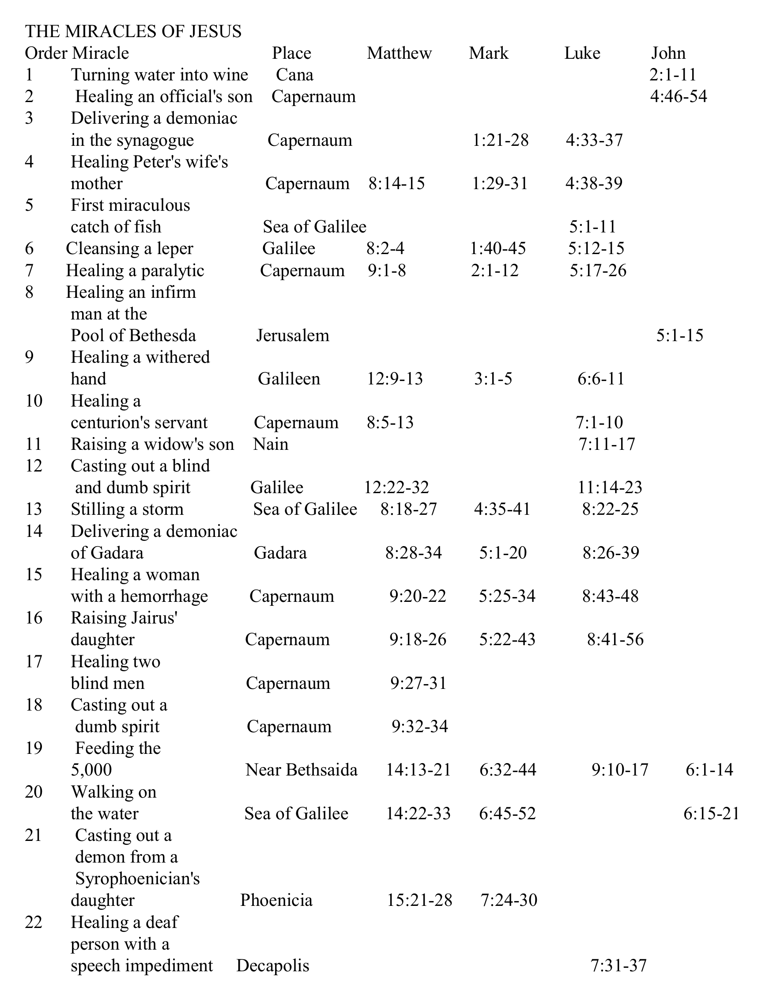
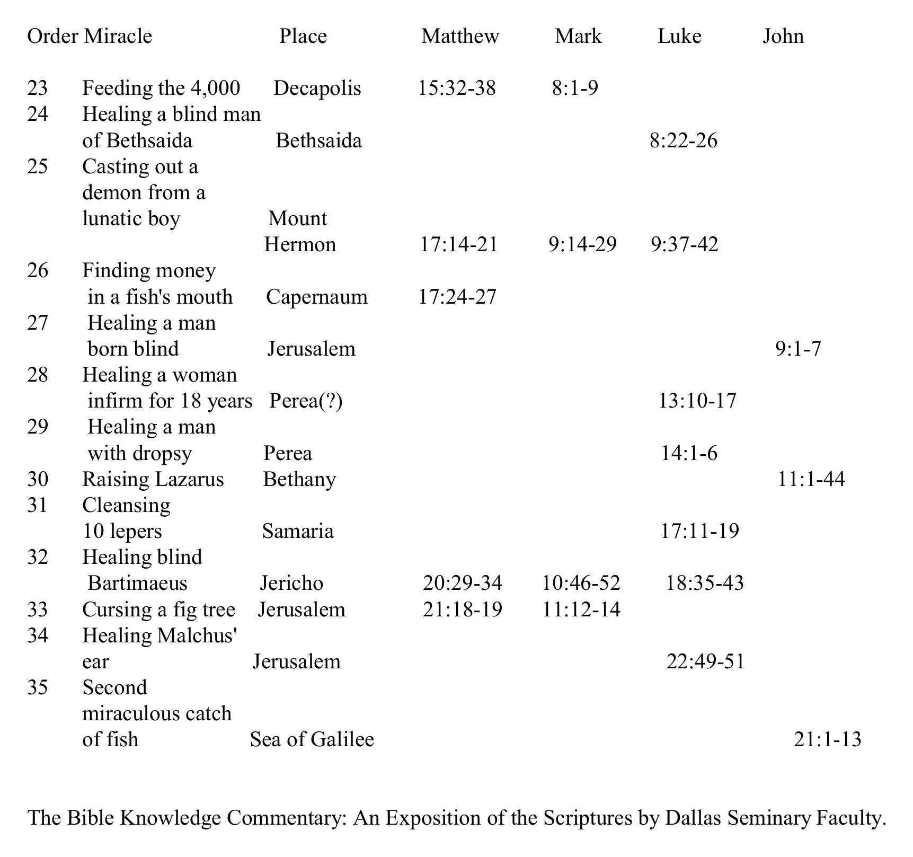

John
Read each chapter first, then work through Jim’s questions for that chapter. His wording is unchanged, including punctuation and typographical quirks.
OUTLINE
I.PROLOGUE—INCARNATION, CHAPTER 1:1–18
A.Word Is God, Chapter 1:1–3
B.Word Became Flesh, Chapter 1:14
C.Word Revealed God, Chapter 1:18
II.Introduction, Chapter 1:19–51
A.Witness of John the Baptist, Chapter 1:19–36
B.Witness of Andrew, Chapter 1:37–42
C.Witness of Philip, Chapter 1:43–46
D.Witness of Nathanael, Chapter 1:47–51
III.Witness of Works and Words, Chapters 2–12
A.Jesus at Marriage in Cana (First Work), Chapter 2:1–12
B.Jesus Cleanses Temple During Passover in Jerusalem (First Word), Chapter 2:13–22 C.Jesus Interviews Nicodemus in Jerusalem (Second Word), Chapter 2:23–3:36 D.Jesus Interviews Woman at Well in Sychar (Third Word), Chapter 4:1–45 E.Jesus Heals Nobleman’s Son in Capernaum (Second Work), Chapter 4:46–54 F.Jesus Heals Man at Pool of Bethesda (Third Work), Chapter 5
G.Jesus Feeds Five Thousand on East of Sea of Galilee (Fourth Work and Word), Chapter 6
H.Jesus Teaches at Feast of Tabernacles in Temple (Fifth Word), Chapter 7 I.Jesus in Temple Forgives Woman Taken in Adultery (Sixth Word), Chapter 8 J.Jesus Opens Eyes of Man Born Blind in Jerusalem (Fifth Work), Chapter 9 1.Record of Miracle, Chapter 9:1–7
2.Reaction to Miracle, Chapter 9:8–41
K.Jesus Is the Good Shepherd (Seventh Word), Chapter 10
1.Humanity—Christ in Form of Servant, Chapter 10:1–21
2.Deity—Christ Equal with God, Chapter 10:22–42
L.Jesus Raises Lazarus from Dead in Bethany (Sixth Work), Chapter 11 M.Witness of Jew and Gentile to Jesus, Chapter 12
1.Jesus Comes to Bethany for Supper, Chapter 12:1–11
2.Jesus Comes to Jerusalem—Tearful Entry, Chapter 12:12–19 3.Jesus Comes to Greeks, Chapter 12:20–26
4.Jesus Comes to His Hour, Chapter 12:27–36
5.Jesus Comes to End of Public Ministry, Chapter 12:37–50
IV.Witness of Jesus to His Witnesses, Upper Room Discourse, Chapters 13–17 A.Jesus Washes Feet of Disciples, Chapter 13
B.Jesus Comforts His Disciples, Chapter 14
C.Jesus Is Genuine Vine; Disciples Are Branches, Chapter 15
D.Jesus Will Send Holy Spirit During His Absence, Chapter 16
E.The Lord’s Prayer, Chapter 17
1.Jesus Prays for Himself, Chapter 17:1–5
2.Jesus Prays for Disciples, Chapter 17:6–19
3.Jesus Prays for His Church, Chapter 17:20–26
V.Witness to World, Chapters 18–20
A.Arrest and Trial of Jesus, Chapter 18 1.Arrest in Gethsemane; Trial before Annas, Chapter 18:1–14 2.First Denial by Simon Peter, Chapter 18:15–18
3.Trial before High Priest, Chapter 18:19–24
4.Second Denial by Simon Peter, Chapter 18:25–27
5.Trial before Pilate, Chapter 18:28–40
B.Death of Jesus at Golgotha; Burial in Tomb of Joseph, Chapter 19 C.Resurrection of Jesus; Appearances to Mary, Disciples, Thomas, Chapter 20 VI.Epilogue—Glorification, Chapter 21
The Resurrected Jesus Is Still God
Lord of Our Wills—Directs our Service (v. 6)
Lord of Our Hearts—Motive for Service (vv. 15–17)
Lord of Our Minds—Lack of Knowledge No Excuse from Service (v. 22)
Another division of the Gospel of John:
LIGHT—John 1–12
LOVE—John 13–17
LIFE—John 18–21
Introduction to John
I want to give credit to three sources for this introduction.
J Vernon Magee Through the Bible
Warren Wiersbe Chapter by Chapter Bible Commentary
The Bible Knowledge Commentary: An Exposition of the Scriptures by Dallas Seminary Faculty.
It is generally assumed that the Gospel of John is easy to understand. Often you hear the cliche, “The Gospel of John is the simple gospel. ” And the simplicity of the language has deceived a great many folk. It is written in monosyllabic and disyllabic words. Let me lift out a couple of verses to illustrate. Notice how simple these words are: “He came unto his own, and his own received him not. But as many as received him, to them gave he power to become the sons of God, even to them that believe on his name” (John 1:11–12).
We have no problem with the words themselves, but actually, we’re dealing here with the most profound gospel. Take an expression like this: “ye in me, and I in you” which appears in John 14:20. Seven words—one conjunction, two prepositions and four pronouns—and you could ask any child in the fourth grade the meaning of any one of those words and he could give you a definition. But you put them together—“ye in me, and I in you”—and neither the most profound theologian nor the greatest philosopher has ever been able to probe the depths of their meaning. “Ye in me” we know means salvation; “and I in you” means sanctification, but beyond that none of us can go very far. We think, sometimes, because we know the meaning of words that we know what is being said. The words are simple, but the meaning is deep.
This Gospel is so profound because it touches the heart of God.
It has been agreed by church leaders through out the years that John was the author. He was a very old man on the Island of Patmos where he wrote the Revelation. There is the fragment of the this Gospel that has been authenticated (by classical methods) about 50 A.D.
However, the more significant question is: Why did John write his gospel? All the other apostles were dead, the writers of the New Testament were all gone, and he alone was left. In an attempt to answer this question we find again a diversity of theories. There are those who say that it was written to meet the first heresy of the church which was Gnosticism. The Gnostics believed that Jesus was God but not man at all, that the apostles only thought they saw Him, but actually did not. And Irenaeus expressly makes the statement that the purpose of John was to confute the Gnostic Cerinthus. But Tholuck makes it very clear that this is not a polemic gospel at all and he is not attempting to meet that issue. Also, there are those who say that it is a supplement to what the others had written, that he merely added other material. But Hase answers that by saying, “This Gospel is no mere patchwork to fill up a vacant space.” You see, these theories do not give an adequate answer to account for all the peculiar facts that are in this gospel which a true explanation must do. And, in my judgment, the only satisfactory explanation is that John wrote at the request of the church which already had three Gospels (Matthew, Mark, and Luke were being circulated) and wanted something more spiritual and deep, something that would enable them to grow. That’s exactly what Augustine, the great saint of the early church, said:
In the four Gospels, or rather in the four books of the one Gospel, the Apostle St. John not undeservedly with reference to his spiritual understanding compared to an eagle, has lifted higher, and far more sublimely than the other three, his proclamation, and in lifting it up he has wished our hearts also to be lifted (Gregory, Key to the Gospels, pp. 285–286).
That is the purpose of the Gospel of John. That is the reason that he wrote it.
Accordingly, therefore, when we come to the Gospel of John, we find that he does not take us to Bethlehem. We will never grow spiritually by singing “O Little Town of Bethlehem” umpteen times at Christmas. John won’t take us to Bethlehem because he wants you and me to grow as believers. John takes us down the silent corridors of eternity, through the vast emptiness of space, to a beginning that is not a beginning at all. “In the beginning was the Word” (John 1:1). Some say that this world came into being three billion years ago. I think they’re pikers. I think it has been around a lot longer than that. What do you think God has been doing in eternity past, twiddling His thumbs? May I say to you, He had a great deal to do in the past, and He has eternity behind Him. So when you read, “In the beginning,” go as far back as your little mind can go into eternity past, put down your peg—and Jesus Christ comes out of eternity to meet you. “In the beginning was [not is] the Word, and the Word was with God, and the Word was God” (John 1:1). Then come on down many more billions of years. “All things were made by him; and without him was not any thing made that was made” (John 1:3). Then John, in the fourteenth verse, takes another step: “And the Word was made flesh, and dwelt among us” (John 1:14). The Greek philosophers and the Greek mind for which Luke wrote would stop right there and say, “We’re through with you. We can’t follow you.” But John was not writing for them, and he goes even further. “No man hath seen God at any time; the only begotten Son, which is in the bosom of the Father, he hath declared him” (John 1:18). “Declared him” is exegeted Him, led Him out in the open where man can see Him and come to know Him. The Man who had no origin is the Son who comes out of eternity.
Luke, who was a medical doctor, looked at Him under a “microscope.” Though John’s method is altogether different, he comes to the same conclusion as did Luke. You could never call John’s method scientific. The Christian who has come to a knowledge of Christ and faith in Him doesn’t need to have the Virgin Birth gone over again; he already believes that. Therefore, when he comes to the Gospel of John, he finds sheer delight and joy unspeakable as he reads and studies it.
Unfortunately, though, he thinks the unbeliever ought to have it also. And you’ll find it is used in personal work more than any other gospel. After all, doesn’t the average Christian consider it the simple gospel? Is it simple? It’s profound. It’s for believers. It enables them to grow.
When I was a pastor in Pasadena, I had a doctor friend who, because of his position, was able to get together students at Cal Tech for a Bible class. Do you know what he taught? You’re right, the Gospel of John. He told me, “You know, I really shook that bunch of boys with the first chapter.” I met him several weeks after that and asked him how the class was getting on. “Oh,” he said, “they quit coming.” Well, after all, they had been in a school where you pour things into a test tube, where you look at things under a microscope. I said, “Why didn’t you take the Gospel of Luke?” “Because,” he said, “I wanted to give them the simple gospel.” Well, he didn’t. John is not simple; it’s profound. It is for believers.
Also there was a seminary professor in this area not long ago who was asked to teach the Bible to a group of businessmen at a noon luncheon. Guess what book he taught. You’re right! He said, “They don’t know very much; so I’ll give them the Gospel of John.” I wish he’d given them the Gospel of Mark. That’s the gospel of action, the gospel of power, the gospel for the strong man. But he gave them the Gospel of John.
The Gospel of John is for those who already believe. When you come to chapters thirteen through seventeen you can write a sign over it, For Believers Only and you could put under that, All Others Stay Out. I don’t think that section was ever meant for an unbeliever. Jesus took His own into the Upper Room and revealed to them things that enabled them to grow. And no other gospel writer gives us that. Why? Because they’re the evangelists who are oresentine Christ as the Savior of the world. Somebody asks, “But doesn’t John do that?” Yes, he does, but he is primarily writing for the growth of believers.
John gives more about the resurrected Christ than does any other gospel writer; in fact, more than all the others put together. Paul said that, though we have known Christ after the flesh, we don’t know Him that way anymore. Rather, we know Him as the resurrected Christ. For this reason John attempts to give the appearances of Jesus after His resurrection, and he mentions seven of them.
The first was one of the most dramatic as He appeared to Mary Magdalene there in the garden. The second was to the disciples in the Upper Room, Thomas being absent. The third appearance was again to the disciples in the Upper Room with Thomas present (these three appearances are recorded in ch. 20). Then we see Him appearing by the Sea of Galilee. Several disciples were out fishing. He called to them from the shore, “Do you have any fish?” (see John 21:5).
He is going to ask you that some day, and He’s going to ask me. Have you been doing any fishing recently? Well, you catch them only the way He tells you. You have to fish by His instructions.
And then He prepared breakfast for them. I wish I had been there for that outdoor breakfast. That was a real cookout. And friend, He still wants to feed you in the morning—also during the day and in the evening—with spiritual food. Then He commissioned Simon Peter: “Simon, do you love Me?” (see John 21:15–17). Jesus did not say that you have to be a graduate of a seminary to be able to serve Him. He asked, “Do you love Me?” That’s the one condition. Don’t misunderstand me. If you love Him, you will want training to prepare you for the ministry He has for you, but He wants to know that you love Him. The reason multitudes of folk are not serving Him today is that they do not love Him. And then Peter was told that he was to be a martyr; but John, no, he will live on in order to write this gospel, three epistles, and the Book of Revelation. There are the seven appearances that John records, and all of them are for believers; they minister to us today.
At the time of the birth of Christ there was a great expectation throughout the heathen world.
That was a strange thing.
Suetonius relates that “an ancient and definite expectation had spread throughout the East, that a ruler of the world would, at about the time, arise in Judaea.” Tacitus makes a similar statement. Schlegel mentions that Buddhist missionaries traveling to China met Chinese sages going to seek the Messiah about 33 A.D. (Life of Vespasian, c. iv.).
There was an expectation throughout the world at that time that He might come. And it was out of the mysterious East that the wise men came to Jerusalem, “Saying, Where is he that is born King of the Jews? ….” (Matt. 2:2).
The marvel is that this Gospel of John, so definitely designed to meet the need of believers, is also designed for the Oriental mind as is no other. Whom do I mean by Orientals? The Egyptians, the Babylonians, the Persians, the uncounted millions in India and in China. Even to this good day we know so little about that area of the world. What about Tibet or Outer Mongolia? It is still the mysterious East. We do know this: there is fabulous wealth there, and right next to it is abject poverty. Out of this land of mystery came the wise men. They were bringing gifts—gold, frankincense, and myrrh for Him. There are a lot of questions to be answered there. Out of that land of mystery they came. That Oriental splendor that we’ve heard so much about reveals unbelievable wealth, and it is still there—ornate palaces, gaudy grandeur, priceless gems. It has so entranced the West that, when Columbus started out for this country (we give him credit for discovering America, but he wasn’t looking for our continent), he was trying to find a new route to the East in order to bring back something of the wealth that was there.
However, by the side of that wealth there is extreme poverty of the basest sort, dire destitution, millions living in squalor and misery. Their worldly goods consist of the rags they have on their backs. One hundred million will die of starvation in this next decade, we’re told. You may ask, “Well, why don’t we send food for them?” There’s not enough to go around. Our decision is what hundred million will starve? Will it be these or those? But the thing that arrests us is that the poor were crying for help, and the wealthy had found no solution to the problems of life. The Orient gave freest reign to human desires. Although they had this freedom, there was no satisfaction. They’ve had the great pagan religions—Buddhism, Shintoism, Hinduism, Confucianism, and Mohammedanism. Yet out of that area, with all that they had, their wise men came asking, “… Where is he that is born King of the Jews? for we have seen his star in the east, and are come to worship him” (Matt. 2:2). They needed salvation. They had none; no religion ever gave that to them. And this is the reason people in the mysterious East have reveled in the Gospel of John as no others have. It is a mind today that will revel in the Gospel of John. The Lord Jesus can meet the need of this type of mind, as John reveals.
Out of heaven’s glory He came, that One who was before any beginning that we can envision. “And the Word was made flesh” and walked down here among men. The Orient had religion. After all, Israel belonged to that area of the world. The Orient had all kinds of religion. They had temples—ornate, hideous, with degrading rituals. They had cults of the occult. And John tells us that the first public act of the Lord Jesus was to go into the temple of that day and cleanse it. By this He is telling them something, these people who worshiped in their degrading temples, that God is holy. If you’re going to worship God you’ll have to be cleansed; the temple will have to be cleansed; there can be no compromise with evil or wrong.
A religious ruler came to Jesus one nights—John alone tells us this. Our Lord that night said to this religious ruler, who had everything and was religious to his fingertips, “You must be born again” (see John 3:3). He needed to have a new life and get rid of the old religion. Jesus said that He had not come to sew a patch on the old garment, but He came to give them the robe of righteousness that would enable them to stand before a holy God. This is what that area of the world needed.
Womanhood was degraded in the Orient. Our Lord ennobled womanhood because He came, born of a woman. He went to a wedding to answer the mockery that they’d made of marriage with the harems of the East. Christ went to a wedding and put His blessing upon it. Also Jesus sat down at a well and had a conversation with a woman of very questionable character. But she was a woman for whom He later died. The soul of a woman was as precious to Him as the soul of a man.
Christ fed the multitudes, followed the meal with a discourse on the Bread of Life, and then escaped because He did not want them to make Him king of their stomachs.
The Oriental mind would understand Jesus’ discourse on the Bread of Life. It is unfortunate that the managers of our supermarkets don’t understand it—they think it’s bread and beans on the shelf that’s important, and He said it’s not. A man in the Orient who hasn’t bread and beans will understand that. I am afraid some of us miss it today.
The Lord Jesus said in this gospel, “I am the light of the world; I am the bread of life; I am the way, the truth and the life.” And the Orient was wretched and perishing in that day, as it is today. John says: “And many other signs truly did Jesus in the presence of his disciples, which are not written in this book: But these are written, that ye might believe that Jesus is the Christ, the Son of God; and that believing ye might have life through his name” (John 20:30–31). The thing that they needed above everything else was life. And, friend, this is what the whole world needs today—not religion, but life!
Now before we begin our study of this magnificent gospel, let me call your attention to some striking features.
The first three Gospels are called the Synoptic Gospels because they are written from the same viewpoint with a similar pattern. The fourth Gospel is different.
1. Matthew and Mark emphasize the miracles of Jesus, and Luke gives attention to the parables. John does neither.
2. The miracles in John are given as signs and were chosen with a great deal of discrimination in order to interpret certain great truths. (For example, the discourse on the Bread of Life follows the feeding of the five thousand.) There are eleven specific signs in the Gospel of John.
3. There are no parables in the fourth gospel. The word parable does occur one time in John 10:6, but it is not the regular Greek word paraboleµ but paroimia. This word ought not to be translated “parable” at all. The story of the Good Shepherd is not a parable; it is a discourse. John gives us a chronological order which is well to note. The fact of the matter is, if you will follow it along, it will give you a ladder on which you can fit the three-year ministry of Christ. (For example, in John 1:29, 35 he says, “The next day …, the next day.”) He’s giving not only a logical but also a chronological sequence in his gospel. He also gives attention to places and cities—for example, “Bethabara beyond Jordan” (John 1:28); “Cana of Galilee” (John 2:1). The deity of Christ is emphasized in this gospel and is actually in the foreground. But the humanity of Christ is not lost sight of. Do you notice it is only John who tells about His trip through Samaria, and that He sat down at the well, and that He was weary with His iourney? Can you think of anything more human than that? Well, I can think of one thing—Jesus wept. And it is John who tells us that, by the way.
The name Jesus is used almost entirely to the exclusion of Christ in this gospel. That is strange because the emphasis is upon the deity of Christ, and you’d think that he would use the name Christ. Then why does he use the name Jesus? It is because God became man.
There is a mighty movement in this gospel and it is stated in John 16:28. “I came forth from the Father, and am come into the world: again, I leave the world, and go to the Father.” God became a man; this is the simple statement of the sublime fact.
OUTLINE I.PROLOGUE—INCARNATION, CHAPTER 1:1–18
A.Word Is God, Chapter 1:1–3
B.Word Became Flesh, Chapter 1:14
C.Word Revealed God, Chapter 1:18
II.Introduction, Chapter 1:19–51
A.Witness of John the Baptist, Chapter 1:19–36
B.Witness of Andrew, Chapter 1:37–42
C.Witness of Philip, Chapter 1:43–46
D.Witness of Nathanael, Chapter 1:47–51
III.Witness of Works and Words, Chapters 2–12
A.Jesus at Marriage in Cana (First Work), Chapter 2:1–12
B.Jesus Cleanses Temple During Passover in Jerusalem (First Word), Chapter 2:13–22 C.Jesus Interviews Nicodemus in Jerusalem (Second Word), Chapter 2:23–3:36 D.Jesus Interviews Woman at Well in Sychar (Third Word), Chapter 4:1–45 E.Jesus Heals Nobleman’s Son in Capernaum (Second Work), Chapter 4:46–54 F.Jesus Heals Man at Pool of Bethesda (Third Work), Chapter 5
G.Jesus Feeds Five Thousand on East of Sea of Galilee (Fourth Work and Word), Chapter 6
H.Jesus Teaches at Feast of Tabernacles in Temple (Fifth Word), Chapter 7 I.Jesus in Temple Forgives Woman Taken in Adultery (Sixth Word), Chapter 8 J.Jesus Opens Eyes of Man Born Blind in Jerusalem (Fifth Work), Chapter 9 1.Record of Miracle, Chapter 9:1–7
2.Reaction to Miracle, Chapter 9:8–41
K.Jesus Is the Good Shepherd (Seventh Word), Chapter 10
1.Humanity—Christ in Form of Servant, Chapter 10:1–21
2.Deity—Christ Equal with God, Chapter 10:22–42
L.Jesus Raises Lazarus from Dead in Bethany (Sixth Work), Chapter 11 M.Witness of Jew and Gentile to Jesus, Chapter 12
1.Jesus Comes to Bethany for Supper, Chapter 12:1–11
2.Jesus Comes to Jerusalem—Tearful Entry, Chapter 12:12–19 3.Jesus Comes to Greeks, Chapter 12:20–26
4.Jesus Comes to His Hour, Chapter 12:27–36
5.Jesus Comes to End of Public Ministry, Chapter 12:37–50
IV.Witness of Jesus to His Witnesses, Upper Room Discourse, Chapters 13–17 A.Jesus Washes Feet of Disciples, Chapter 13
B.Jesus Comforts His Disciples, Chapter 14
C.Jesus Is Genuine Vine; Disciples Are Branches, Chapter 15
D.Jesus Will Send Holy Spirit During His Absence, Chapter 16
E.The Lord’s Prayer, Chapter 17
1.Jesus Prays for Himself, Chapter 17:1–5
2.Jesus Prays for Disciples, Chapter 17:6–19
3.Jesus Prays for His Church, Chapter 17:20–26
V.Witness to World, Chapters 18–20
A.Arrest and Trial of Jesus, Chapter 18
1.Arrest in Gethsemane; Trial before Annas, Chapter 18:1–14 2.First Denial by Simon Peter, Chapter 18:15–18
3.Trial before High Priest, Chapter 18:19–24
4.Second Denial by Simon Peter, Chapter 18:25–27
5.Trial before Pilate, Chapter 18:28–40
B.Death of Jesus at Golgotha; Burial in Tomb of Joseph, Chapter 19 C.Resurrection of Jesus; Appearances to Mary, Disciples, Thomas, Chapter 20 VI.Epilogue—Glorification, Chapter 21
The Resurrected Jesus Is Still God
Lord of Our Wills—Directs our Service (v. 6)
Lord of Our Hearts—Motive for Service (vv. 15–17)
Lord of Our Minds—Lack of Knowledge No Excuse from Service (v. 22)
Another division of the Gospel of John:
LIGHT—John 1–12
LOVE—John 13–17
LIFE—John 18–21
Charts, maps, and diagrams
These are Jim’s study visuals. Hole-punch marks, phantom scan lines, and page-edge artifacts have been cleaned; the drawings themselves are unchanged.


Chapter 1
Packet 1 - John
John 1 (King James Version)
1In the beginning was the Word, and the Word was with God, and the Word was God. 2The same was in the beginning with God. 3All things were made by him; and without him was not any thing made that was made. 4In him was life; and the life was the light of men. 5And the light shineth in darkness; and the darkness comprehended it not. 6There was a man sent from God, whose name was John. 7The same came for a witness, to bear witness of the Light, that all men through him might believe. 8He was not that Light, but was sent to bear witness of that Light. 9That was the true Light, which lighteth every man that cometh into the world. 10He was in the world, and the world was made by him, and the world knew him not. 11He came unto his own, and his own received him not. 12But as many as received him, to them gave he power to become the sons of God, even to them that believe on his name: 13Which were born, not of blood, nor of the will of the flesh, nor of the will of man, but of God. 14And the Word was made flesh, and dwelt among us, (and we beheld his glory, the glory as of the only begotten of the Father,) full of grace and truth. 15John bare witness of him, and cried, saying, This was he of whom I spake, He that cometh after me is preferred before me: for he was before me. 16And of his fulness have all we received, and grace for grace. 17For the law was given by Moses, but grace and truth came by Jesus Christ. 18No man hath seen God at any time; the only begotten Son, which is in the bosom of the Father, he hath declared him. 19And this is the record of John, when the Jews sent priests and Levites from Jerusalem to ask him, Who art thou? 20And he confessed, and denied not; but confessed, I am not the Christ. 21And they asked him, What then? Art thou Elias? And he saith, I am not. Art thou that prophet? And he answered, No. 22Then said they unto him, Who art thou? that we may give an answer to them that sent us. What sayest thou of thyself? 23He said, I am the voice of one crying in the wilderness, Make straight the way of the Lord, as said the prophet Esaias. 24And they which were sent were of the Pharisees. 25And they asked him, and said unto him, Why baptizest thou then, if thou be not that Christ, nor Elias, neither that prophet? 26John answered them, saying, I baptize with water: but there standeth one among you, whom ye know not; 27He it is, who coming after me is preferred before me, whose shoe’s latchet I am not worthy to unloose. 28These things were done in Bethabara beyond Jordan, where John was baptizing. 29The next day John seeth Jesus coming unto him, and saith, Behold the Lamb of God, which taketh away the sin of the world. 30This is he of whom I said, After me cometh a man which is preferred before me: for he was before me. 31And I knew him not: but that he should be made manifest to Israel, therefore am I come baptizing with water. 32And John bare record, saying, I saw the Spirit descending from heaven like a dove, and it abode upon him. 33And I knew him not: but he that sent me to baptize with water, the same said unto me, Upon whom thou shalt see the Spirit descending, and remaining on him, the same is he which baptizeth with the Holy Ghost. 34And I saw, and bare record that this is the Son of God. 35Again the next day after John stood, and two of his disciples; 36And looking upon Jesus as he walked, he saith, Behold the Lamb of God! 37And the two disciples heard him speak, and they followed Jesus. 38Then Jesus turned, and saw them following, and saith unto them, What seek ye? They said unto him, Rabbi, (which is to say, being interpreted, Master,) where dwellest thou? 39He saith unto them, Come and see. They came and saw where he dwelt, and abode with him that day: for it was about the tenth hour. 40One of the two which heard John speak, and followed him, was Andrew, Simon Peter’s brother. 41He first findeth his own brother Simon, and saith unto him, We have found the Messias, which is, being interpreted, the Christ. 42And he brought him to Jesus. And when Jesus beheld him, he said, Thou art Simon the son of Jona: thou shalt be called Cephas, which is by interpretation, A stone. 43The day following Jesus would go forth into Galilee, and findeth Philip, and saith unto him, Follow me. 44Now Philip was of Bethsaida, the city of Andrew and Peter. 45Philip findeth Nathanael, and saith unto him, We have found him, of whom Moses in the law, and the prophets, did write, Jesus of Nazareth, the son of Joseph. 46And Nathanael said unto him, Can there any good thing come out of Nazareth? Philip saith unto him, Come and see. 47Jesus saw Nathanael coming to him, and saith of him, Behold an Israelite indeed, in whom is no guile! 48Nathanael saith unto him, Whence knowest thou me? Jesus answered and said unto him, Before that Philip called thee, when thou wast under the fig tree, I saw thee. 49Nathanael answered and saith unto him, Rabbi, thou art the Son of God; thou art the King of Israel. 50Jesus answered and said unto him, Because I said unto thee, I saw thee under the fig tree, believest thou? thou shalt see greater things than these. 51And he saith unto him, Verily, verily, I say unto you, Hereafter ye shall see heaven open, and the angels of God ascending and descending upon the Son of man.Jim’s questions
-
1)Who is the Word and how do you know? V 1 and V 14
John 1:1 (KJV) 1 In the beginning was the Word, and the Word was with God, and the Word was God.John 1:14 (KJV) 14 And the Word was made flesh, and dwelt among us, (and we beheld his glory, the glory as of the only begotten of the Father,) full of grace and truth.Answer:
-
2)How do we know that the Jesus was God? V 1
John 1:1 (KJV) 1 In the beginning was the Word, and the Word was with God, and the Word was God.Answer:
-
3)Was the Word also the Creator of all things? V 3
John 1:3 (KJV) 3 All things were made by him; and without him was not any thing made that was made.Answer:
-
4)Where does life come from? V 4
John 1:4 (KJV) 4 In him was life; and the life was the light of men.Answer:
-
5)Where does the Light come from? V 4
John 1:4 (KJV) 4 In him was life; and the life was the light of men.Answer:
-
6)Was John the Light? V 8 If not what was his purpose? V7
John 1:8 (KJV) 8 He was not that Light, but was sent to bear witness of that Light.John 1:7 (KJV) 7 The same came for a witness, to bear witness of the Light, that all men through him might believe.Answer:
-
7)Was he rejected by His people? V 11
John 1:11 (KJV) 11 He came unto his own, and his own received him not.Answer:
-
8)Who are the children of God? V 12 , 13
John 1:12-13 (KJV) 12 But as many as received him, to them gave he power to become the sons of God, even to them that believe on his name: 13 Which were born, not of blood, nor of the will of the flesh, nor of the will of man, but of God.Answer:
-
9)What two qualities fill the Word? V 15
John 1:15 (KJV) 15 John bare witness of him, and cried, saying, This was he of whom I spake, He that cometh after me is preferred before me: for he was before me.Answer:
-
10)Since no one has seen God how do we know He exists? V 18
John 1:18 (KJV) 18 No man hath seen God at any time; the only begotten Son, which is in the bosom of the Father, he hath declared him.Answer:
-
11)Who was John? V 23
John 1:23 (KJV) 23 He said, I am the voice of one crying in the wilderness, Make straight the way of the Lord, as said the prophet Esaias.Answer:
-
12)In what way does John answer the question about his baptism? V 26 , 31
John 1:26 (KJV) 26 John answered them, saying, I baptize with water: but there standeth one among you, whom ye know not;John 1:31 (KJV) 31 And I knew him not: but that he should be made manifest to Israel, therefore am I come baptizing with water.Answer:
-
13)How does John introduce Jesus to the crowd? V 29
John 1:29 (KJV) 29 The next day John seeth Jesus coming unto him, and saith, Behold the Lamb of God, which taketh away the sin of the world.Answer:
-
14)What was the sign for John to identify the Messiah? V 33
John 1:33 (KJV) 33 And I knew him not: but he that sent me to baptize with water, the same said unto me, Upon whom thou shalt see the Spirit descending, and remaining on him, the same is he which baptizeth with the Holy Ghost.Answer:
-
15)And what is John’s testimony? V 34
John 1:34 (KJV) 34 And I saw, and bare record that this is the Son of God.Answer:
-
16)What were the two disciples seeking? V 38, 39
John 1:38-39 (KJV) 38 Then Jesus turned, and saw them following, and saith unto them, What seek ye? They said unto him, Rabbi, (which is to say, being interpreted, Master,) where dwellest thou? 39 He saith unto them, Come and see. They came and saw where he dwelt, and abode with him that day: for it was about the tenth hour.Answer:
-
17)Who do you think these disciples were? And why? V 39,40
John 1:39-40 (KJV) 39 He saith unto them, Come and see. They came and saw where he dwelt, and abode with him that day: for it was about the tenth hour. 40 One of the two which heard John speak, and followed him, was Andrew, Simon Peter’s brother.Answer:
-
18)Who was the third person noted by the author? V 42
John 1:42 (KJV) 42 And he brought him to Jesus. And when Jesus beheld him, he said, Thou art Simon the son of Jona: thou shalt be called Cephas, which is by interpretation, A stone.Answer:
-
19)Who was next and where was he from? V 43,44
John 1:43-44 (KJV) 43 The day following Jesus would go forth into Galilee, and findeth Philip, and saith unto him, Follow me. 44 Now Philip was of Bethsaida, the city of Andrew and Peter.Answer:
-
20)Who else was from Bethsaida? V 44
John 1:44 (KJV) 44 Now Philip was of Bethsaida, the city of Andrew and Peter.Answer:
-
21)Who did Phillip find? V 45
John 1:45 (KJV) 45 Philip findeth Nathanael, and saith unto him, We have found him, of whom Moses in the law, and the prophets, did write, Jesus of Nazareth, the son of Joseph.Answer:
-
22)By what title are they calling Jesus? V 41
John 1:41 (KJV) 41 He first findeth his own brother Simon, and saith unto him, We have found the Messias, which is, being interpreted, the Christ.Answer:
-
23)what did Jesus do that impressed Nathaniel? V 48
John 1:48 (KJV) 48 Nathanael saith unto him, Whence knowest thou me? Jesus answered and said unto him, Before that Philip called thee, when thou wast under the fig tree, I saw thee.Answer:
-
24)What event in the OT pointed at Jesus statement ‘you will see Heaven opened and angels descending on the Son of Man? V 51
John 1:51 (KJV) 51 And he saith unto him, Verily, verily, I say unto you, Hereafter ye shall see heaven open, and the angels of God ascending and descending upon the Son of man.Answer:
-
Thought question – How can I be like John the Baptist?
Verse needed — thought or personal question with no verse number on the packet; no single verse could be determined.
Answer:
Chapter 2
Packet 2 - John
John 2 (King James Version)
1And the third day there was a marriage in Cana of Galilee; and the mother of Jesus was there: 2And both Jesus was called, and his disciples, to the marriage. 3And when they wanted wine, the mother of Jesus saith unto him, They have no wine. 4Jesus saith unto her, Woman, what have I to do with thee? mine hour is not yet come. 5His mother saith unto the servants, Whatsoever he saith unto you, do it. 6And there were set there six waterpots of stone, after the manner of the purifying of the Jews, containing two or three firkins apiece. 7Jesus saith unto them, Fill the waterpots with water. And they filled them up to the brim. 8And he saith unto them, Draw out now, and bear unto the governor of the feast. And they bare it. 9When the ruler of the feast had tasted the water that was made wine, and knew not whence it was: (but the servants which drew the water knew;) the governor of the feast called the bridegroom, 10And saith unto him, Every man at the beginning doth set forth good wine; and when men have well drunk, then that which is worse: but thou hast kept the good wine until now. 11This beginning of miracles did Jesus in Cana of Galilee, and manifested forth his glory; and his disciples believed on him. 12After this he went down to Capernaum, he, and his mother, and his brethren, and his disciples: and they continued there not many days. 13And the Jews’ passover was at hand, and Jesus went up to Jerusalem, 14And found in the temple those that sold oxen and sheep and doves, and the changers of money sitting: 15And when he had made a scourge of small cords, he drove them all out of the temple, and the sheep, and the oxen; and poured out the changers’ money, and overthrew the tables; 16And said unto them that sold doves, Take these things hence; make not my Father’s house an house of merchandise. 17And his disciples remembered that it was written, The zeal of thine house hath eaten me up. 18Then answered the Jews and said unto him, What sign shewest thou unto us, seeing that thou doest these things? 19Jesus answered and said unto them, Destroy this temple, and in three days I will raise it up. 20Then said the Jews, Forty and six years was this temple in building, and wilt thou rear it up in three days? 21But he spake of the temple of his body. 22When therefore he was risen from the dead, his disciples remembered that he had said this unto them; and they believed the scripture, and the word which Jesus had said. 23Now when he was in Jerusalem at the passover, in the feast day, many believed in his name, when they saw the miracles which he did. 24But Jesus did not commit himself unto them, because he knew all men, 25And needed not that any should testify of man: for he knew what was in man.Jim’s questions
-
1)What is the crisis at the wedding at Cana? V 1–3
John 2:1-3 (KJV) 1 And the third day there was a marriage in Cana of Galilee; and the mother of Jesus was there: 2 And both Jesus was called, and his disciples, to the marriage. 3 And when they wanted wine, the mother of Jesus saith unto him, They have no wine.Answer:
-
2)What is t the heart of Jesus answer to his mother? V 4
John 2:4 (KJV) 4 Jesus saith unto her, Woman, what have I to do with thee? mine hour is not yet come.Answer:
-
3)Why did Mary not argue with Jesus? V 5
John 2:5 (KJV) 5 His mother saith unto the servants, Whatsoever he saith unto you, do it.Answer:
-
4)How much water did the water pots hold? V 6
John 2:6 (KJV) 6 And there were set there six waterpots of stone, after the manner of the purifying of the Jews, containing two or three firkins apiece.Answer:
-
5)How long did it take for the water to become wine? Is this natural? V
John 2:7-9 (KJV) 7 Jesus saith unto them, Fill the waterpots with water. And they filled them up to the brim. 8 And he saith unto them, Draw out now, and bear unto the governor of the feast. And they bare it. 9 When the ruler of the feast had tasted the water that was made wine, and knew not whence it was: (but the servants which drew the water knew;) the governor of the feast called the bridegroom,Answer:
-
6)Where did He go after the wedding? Locate it on a map. V 12
John 2:12 (KJV) 12 After this he went down to Capernaum, he, and his mother, and his brethren, and his disciples: and they continued there not many days.Answer:
-
7)Explain what the moneychangers did and how they exploited the people? V 14
John 2:14 (KJV) 14 And found in the temple those that sold oxen and sheep and doves, and the changers of money sitting:Answer:
-
8)What was Jesus indictment of the merchants in the Temple? V 16
John 2:16 (KJV) 16 And said unto them that sold doves, Take these things hence; make not my Father’s house an house of merchandise.Answer:
-
9)How was this a fulfillment of prophecy? V 19
John 2:19 (KJV) 19 Jesus answered and said unto them, Destroy this temple, and in three days I will raise it up.Answer:
-
10)What did His disciples remember when He was raised from the dead? V 22
John 2:22 (KJV) 22 When therefore he was risen from the dead, his disciples remembered that he had said this unto them; and they believed the scripture, and the word which Jesus had said.Answer:
-
11)How did this information affect them? V 22
John 2:22 (KJV) 22 When therefore he was risen from the dead, his disciples remembered that he had said this unto them; and they believed the scripture, and the word which Jesus had said.Answer:
-
12)What did Jesus know about men? V 24
John 2:24 (KJV) 24 But Jesus did not commit himself unto them, because he knew all men,Answer:
-
Thought question – In light of Jesus statement about the temple verse 16, what is your opinion of income related activities in a church.
John 2:16 (KJV) 16 And said unto them that sold doves, Take these things hence; make not my Father’s house an house of merchandise.Answer:
Chapter 3
Packet 3 - John
John 3 (King James Version)
1There was a man of the Pharisees, named Nicodemus, a ruler of the Jews: 2The same came to Jesus by night, and said unto him, Rabbi, we know that thou art a teacher come from God: for no man can do these miracles that thou doest, except God be with him. 3Jesus answered and said unto him, Verily, verily, I say unto thee, Except a man be born again, he cannot see the kingdom of God. 4Nicodemus saith unto him, How can a man be born when he is old? can he enter the second time into his mother’s womb, and be born? 5Jesus answered, Verily, verily, I say unto thee, Except a man be born of water and of the Spirit, he cannot enter into the kingdom of God. 6That which is born of the flesh is flesh; and that which is born of the Spirit is spirit. 7Marvel not that I said unto thee, Ye must be born again. 8The wind bloweth where it listeth, and thou hearest the sound thereof, but canst not tell whence it cometh, and whither it goeth: so is every one that is born of the Spirit. 9Nicodemus answered and said unto him, How can these things be? 10Jesus answered and said unto him, Art thou a master of Israel, and knowest not these things? 11Verily, verily, I say unto thee, We speak that we do know, and testify that we have seen; and ye receive not our witness. 12If I have told you earthly things, and ye believe not, how shall ye believe, if I tell you of heavenly things? 13And no man hath ascended up to heaven, but he that came down from heaven, even the Son of man which is in heaven. 14And as Moses lifted up the serpent in the wilderness, even so must the Son of man be lifted up: 15That whosoever believeth in him should not perish, but have eternal life. 16For God so loved the world, that he gave his only begotten Son, that whosoever believeth in him should not perish, but have everlasting life. 17For God sent not his Son into the world to condemn the world; but that the world through him might be saved. 18He that believeth on him is not condemned: but he that believeth not is condemned already, because he hath not believed in the name of the only begotten Son of God. 19And this is the condemnation, that light is come into the world, and men loved darkness rather than light, because their deeds were evil. 20For every one that doeth evil hateth the light, neither cometh to the light, lest his deeds should be reproved. 21But he that doeth truth cometh to the light, that his deeds may be made manifest, that they are wrought in God. 22After these things came Jesus and his disciples into the land of Judaea; and there he tarried with them, and baptized. 23And John also was baptizing in Aenon near to Salim, because there was much water there: and they came, and were baptized. 24For John was not yet cast into prison. 25Then there arose a question between some of John’s disciples and the Jews about purifying. 26And they came unto John, and said unto him, Rabbi, he that was with thee beyond Jordan, to whom thou barest witness, behold, the same baptizeth, and all men come to him. 27John answered and said, A man can receive nothing, except it be given him from heaven. 28Ye yourselves bear me witness, that I said, I am not the Christ, but that I am sent before him. 29He that hath the bride is the bridegroom: but the friend of the bridegroom, which standeth and heareth him, rejoiceth greatly because of the bridegroom’s voice: this my joy therefore is fulfilled. 30He must increase, but I must decrease. 31He that cometh from above is above all: he that is of the earth is earthly, and speaketh of the earth: he that cometh from heaven is above all. 32And what he hath seen and heard, that he testifieth; and no man receiveth his testimony. 33He that hath received his testimony hath set to his seal that God is true. 34For he whom God hath sent speaketh the words of God: for God giveth not the Spirit by measure unto him. 35The Father loveth the Son, and hath given all things into his hand. 36He that believeth on the Son hath everlasting life: and he that believeth not the Son shall not see life; but the wrath of God abideth on him.Jim’s questions
-
1)What were Nicodemus’ titles? V 1
John 3:1 (KJV) 1 There was a man of the Pharisees, named Nicodemus, a ruler of the Jews:Answer:
-
2)Why did he think that Jesus was from God? V 2.
John 3:2 (KJV) 2 The same came to Jesus by night, and said unto him, Rabbi, we know that thou art a teacher come from God: for no man can do these miracles that thou doest, except God be with him.Answer:
-
3)What was Jesus answer? V 3
John 3:3 (KJV) 3 Jesus answered and said unto him, Verily, verily, I say unto thee, Except a man be born again, he cannot see the kingdom of God.Answer:
-
4)When Nicodemus questioned this answer what did Jesus Say to him? V 10 - 12
John 3:10-12 (KJV) 10 Jesus answered and said unto him, Art thou a master of Israel, and knowest not these things? 11 Verily, verily, I say unto thee, We speak that we do know, and testify that we have seen; and ye receive not our witness. 12 If I have told you earthly things, and ye believe not, how shall ye believe, if I tell you of heavenly things?Answer:
-
5)What keeps Nicodemus from believing? V 11 - 12
John 3:11-12 (KJV) 11 Verily, verily, I say unto thee, We speak that we do know, and testify that we have seen; and ye receive not our witness. 12 If I have told you earthly things, and ye believe not, how shall ye believe, if I tell you of heavenly things?Answer:
-
6)What title does Jesus claim in V 13
John 3:13 (KJV) 13 And no man hath ascended up to heaven, but he that came down from heaven, even the Son of man which is in heaven.Answer:
-
7)What is this matter of the serpent in the wilderness? V 14 - 15 Num 21:9
Numbers 21:9 (KJV) 9 And Moses made a serpent of brass, and put it upon a pole, and it came to pass, that if a serpent had bitten any man, when he beheld the serpent of brass, he lived.John 3:14-15 (KJV) 14 And as Moses lifted up the serpent in the wilderness, even so must the Son of man be lifted up: 15 That whosoever believeth in him should not perish, but have eternal life.Answer:
-
8)Look at John 3:16. How can we be sure of God’s love?
John 3:16 (KJV) 16 For God so loved the world, that he gave his only begotten Son, that whosoever believeth in him should not perish, but have everlasting life.Answer:
-
9)Who has been judged ? John 3:18.
John 3:18 (KJV) 18 He that believeth on him is not condemned: but he that believeth not is condemned already, because he hath not believed in the name of the only begotten Son of God.Answer:
-
10)Why do men love darkness? V 19
John 3:19 (KJV) 19 And this is the condemnation, that light is come into the world, and men loved darkness rather than light, because their deeds were evil.Answer:
-
Thought question — Who do I know that I can show to them God’s love and what might I do.
Verse needed — thought or personal question with no verse number on the packet; no single verse could be determined.
Answer:
Chapter 4
Packet 4 - John
John 4 (King James Version)
1When therefore the LORD knew how the Pharisees had heard that Jesus made and baptized more disciples than John, 2(Though Jesus himself baptized not, but his disciples,) 3He left Judaea, and departed again into Galilee. 4And he must needs go through Samaria. 5Then cometh he to a city of Samaria, which is called Sychar, near to the parcel of ground that Jacob gave to his son Joseph. 6Now Jacob’s well was there. Jesus therefore, being wearied with his journey, sat thus on the well: and it was about the sixth hour. 7There cometh a woman of Samaria to draw water: Jesus saith unto her, Give me to drink. 8(For his disciples were gone away unto the city to buy meat.) 9Then saith the woman of Samaria unto him, How is it that thou, being a Jew, askest drink of me, which am a woman of Samaria? for the Jews have no dealings with the Samaritans. 10Jesus answered and said unto her, If thou knewest the gift of God, and who it is that saith to thee, Give me to drink; thou wouldest have asked of him, and he would have given thee living water. 11The woman saith unto him, Sir, thou hast nothing to draw with, and the well is deep: from whence then hast thou that living water? 12Art thou greater than our father Jacob, which gave us the well, and drank thereof himself, and his children, and his cattle? 13Jesus answered and said unto her, Whosoever drinketh of this water shall thirst again: 14But whosoever drinketh of the water that I shall give him shall never thirst; but the water that I shall give him shall be in him a well of water springing up into everlasting life. 15The woman saith unto him, Sir, give me this water, that I thirst not, neither come hither to draw. 16Jesus saith unto her, Go, call thy husband, and come hither. 17The woman answered and said, I have no husband. Jesus said unto her, Thou hast well said, I have no husband: 18For thou hast had five husbands; and he whom thou now hast is not thy husband: in that saidst thou truly. 19The woman saith unto him, Sir, I perceive that thou art a prophet. 20Our fathers worshipped in this mountain; and ye say, that in Jerusalem is the place where men ought to worship. 21Jesus saith unto her, Woman, believe me, the hour cometh, when ye shall neither in this mountain, nor yet at Jerusalem, worship the Father. 22Ye worship ye know not what: we know what we worship: for salvation is of the Jews. 23But the hour cometh, and now is, when the true worshippers shall worship the Father in spirit and in truth: for the Father seeketh such to worship him. 24God is a Spirit: and they that worship him must worship him in spirit and in truth. 25The woman saith unto him, I know that Messias cometh, which is called Christ: when he is come, he will tell us all things. 26Jesus saith unto her, I that speak unto thee am he. 27And upon this came his disciples, and marvelled that he talked with the woman: yet no man said, What seekest thou? or, Why talkest thou with her? 28The woman then left her waterpot, and went her way into the city, and saith to the men, 29Come, see a man, which told me all things that ever I did: is not this the Christ? 30Then they went out of the city, and came unto him. 31In the mean while his disciples prayed him, saying, Master, eat. 32But he said unto them, I have meat to eat that ye know not of. 33Therefore said the disciples one to another, Hath any man brought him ought to eat? 34Jesus saith unto them, My meat is to do the will of him that sent me, and to finish his work. 35Say not ye, There are yet four months, and then cometh harvest? behold, I say unto you, Lift up your eyes, and look on the fields; for they are white already to harvest. 36And he that reapeth receiveth wages, and gathereth fruit unto life eternal: that both he that soweth and he that reapeth may rejoice together. 37And herein is that saying true, One soweth, and another reapeth. 38I sent you to reap that whereon ye bestowed no labour: other men laboured, and ye are entered into their labours. 39And many of the Samaritans of that city believed on him for the saying of the woman, which testified, He told me all that ever I did. 40So when the Samaritans were come unto him, they besought him that he would tarry with them: and he abode there two days. 41And many more believed because of his own word; 42And said unto the woman, Now we believe, not because of thy saying: for we have heard him ourselves, and know that this is indeed the Christ, the Saviour of the world. 43Now after two days he departed thence, and went into Galilee. 44For Jesus himself testified, that a prophet hath no honour in his own country. 45Then when he was come into Galilee, the Galilaeans received him, having seen all the things that he did at Jerusalem at the feast: for they also went unto the feast. 46So Jesus came again into Cana of Galilee, where he made the water wine. And there was a certain nobleman, whose son was sick at Capernaum. 47When he heard that Jesus was come out of Judaea into Galilee, he went unto him, and besought him that he would come down, and heal his son: for he was at the point of death. 48Then said Jesus unto him, Except ye see signs and wonders, ye will not believe. 49The nobleman saith unto him, Sir, come down ere my child die. 50Jesus saith unto him, Go thy way; thy son liveth. And the man believed the word that Jesus had spoken unto him, and he went his way. 51And as he was now going down, his servants met him, and told him, saying, Thy son liveth. 52Then enquired he of them the hour when he began to amend. And they said unto him, Yesterday at the seventh hour the fever left him. 53So the father knew that it was at the same hour, in the which Jesus said unto him, Thy son liveth: and himself believed, and his whole house. 54This is again the second miracle that Jesus did, when he was come out of Judaea into Galilee.Jim’s questions
-
1)Why did Jesus leave Judea and go to Galilee? V 1,2
John 4:1-2 (KJV) 1 When therefore the Lord knew how the Pharisees had heard that Jesus made and baptized more disciples than John, 2 (Though Jesus himself baptized not, but his disciples,)Answer:
-
2)What was the problem with going through Samaria?
John 4:4 (KJV) 4 And he must needs go through Samaria.Answer:
-
3)Who dug the well at Sychar and what time was it? V5,6
John 4:5-6 (KJV) 5 Then cometh he to a city of Samaria, which is called Sychar, near to the parcel of ground that Jacob gave to his son Joseph. 6 Now Jacob’s well was there. Jesus therefore, being wearied with his journey, sat thus on the well: and it was about the sixth hour.Answer:
-
4)How does He surprise her? V 9
John 4:9 (KJV) 9 Then saith the woman of Samaria unto him, How is it that thou, being a Jew, askest drink of me, which am a woman of Samaria? for the Jews have no dealings with the Samaritans.Answer:
-
5)How does He challenge her? V10
John 4:10 (KJV) 10 Jesus answered and said unto her, If thou knewest the gift of God, and who it is that saith to thee, Give me to drink; thou wouldest have asked of him, and he would have given thee living water.Answer:
-
6)What does He tell her about the living water? 13,14
John 4:13-14 (KJV) 13 Jesus answered and said unto her, Whosoever drinketh of this water shall thirst again: 14 But whosoever drinketh of the water that I shall give him shall never thirst; but the water that I shall give him shall be in him a well of water springing up into everlasting life.Answer:
-
7)Then He commands her to do what? V 16
John 4:16 (KJV) 16 Jesus saith unto her, Go, call thy husband, and come hither.Answer:
-
8)What does He already know about her? V 17,18
John 4:17-18 (KJV) 17 The woman answered and said, I have no husband. Jesus said unto her, Thou hast well said, I have no husband: 18 For thou hast had five husbands; and he whom thou now hast is not thy husband: in that saidst thou truly. Question 9 She expresses the current dispute between Jews and Samaratans. What was it? V 20John 4:20 (KJV) 20 Our fathers worshipped in this mountain; and ye say, that in Jerusalem is the place where men ought to worship. Note: number printed without “)” on the packet.Answer:
-
9)She expresses the current dispute between Jews and Samaratans. What was it? V 20
-
10)He then reveals a new truth to her. What is it? V 22-24
John 4:22-24 (KJV) 22 Ye worship ye know not what: we know what we worship: for salvation is of the Jews. 23 But the hour cometh, and now is, when the true worshippers shall worship the Father in spirit and in truth: for the Father seeketh such to worship him. 24 God is a Spirit: and they that worship him must worship him in spirit and in truth.Answer:
-
11)Who does He claim to be? V 25-26
John 4:25-26 (KJV) 25 The woman saith unto him, I know that Messias cometh, which is called Christ: when he is come, he will tell us all things. 26 Jesus saith unto her, I that speak unto thee am he.Answer:
-
12)What is her response? V 28-29
John 4:28-29 (KJV) 28 The woman then left her waterpot, and went her way into the city, and saith to the men, 29 Come, see a man, which told me all things that ever I did: is not this the Christ?Answer:
-
13)What is Jesus’ food? V 34
John 4:34 (KJV) 34 Jesus saith unto them, My meat is to do the will of him that sent me, and to finish his work.Answer:
-
14)If you are a reaper who do you rejoice with? V 36
John 4:36 (KJV) 36 And he that reapeth receiveth wages, and gathereth fruit unto life eternal: that both he that soweth and he that reapeth may rejoice together.Answer:
-
15)Why did some of the people believe? V 39
John 4:39 (KJV) 39 And many of the Samaritans of that city believed on him for the saying of the woman, which testified, He told me all that ever I did.Answer:
-
16)What caused others to believe? V 41
John 4:41 (KJV) 41 And many more believed because of his own word;Answer:
-
17)What did they believe? V 42
John 4:42 (KJV) 42 And said unto the woman, Now we believe, not because of thy saying: for we have heard him ourselves, and know that this is indeed the Christ, the Saviour of the world.Answer:
-
18)Jesus left and went to Galilee. He was now back on home ground. What was His comment? V 44
John 4:44 (KJV) 44 For Jesus himself testified, that a prophet hath no honour in his own country.Answer:
-
19)Who meets Him when He returns to Galilee and what is his request? V 46.
John 4:46 (KJV) 46 So Jesus came again into Cana of Galilee, where he made the water wine. And there was a certain nobleman, whose son was sick at Capernaum.Answer:
-
20)What is the people’s problem? V 48
John 4:48 (KJV) 48 Then said Jesus unto him, Except ye see signs and wonders, ye will not believe.Answer:
-
21)What does the Royal official want? V 49
John 4:49 (KJV) 49 The nobleman saith unto him, Sir, come down ere my child die.Answer:
-
22)What time was the son healed? V 52
John 4:52 (KJV) 52 Then enquired he of them the hour when he began to amend. And they said unto him, Yesterday at the seventh hour the fever left him.Answer:
-
23)What was the result of this healing? V 53.
John 4:53 (KJV) 53 So the father knew that it was at the same hour, in the which Jesus said unto him, Thy son liveth: and himself believed, and his whole house.Answer:
-
Thought question – Pick out two principles of evangelism in the story of the woman at the well that you can use in your own personal evangelism.
Verse needed — thought or personal question with no verse number on the packet; no single verse could be determined.
Answer:
Chapter 5
Packet 5 - John
John 5 (King James Version)
1After this there was a feast of the Jews; and Jesus went up to Jerusalem. 2Now there is at Jerusalem by the sheep market a pool, which is called in the Hebrew tongue Bethesda, having five porches. 3In these lay a great multitude of impotent folk, of blind, halt, withered, waiting for the moving of the water. 4For an angel went down at a certain season into the pool, and troubled the water: whosoever then first after the troubling of the water stepped in was made whole of whatsoever disease he had. 5And a certain man was there, which had an infirmity thirty and eight years. 6When Jesus saw him lie, and knew that he had been now a long time in that case, he saith unto him, Wilt thou be made whole? 7The impotent man answered him, Sir, I have no man, when the water is troubled, to put me into the pool: but while I am coming, another steppeth down before me. 8Jesus saith unto him, Rise, take up thy bed, and walk. 9And immediately the man was made whole, and took up his bed, and walked: and on the same day was the sabbath. 10The Jews therefore said unto him that was cured, It is the sabbath day: it is not lawful for thee to carry thy bed. 11He answered them, He that made me whole, the same said unto me, Take up thy bed, and walk. 12Then asked they him, What man is that which said unto thee, Take up thy bed, and walk? 13And he that was healed wist not who it was: for Jesus had conveyed himself away, a multitude being in that place. 14Afterward Jesus findeth him in the temple, and said unto him, Behold, thou art made whole: sin no more, lest a worse thing come unto thee. 15The man departed, and told the Jews that it was Jesus, which had made him whole. 16And therefore did the Jews persecute Jesus, and sought to slay him, because he had done these things on the sabbath day. 17But Jesus answered them, My Father worketh hitherto, and I work. 18Therefore the Jews sought the more to kill him, because he not only had broken the sabbath, but said also that God was his Father, making himself equal with God. 19Then answered Jesus and said unto them, Verily, verily, I say unto you, The Son can do nothing of himself, but what he seeth the Father do: for what things soever he doeth, these also doeth the Son likewise. 20For the Father loveth the Son, and sheweth him all things that himself doeth: and he will shew him greater works than these, that ye may marvel. 21For as the Father raiseth up the dead, and quickeneth them; even so the Son quickeneth whom he will. 22For the Father judgeth no man, but hath committed all judgment unto the Son: 23That all men should honour the Son, even as they honour the Father. He that honoureth not the Son honoureth not the Father which hath sent him. 24Verily, verily, I say unto you, He that heareth my word, and believeth on him that sent me, hath everlasting life, and shall not come into condemnation; but is passed from death unto life. 25Verily, verily, I say unto you, The hour is coming, and now is, when the dead shall hear the voice of the Son of God: and they that hear shall live. 26For as the Father hath life in himself; so hath he given to the Son to have life in himself; 27And hath given him authority to execute judgment also, because he is the Son of man. 28Marvel not at this: for the hour is coming, in the which all that are in the graves shall hear his voice, 29And shall come forth; they that have done good, unto the resurrection of life; and they that have done evil, unto the resurrection of damnation. 30I can of mine own self do nothing: as I hear, I judge: and my judgment is just; because I seek not mine own will, but the will of the Father which hath sent me. 31If I bear witness of myself, my witness is not true. 32There is another that beareth witness of me; and I know that the witness which he witnesseth of me is true. 33Ye sent unto John, and he bare witness unto the truth. 34But I receive not testimony from man: but these things I say, that ye might be saved. 35He was a burning and a shining light: and ye were willing for a season to rejoice in his light. 36But I have greater witness than that of John: for the works which the Father hath given me to finish, the same works that I do, bear witness of me, that the Father hath sent me. 37And the Father himself, which hath sent me, hath borne witness of me. Ye have neither heard his voice at any time, nor seen his shape. 38And ye have not his word abiding in you: for whom he hath sent, him ye believe not. 39Search the scriptures; for in them ye think ye have eternal life: and they are they which testify of me. 40And ye will not come to me, that ye might have life. 41I receive not honour from men. 42But I know you, that ye have not the love of God in you. 43I am come in my Father’s name, and ye receive me not: if another shall come in his own name, him ye will receive. 44How can ye believe, which receive honour one of another, and seek not the honour that cometh from God only? 45Do not think that I will accuse you to the Father: there is one that accuseth you, even Moses, in whom ye trust. 46For had ye believed Moses, ye would have believed me: for he wrote of me. 47But if ye believe not his writings, how shall ye believe my words?Jim’s questions
-
1)What is the Hebrew name for the sheep gate? V 2
John 5:2 (KJV) 2 Now there is at Jerusalem by the sheep market a pool, which is called in the Hebrew tongue Bethesda, having five porches.Answer:
-
2)Why are there so many sick people at the pool? V 3,4
John 5:3-4 (KJV) 3 In these lay a great multitude of impotent folk, of blind, halt, withered, waiting for the moving of the water. 4 For an angel went down at a certain season into the pool, and troubled the water: whosoever then first after the troubling of the water stepped in was made whole of whatsoever disease he had.Answer:
-
3)What did Jesus tell the sick man to do? V 12
John 5:12 (KJV) 12 Then asked they him, What man is that which said unto thee, Take up thy bed, and walk?Answer:
-
4)Was there a reason that Jesus healed on the Sabbath? V 16
John 5:16 (KJV) 16 And therefore did the Jews persecute Jesus, and sought to slay him, because he had done these things on the sabbath day.Answer:
-
5)There are two reasons the Jews wished to kill Him. What were they? V 17-18
John 5:17-18 (KJV) 17 But Jesus answered them, My Father worketh hitherto, and I work. 18 Therefore the Jews sought the more to kill him, because he not only had broken the sabbath, but said also that God was his Father, making himself equal with God.Answer:
-
6)Many people will not admit that Jesus claimed to be God. How would you counter them?
Verse needed — no verse number on the packet, and no word in the question points to one verse in this chapter.
Answer:
-
7)How does Jesus explain His behavior and His words? V 19
John 5:19 (KJV) 19 Then answered Jesus and said unto them, Verily, verily, I say unto you, The Son can do nothing of himself, but what he seeth the Father do: for what things soever he doeth, these also doeth the Son likewise.Answer:
-
8)Why does the Father show Jesus all things? V 20.
John 5:20 (KJV) 20 For the Father loveth the Son, and sheweth him all things that himself doeth: and he will shew him greater works than these, that ye may marvel.Answer:
-
9)Where does life come from? V 21
John 5:21 (KJV) 21 For as the Father raiseth up the dead, and quickeneth them; even so the Son quickeneth whom he will.Answer:
-
10)Why does Jesus do all the judging? V 23.
John 5:23 (KJV) 23 That all men should honour the Son, even as they honour the Father. He that honoureth not the Son honoureth not the Father which hath sent him.Answer:
-
11)What are the two things that lead to eternal life? V 24
John 5:24 (KJV) 24 Verily, verily, I say unto you, He that heareth my word, and believeth on him that sent me, hath everlasting life, and shall not come into condemnation; but is passed from death unto life.Answer:
-
12)What is coming? V 25 - 27
John 5:25-27 (KJV) 25 Verily, verily, I say unto you, The hour is coming, and now is, when the dead shall hear the voice of the Son of God: and they that hear shall live. 26 For as the Father hath life in himself; so hath he given to the Son to have life in himself; 27 And hath given him authority to execute judgment also, because he is the Son of man.Answer:
-
13)Describe the two resurrections, V 28-29
John 5:28-29 (KJV) 28 Marvel not at this: for the hour is coming, in the which all that are in the graves shall hear his voice, 29 And shall come forth; they that have done good, unto the resurrection of life; and they that have done evil, unto the resurrection of damnation.Answer:
-
14)Whose will does Jesus do? V 30
John 5:30 (KJV) 30 I can of mine own self do nothing: as I hear, I judge: and my judgment is just; because I seek not mine own will, but the will of the Father which hath sent me.Answer:
-
15)How does Jesus get two to testify? V 31 - 36
John 5:31-36 (KJV) 31 If I bear witness of myself, my witness is not true. 32 There is another that beareth witness of me; and I know that the witness which he witnesseth of me is true. 33 Ye sent unto John, and he bare witness unto the truth. 34 But I receive not testimony from man: but these things I say, that ye might be saved. 35 He was a burning and a shining light: and ye were willing for a season to rejoice in his light. 36 But I have greater witness than that of John: for the works which the Father hath given me to finish, the same works that I do, bear witness of me, that the Father hath sent me.Answer:
-
16)How does the Father testify?
John 5:36-37 (KJV) 36 But I have greater witness than that of John: for the works which the Father hath given me to finish, the same works that I do, bear witness of me, that the Father hath sent me. 37 And the Father himself, which hath sent me, hath borne witness of me. Ye have neither heard his voice at any time, nor seen his shape.Answer:
-
17)Does this verse teach that one may be saved by good deeds? V 29
John 5:29 (KJV) 29 And shall come forth; they that have done good, unto the resurrection of life; and they that have done evil, unto the resurrection of damnation.Answer:
-
18)List the witnesses in this section. V 33 - 47
John 5:33-47 (KJV) 33 Ye sent unto John, and he bare witness unto the truth. 34 But I receive not testimony from man: but these things I say, that ye might be saved. 35 He was a burning and a shining light: and ye were willing for a season to rejoice in his light. 36 But I have greater witness than that of John: for the works which the Father hath given me to finish, the same works that I do, bear witness of me, that the Father hath sent me. 37 And the Father himself, which hath sent me, hath borne witness of me. Ye have neither heard his voice at any time, nor seen his shape. 38 And ye have not his word abiding in you: for whom he hath sent, him ye believe not. 39 Search the scriptures; for in them ye think ye have eternal life: and they are they which testify of me. 40 And ye will not come to me, that ye might have life. 41 I receive not honour from men. 42 But I know you, that ye have not the love of God in you. 43 I am come in my Father’s name, and ye receive me not: if another shall come in his own name, him ye will receive. 44 How can ye believe, which receive honour one of another, and seek not the honour that cometh from God only? 45 Do not think that I will accuse you to the Father: there is one that accuseth you, even Moses, in whom ye trust. 46 For had ye believed Moses, ye would have believed me: for he wrote of me. 47 But if ye believe not his writings, how shall ye believe my words?Answer:
-
19)Where does Jesus glory come from? V 44
John 5:44 (KJV) 44 How can ye believe, which receive honour one of another, and seek not the honour that cometh from God only?Answer:
-
20)What hinders belief? V 44
John 5:44 (KJV) 44 How can ye believe, which receive honour one of another, and seek not the honour that cometh from God only?Answer:
-
21)If you don’t believe Moses what happens to you? V 4
John 5:4 (KJV) 4 For an angel went down at a certain season into the pool, and troubled the water: whosoever then first after the troubling of the water stepped in was made whole of whatsoever disease he had.Answer:
Chapter 6
Packet 6 - John
John 6 (King James Version)
1After these things Jesus went over the sea of Galilee, which is the sea of Tiberias. 2And a great multitude followed him, because they saw his miracles which he did on them that were diseased. 3And Jesus went up into a mountain, and there he sat with his disciples. 4And the passover, a feast of the Jews, was nigh. 5When Jesus then lifted up his eyes, and saw a great company come unto him, he saith unto Philip, Whence shall we buy bread, that these may eat? 6And this he said to prove him: for he himself knew what he would do. 7Philip answered him, Two hundred pennyworth of bread is not sufficient for them, that every one of them may take a little. 8One of his disciples, Andrew, Simon Peter’s brother, saith unto him, 9There is a lad here, which hath five barley loaves, and two small fishes: but what are they among so many? 10And Jesus said, Make the men sit down. Now there was much grass in the place. So the men sat down, in number about five thousand. 11And Jesus took the loaves; and when he had given thanks, he distributed to the disciples, and the disciples to them that were set down; and likewise of the fishes as much as they would. 12When they were filled, he said unto his disciples, Gather up the fragments that remain, that nothing be lost. 13Therefore they gathered them together, and filled twelve baskets with the fragments of the five barley loaves, which remained over and above unto them that had eaten. 14Then those men, when they had seen the miracle that Jesus did, said, This is of a truth that prophet that should come into the world. 15When Jesus therefore perceived that they would come and take him by force, to make him a king, he departed again into a mountain himself alone. 16And when even was now come, his disciples went down unto the sea, 17And entered into a ship, and went over the sea toward Capernaum. And it was now dark, and Jesus was not come to them. 18And the sea arose by reason of a great wind that blew. 19So when they had rowed about five and twenty or thirty furlongs, they see Jesus walking on the sea, and drawing nigh unto the ship: and they were afraid. 20But he saith unto them, It is I; be not afraid. 21Then they willingly received him into the ship: and immediately the ship was at the land whither they went. 22The day following, when the people which stood on the other side of the sea saw that there was none other boat there, save that one whereinto his disciples were entered, and that Jesus went not with his disciples into the boat, but that his disciples were gone away alone; 23(Howbeit there came other boats from Tiberias nigh unto the place where they did eat bread, after that the Lord had given thanks:) 24When the people therefore saw that Jesus was not there, neither his disciples, they also took shipping, and came to Capernaum, seeking for Jesus. 25And when they had found him on the other side of the sea, they said unto him, Rabbi, when camest thou hither? 26Jesus answered them and said, Verily, verily, I say unto you, Ye seek me, not because ye saw the miracles, but because ye did eat of the loaves, and were filled. 27Labour not for the meat which perisheth, but for that meat which endureth unto everlasting life, which the Son of man shall give unto you: for him hath God the Father sealed. 28Then said they unto him, What shall we do, that we might work the works of God? 29Jesus answered and said unto them, This is the work of God, that ye believe on him whom he hath sent. 30They said therefore unto him, What sign shewest thou then, that we may see, and believe thee? what dost thou work? 31Our fathers did eat manna in the desert; as it is written, He gave them bread from heaven to eat. 32Then Jesus said unto them, Verily, verily, I say unto you, Moses gave you not that bread from heaven; but my Father giveth you the true bread from heaven. 33For the bread of God is he which cometh down from heaven, and giveth life unto the world. 34Then said they unto him, Lord, evermore give us this bread. 35And Jesus said unto them, I am the bread of life: he that cometh to me shall never hunger; and he that believeth on me shall never thirst. 36But I said unto you, That ye also have seen me, and believe not. 37All that the Father giveth me shall come to me; and him that cometh to me I will in no wise cast out. 38For I came down from heaven, not to do mine own will, but the will of him that sent me. 39And this is the Father’s will which hath sent me, that of all which he hath given me I should lose nothing, but should raise it up again at the last day. 40And this is the will of him that sent me, that every one which seeth the Son, and believeth on him, may have everlasting life: and I will raise him up at the last day. 41The Jews then murmured at him, because he said, I am the bread which came down from heaven. 42And they said, Is not this Jesus, the son of Joseph, whose father and mother we know? how is it then that he saith, I came down from heaven? 43Jesus therefore answered and said unto them, Murmur not among yourselves. 44No man can come to me, except the Father which hath sent me draw him: and I will raise him up at the last day. 45It is written in the prophets, And they shall be all taught of God. Every man therefore that hath heard, and hath learned of the Father, cometh unto me. 46Not that any man hath seen the Father, save he which is of God, he hath seen the Father. 47Verily, verily, I say unto you, He that believeth on me hath everlasting life. 48I am that bread of life. 49Your fathers did eat manna in the wilderness, and are dead. 50This is the bread which cometh down from heaven, that a man may eat thereof, and not die. 51I am the living bread which came down from heaven: if any man eat of this bread, he shall live for ever: and the bread that I will give is my flesh, which I will give for the life of the world. 52The Jews therefore strove among themselves, saying, How can this man give us his flesh to eat? 53Then Jesus said unto them, Verily, verily, I say unto you, Except ye eat the flesh of the Son of man, and drink his blood, ye have no life in you. 54Whoso eateth my flesh, and drinketh my blood, hath eternal life; and I will raise him up at the last day. 55For my flesh is meat indeed, and my blood is drink indeed. 56He that eateth my flesh, and drinketh my blood, dwelleth in me, and I in him. 57As the living Father hath sent me, and I live by the Father: so he that eateth me, even he shall live by me. 58This is that bread which came down from heaven: not as your fathers did eat manna, and are dead: he that eateth of this bread shall live for ever. 59These things said he in the synagogue, as he taught in Capernaum. 60Many therefore of his disciples, when they had heard this, said, This is an hard saying; who can hear it? 61When Jesus knew in himself that his disciples murmured at it, he said unto them, Doth this offend you? 62What and if ye shall see the Son of man ascend up where he was before? 63It is the spirit that quickeneth; the flesh profiteth nothing: the words that I speak unto you, they are spirit, and they are life. 64But there are some of you that believe not. For Jesus knew from the beginning who they were that believed not, and who should betray him. 65And he said, Therefore said I unto you, that no man can come unto me, except it were given unto him of my Father. 66From that time many of his disciples went back, and walked no more with him. 67Then said Jesus unto the twelve, Will ye also go away? 68Then Simon Peter answered him, Lord, to whom shall we go? thou hast the words of eternal life. 69And we believe and are sure that thou art that Christ, the Son of the living God. 70Jesus answered them, Have not I chosen you twelve, and one of you is a devil? 71He spake of Judas Iscariot the son of Simon: for he it was that should betray him, being one of the twelve.Jim’s questions
-
1)Why was Jesus followed by large crowds? V 2
John 6:2 (KJV) 2 And a great multitude followed him, because they saw his miracles which he did on them that were diseased.Answer:
-
2)This chapter has 5 divisions. Can you find them? V 5 - 14
John 6:5-14 (KJV) 5 When Jesus then lifted up his eyes, and saw a great company come unto him, he saith unto Philip, Whence shall we buy bread, that these may eat? 6 And this he said to prove him: for he himself knew what he would do. 7 Philip answered him, Two hundred pennyworth of bread is not sufficient for them, that every one of them may take a little. 8 One of his disciples, Andrew, Simon Peter’s brother, saith unto him, 9 There is a lad here, which hath five barley loaves, and two small fishes: but what are they among so many? 10 And Jesus said, Make the men sit down. Now there was much grass in the place. So the men sat down, in number about five thousand. 11 And Jesus took the loaves; and when he had given thanks, he distributed to the disciples, and the disciples to them that were set down; and likewise of the fishes as much as they would. 12 When they were filled, he said unto his disciples, Gather up the fragments that remain, that nothing be lost. 13 Therefore they gathered them together, and filled twelve baskets with the fragments of the five barley loaves, which remained over and above unto them that had eaten. 14 Then those men, when they had seen the miracle that Jesus did, said, This is of a truth that prophet that should come into the world.Answer:
-
3)What was the purpose of Jesus’ question in V 5?
John 6:5 (KJV) 5 When Jesus then lifted up his eyes, and saw a great company come unto him, he saith unto Philip, Whence shall we buy bread, that these may eat?Answer:
-
4)What is the principle demonstrated by Jesus’ use of the five loaves and the fish? V 9
John 6:9 (KJV) 9 There is a lad here, which hath five barley loaves, and two small fishes: but what are they among so many?Answer:
-
5)Why do you think he had the crowd sit down? V 10 See also Mark 6:40
Mark 6:40 (KJV) 40 And they sat down in ranks, by hundreds, and by fifties.John 6:10 (KJV) 10 And Jesus said, Make the men sit down. Now there was much grass in the place. So the men sat down, in number about five thousand.Answer:
-
6)How is this like the spreading of the word today?
Verse needed — no verse number on the packet, and no word in the question points to one verse in this chapter.
Answer:
-
7)And what is the principle demonstrated in the gathering of the fragments? V 13
John 6:13 (KJV) 13 Therefore they gathered them together, and filled twelve baskets with the fragments of the five barley loaves, which remained over and above unto them that had eaten.Answer:
-
8)Why did Jesus withdraw to the wilderness? V 15
John 6:15 (KJV) 15 When Jesus therefore perceived that they would come and take him by force, to make him a king, he departed again into a mountain himself alone.Answer:
-
9)What happened when they welcomed Jesus into the boat? And what does this tell us about life with Jesus? V 21
John 6:21 (KJV) 21 Then they willingly received him into the ship: and immediately the ship was at the land whither they went.Answer:
-
10)When Jesus tells them to not work for food is He encouraging laziness? If your answer is no what is He saying? V 27
John 6:27 (KJV) 27 Labour not for the meat which perisheth, but for that meat which endureth unto everlasting life, which the Son of man shall give unto you: for him hath God the Father sealed.Answer:
-
11)What is the work of God? V 29
John 6:29 (KJV) 29 Jesus answered and said unto them, This is the work of God, that ye believe on him whom he hath sent.Answer:
-
12)Who is the bread of life? V
John 6:35 (KJV) 35 And Jesus said unto them, I am the bread of life: he that cometh to me shall never hunger; and he that believeth on me shall never thirst.Answer:
-
13)How do we avoid hunger and thirst? V 35
John 6:35 (KJV) 35 And Jesus said unto them, I am the bread of life: he that cometh to me shall never hunger; and he that believeth on me shall never thirst.Answer:
-
14)What is God’s will for Jesus? V 39
John 6:39 (KJV) 39 And this is the Father’s will which hath sent me, that of all which he hath given me I should lose nothing, but should raise it up again at the last day.Answer:
-
15)What is the second part of God’s will? V 40
John 6:40 (KJV) 40 And this is the will of him that sent me, that every one which seeth the Son, and believeth on him, may have everlasting life: and I will raise him up at the last day.Answer:
-
16)What were the Jews grumbling about? V 41 - 43
John 6:41-43 (KJV) 41 The Jews then murmured at him, because he said, I am the bread which came down from heaven. 42 And they said, Is not this Jesus, the son of Joseph, whose father and mother we know? how is it then that he saith, I came down from heaven? 43 Jesus therefore answered and said unto them, Murmur not among yourselves.Answer:
-
17)What is the bread that Jesus will for the life of the world? V 51
John 6:51 (KJV) 51 I am the living bread which came down from heaven: if any man eat of this bread, he shall live for ever: and the bread that I will give is my flesh, which I will give for the life of the world.Answer:
-
18)What is the Jewish response? V 52
John 6:52 (KJV) 52 The Jews therefore strove among themselves, saying, How can this man give us his flesh to eat?Answer:
-
19)Is He suggesting that we must actually eat Him (cannibalism)? V 56-57 and 63
John 6:56-57 (KJV) 56 He that eateth my flesh, and drinketh my blood, dwelleth in me, and I in him. 57 As the living Father hath sent me, and I live by the Father: so he that eateth me, even he shall live by me.John 6:63 (KJV) 63 It is the spirit that quickeneth; the flesh profiteth nothing: the words that I speak unto you, they are spirit, and they are life.Answer:
-
20)Did his disciples also have trouble with this statement? V 60
John 6:60 (KJV) 60 Many therefore of his disciples, when they had heard this, said, This is an hard saying; who can hear it?Answer:
-
21)Do they all believe? V 64
John 6:64 (KJV) 64 But there are some of you that believe not. For Jesus knew from the beginning who they were that believed not, and who should betray him.Answer:
-
22)How is it possible to come to Jesus? V
John 6:65 (KJV) 65 And he said, Therefore said I unto you, that no man can come unto me, except it were given unto him of my Father.Answer:
-
23)What is Peter’s discovery? V 68
John 6:68 (KJV) 68 Then Simon Peter answered him, Lord, to whom shall we go? thou hast the words of eternal life.Answer:
-
24)Quote Peter’s confession. V 59
John 6:59 (KJV) 59 These things said he in the synagogue, as he taught in Capernaum.Answer:
-
25)Who is the betrayer? V 71
John 6:71 (KJV) 71 He spake of Judas Iscariot the son of Simon: for he it was that should betray him, being one of the twelve.Answer:
Chapter 7
Packet 7 - John
John 7 (King James Version)
1After these things Jesus walked in Galilee: for he would not walk in Jewry, because the Jews sought to kill him. 2Now the Jews’ feast of tabernacles was at hand. 3His brethren therefore said unto him, Depart hence, and go into Judaea, that thy disciples also may see the works that thou doest. 4For there is no man that doeth any thing in secret, and he himself seeketh to be known openly. If thou do these things, shew thyself to the world. 5For neither did his brethren believe in him. 6Then Jesus said unto them, My time is not yet come: but your time is alway ready. 7The world cannot hate you; but me it hateth, because I testify of it, that the works thereof are evil. 8Go ye up unto this feast: I go not up yet unto this feast: for my time is not yet full come. 9When he had said these words unto them, he abode still in Galilee. 10But when his brethren were gone up, then went he also up unto the feast, not openly, but as it were in secret. 11Then the Jews sought him at the feast, and said, Where is he? 12And there was much murmuring among the people concerning him: for some said, He is a good man: others said, Nay; but he deceiveth the people. 13Howbeit no man spake openly of him for fear of the Jews. 14Now about the midst of the feast Jesus went up into the temple, and taught. 15And the Jews marvelled, saying, How knoweth this man letters, having never learned? 16Jesus answered them, and said, My doctrine is not mine, but his that sent me. 17If any man will do his will, he shall know of the doctrine, whether it be of God, or whether I speak of myself. 18He that speaketh of himself seeketh his own glory: but he that seeketh his glory that sent him, the same is true, and no unrighteousness is in him. 19Did not Moses give you the law, and yet none of you keepeth the law? Why go ye about to kill me? 20The people answered and said, Thou hast a devil: who goeth about to kill thee? 21Jesus answered and said unto them, I have done one work, and ye all marvel. 22Moses therefore gave unto you circumcision; (not because it is of Moses, but of the fathers;) and ye on the sabbath day circumcise a man. 23If a man on the sabbath day receive circumcision, that the law of Moses should not be broken; are ye angry at me, because I have made a man every whit whole on the sabbath day? 24Judge not according to the appearance, but judge righteous judgment. 25Then said some of them of Jerusalem, Is not this he, whom they seek to kill? 26But, lo, he speaketh boldly, and they say nothing unto him. Do the rulers know indeed that this is the very Christ? 27Howbeit we know this man whence he is: but when Christ cometh, no man knoweth whence he is. 28Then cried Jesus in the temple as he taught, saying, Ye both know me, and ye know whence I am: and I am not come of myself, but he that sent me is true, whom ye know not. 29But I know him: for I am from him, and he hath sent me. 30Then they sought to take him: but no man laid hands on him, because his hour was not yet come. 31And many of the people believed on him, and said, When Christ cometh, will he do more miracles than these which this man hath done? 32The Pharisees heard that the people murmured such things concerning him; and the Pharisees and the chief priests sent officers to take him. 33Then said Jesus unto them, Yet a little while am I with you, and then I go unto him that sent me. 34Ye shall seek me, and shall not find me: and where I am, thither ye cannot come. 35Then said the Jews among themselves, Whither will he go, that we shall not find him? will he go unto the dispersed among the Gentiles, and teach the Gentiles? 36What manner of saying is this that he said, Ye shall seek me, and shall not find me: and where I am, thither ye cannot come? 37In the last day, that great day of the feast, Jesus stood and cried, saying, If any man thirst, let him come unto me, and drink. 38He that believeth on me, as the scripture hath said, out of his belly shall flow rivers of living water. 39(But this spake he of the Spirit, which they that believe on him should receive: for the Holy Ghost was not yet given; because that Jesus was not yet glorified.) 40Many of the people therefore, when they heard this saying, said, Of a truth this is the Prophet. 41Others said, This is the Christ. But some said, Shall Christ come out of Galilee? 42Hath not the scripture said, That Christ cometh of the seed of David, and out of the town of Bethlehem, where David was? 43So there was a division among the people because of him. 44And some of them would have taken him; but no man laid hands on him. 45Then came the officers to the chief priests and Pharisees; and they said unto them, Why have ye not brought him? 46The officers answered, Never man spake like this man. 47Then answered them the Pharisees, Are ye also deceived? 48Have any of the rulers or of the Pharisees believed on him? 49But this people who knoweth not the law are cursed. 50Nicodemus saith unto them, (he that came to Jesus by night, being one of them,) 51Doth our law judge any man, before it hear him, and know what he doeth? 52They answered and said unto him, Art thou also of Galilee? Search, and look: for out of Galilee ariseth no prophet. 53And every man went unto his own house.Jim’s questions
-
1)Why is Jesus walking in Galilee? V 1
John 7:1 (KJV) 1 After these things Jesus walked in Galilee: for he would not walk in Jewry, because the Jews sought to kill him.Answer:
-
2)Did His brothers believe in Him? V 5
John 7:5 (KJV) 5 For neither did his brethren believe in him.Answer:
-
3)How did Jesus explain His reluctance to go to Judea? V 6 & 8
John 7:6 (KJV) 6 Then Jesus said unto them, My time is not yet come: but your time is alway ready.John 7:8 (KJV) 8 Go ye up unto this feast: I go not up yet unto this feast; for my time is not yet full come.Answer:
-
4)Why was and is Jesus hated by the world? V 8
John 7:8 (KJV) 8 Go ye up unto this feast: I go not up yet unto this feast; for my time is not yet full come.Answer:
-
5)Where did Jesus learn His wisdom and knowledge? V 16
John 7:16 (KJV) 16 Jesus answered them, and said, My doctrine is not mine, but his that sent me.Answer:
-
6)How will we know whether Jesus teaching is true? V 17
John 7:17 (KJV) 17 If any man will do his will, he shall know of the doctrine, whether it be of God, or whether I speak of myself.Answer:
-
7)And How do we know God’s will?
John 7:17 (KJV) 17 If any man will do his will, he shall know of the doctrine, whether it be of God, or whether I speak of myself.Answer:
-
8)Explain Jesus’ logic as he compares circumcision with healing a sick man on Sabbath? V 22-24
John 7:22 (KJV) 22 Moses therefore gave unto you circumcision; (not because it is of Moses, but of the fathers;) and ye on the sabbath day circumcise a man.Answer:
-
9)How are we to evaluate what is right and what is wrong? V 24
John 7:24 (KJV) 24 Judge not according to the appearance, but judge righteous judgment.Answer:
-
10)Where do they think Jesus is from? V 27 Jn 6:42, Jn 7:41 Jn 9:29
John 6:42 (KJV) 42 And they said, Is not this Jesus, the son of Joseph, whose father and mother we know? how is it then that he saith, I came down from heaven?John 7:41 (KJV) 41 Others said, This is the Christ. But some said, Shall Christ come out of Galilee?John 9:29 (KJV) 29 We know that God spake unto Moses: as for this fellow, we know not from whence he is.John 7:27 (KJV) 27 Howbeit we know this man whence he is: but when Christ cometh, no man knoweth whence he is.Answer:
-
11)Who sent Jesus to us? V 29
John 7:29 (KJV) 29 But I know him: for I am from him, and he hath sent me.Answer:
-
12)What prevented them from taking Him? V 30
John 7:30 (KJV) 30 Then they sought to take him: but no man laid hands on him, because his hour was not yet come.Answer:
-
13)What persuaded the people in the crowd to believe? V 31
John 7:31 (KJV) 31 And many of the people believed on him, and said, When Christ cometh, will he do more miracles than these which this man hath done?Answer:
-
14)What is he referring to in v 33-34?
John 7:33-34 (KJV) 33 Then said Jesus unto them, Yet a little while am I with you, and then I go unto him that sent me. 34 Ye shall seek me, and shall not find me: and where I am, thither ye cannot come.Answer:
-
15)How does Jesus speak of the Spirit? V 37,38,39
John 7:37-39 (KJV) 37 In the last day, that great day of the feast, Jesus stood and cried, saying, If any man thirst, let him come unto me, and drink. 38 He that believeth on me, as the scripture hath said, out of his belly shall flow rivers of living water. 39 (But this spake he of the Spirit, which they that believe on him should receive: for the Holy Ghost was not yet given; because that Jesus was not yet glorified.)Answer:
-
16)What does the audience call Jesus? V 40, 41
John 7:40-41 (KJV) 40 Many of the people therefore, when they heard this saying, said, Of a truth this is the Prophet. 41 Others said, This is the Christ. But some said, Shall Christ come out of Galilee?Answer:
-
17)What else did they argue about? V 41 - 42
John 7:41-42 (KJV) 41 Others said, This is the Christ. But some said, Shall Christ come out of Galilee? 42 Hath not the scripture said, That Christ cometh of the seed of David, and out of the town of Bethlehem, where David was?Answer:
-
18)What could they have done to settle the argument?
Verse needed — no verse number on the packet, and no word in the question points to one verse in this chapter.
Answer:
-
19)Why did the Chief Priests and officers not bring Him in? V 46
John 7:46 (KJV) 46 The officers answered, Never man spake like this man.Answer:
-
20)Look at Pharisees and see if you can find the human characteristic that is blinding them?
Verse needed — no verse number on the packet, and no word in the question points to one verse in this chapter.
Answer:
-
21)In what chapter did you meet Nicodemus?
John 7:50 (KJV) 50 Nicodemus saith unto them, (he that came to Jesus by night, being one of them,)Answer:
-
22)What information continues to blind them? V 52.
John 7:52 (KJV) 52 They answered and said unto him, Art thou also of Galilee? Search, and look: for out of Galilee ariseth no prophet.Answer:
-
23)What is the significance of this verse? V 53
John 7:53 (KJV) 53 And every man went unto his own house.Answer:
Chapter 8
Packet 8 - John
John 8 (King James Version)
1Jesus went unto the mount of Olives. 2And early in the morning he came again into the temple, and all the people came unto him; and he sat down, and taught them. 3And the scribes and Pharisees brought unto him a woman taken in adultery; and when they had set her in the midst, 4They say unto him, Master, this woman was taken in adultery, in the very act. 5Now Moses in the law commanded us, that such should be stoned: but what sayest thou? 6This they said, tempting him, that they might have to accuse him. But Jesus stooped down, and with his finger wrote on the ground, as though he heard them not. 7So when they continued asking him, he lifted up himself, and said unto them, He that is without sin among you, let him first cast a stone at her. 8And again he stooped down, and wrote on the ground. 9And they which heard it, being convicted by their own conscience, went out one by one, beginning at the eldest, even unto the last: and Jesus was left alone, and the woman standing in the midst. 10When Jesus had lifted up himself, and saw none but the woman, he said unto her, Woman, where are those thine accusers? hath no man condemned thee? 11She said, No man, Lord. And Jesus said unto her, Neither do I condemn thee: go, and sin no more. 12Then spake Jesus again unto them, saying, I am the light of the world: he that followeth me shall not walk in darkness, but shall have the light of life. 13The Pharisees therefore said unto him, Thou bearest record of thyself; thy record is not true. 14Jesus answered and said unto them, Though I bear record of myself, yet my record is true: for I know whence I came, and whither I go; but ye cannot tell whence I come, and whither I go. 15Ye judge after the flesh; I judge no man. 16And yet if I judge, my judgment is true: for I am not alone, but I and the Father that sent me. 17It is also written in your law, that the testimony of two men is true. 18I am one that bear witness of myself, and the Father that sent me beareth witness of me. 19Then said they unto him, Where is thy Father? Jesus answered, Ye neither know me, nor my Father: if ye had known me, ye should have known my Father also. 20These words spake Jesus in the treasury, as he taught in the temple: and no man laid hands on him; for his hour was not yet come. 21Then said Jesus again unto them, I go my way, and ye shall seek me, and shall die in your sins: whither I go, ye cannot come. 22Then said the Jews, Will he kill himself? because he saith, Whither I go, ye cannot come. 23And he said unto them, Ye are from beneath; I am from above: ye are of this world; I am not of this world. 24I said therefore unto you, that ye shall die in your sins: for if ye believe not that I am he, ye shall die in your sins. 25Then said they unto him, Who art thou? And Jesus saith unto them, Even the same that I said unto you from the beginning. 26I have many things to say and to judge of you: but he that sent me is true; and I speak to the world those things which I have heard of him. 27They understood not that he spake to them of the Father. 28Then said Jesus unto them, When ye have lifted up the Son of man, then shall ye know that I am he, and that I do nothing of myself; but as my Father hath taught me, I speak these things. 29And he that sent me is with me: the Father hath not left me alone; for I do always those things that please him. 30As he spake these words, many believed on him. 31Then said Jesus to those Jews which believed on him, If ye continue in my word, then are ye my disciples indeed; 32And ye shall know the truth, and the truth shall make you free. 33They answered him, We be Abraham’s seed, and were never in bondage to any man: how sayest thou, Ye shall be made free? 34Jesus answered them, Verily, verily, I say unto you, Whosoever committeth sin is the servant of sin. 35And the servant abideth not in the house for ever: but the Son abideth ever. 36If the Son therefore shall make you free, ye shall be free indeed. 37I know that ye are Abraham’s seed; but ye seek to kill me, because my word hath no place in you. 38I speak that which I have seen with my Father: and ye do that which ye have seen with your father. 39They answered and said unto him, Abraham is our father. Jesus saith unto them, If ye were Abraham’s children, ye would do the works of Abraham. 40But now ye seek to kill me, a man that hath told you the truth, which I have heard of God: this did not Abraham. 41Ye do the deeds of your father. Then said they to him, We be not born of fornication; we have one Father, even God. 42Jesus said unto them, If God were your Father, ye would love me: for I proceeded forth and came from God; neither came I of myself, but he sent me. 43Why do ye not understand my speech? even because ye cannot hear my word. 44Ye are of your father the devil, and the lusts of your father ye will do. He was a murderer from the beginning, and abode not in the truth, because there is no truth in him. When he speaketh a lie, he speaketh of his own: for he is a liar, and the father of it. 45And because I tell you the truth, ye believe me not. 46Which of you convinceth me of sin? And if I say the truth, why do ye not believe me? 47He that is of God heareth God’s words: ye therefore hear them not, because ye are not of God. 48Then answered the Jews, and said unto him, Say we not well that thou art a Samaritan, and hast a devil? 49Jesus answered, I have not a devil; but I honour my Father, and ye do dishonour me. 50And I seek not mine own glory: there is one that seeketh and judgeth. 51Verily, verily, I say unto you, If a man keep my saying, he shall never see death. 52Then said the Jews unto him, Now we know that thou hast a devil. Abraham is dead, and the prophets; and thou sayest, If a man keep my saying, he shall never taste of death. 53Art thou greater than our father Abraham, which is dead? and the prophets are dead: whom makest thou thyself? 54Jesus answered, If I honour myself, my honour is nothing: it is my Father that honoureth me; of whom ye say, that he is your God: 55Yet ye have not known him; but I know him: and if I should say, I know him not, I shall be a liar like unto you: but I know him, and keep his saying. 56Your father Abraham rejoiced to see my day: and he saw it, and was glad. 57Then said the Jews unto him, Thou art not yet fifty years old, and hast thou seen Abraham? 58Jesus said unto them, Verily, verily, I say unto you, Before Abraham was, I am. 59Then took they up stones to cast at him: but Jesus hid himself, and went out of the temple, going through the midst of them, and so passed by.Jim’s questions
-
1)What was Jesus doing when they brought the adulterous woman to Him? V 2
John 8:2 (KJV) 2 And early in the morning he came again into the temple, and all the people came unto him; and he sat down, and taught them.Answer:
-
2)What was missing from the case against her? Deut 19:15
Deuteronomy 19:15 (KJV) 15 One witness shall not rise up against a man for any iniquity, or for any sin, in any sin that he sinneth: at the mouth of two witnesses, or at the mouth of three witnesses, shall the matter be established.Answer:
-
3)What are they trying to do to Jesus? V 6
John 8:6 (KJV) 6 This they said, tempting him, that they might have to accuse him. But Jesus stooped down, and with his finger wrote on the ground, as though he heard them not.Answer:
-
4)Opinion question - What did Jesus write on the ground?
John 8:6-8 (KJV) 6 This they said, tempting him, that they might have to accuse him. But Jesus stooped down, and with his finger wrote on the ground, as though he heard them not. 7 So when they continued asking him, he lifted up himself, and said unto them, He that is without sin among you, let him first cast a stone at her. 8 And again he stooped down, and wrote on the ground.Answer:
-
5)How did Jesus resolve the matter? V 7
John 8:7 (KJV) 7 So when they continued asking him, he lifted up himself, and said unto them, He that is without sin among you, let him first cast a stone at her.Answer:
-
6)What was His closing answer? V 11
John 8:11 (KJV) 11 She said, No man, Lord. And Jesus said unto her, Neither do I condemn thee: go, and sin no more.Answer:
-
7)What did Jesus claim to be? V 12
John 8:12 (KJV) 12 Then spake Jesus again unto them, saying, I am the light of the world: he that followeth me shall not walk in darkness, but shall have the light of life.Answer:
-
8)What was the response of the Pharisees? V 13
John 8:13 (KJV) 13 The Pharisees therefore said unto him, Thou bearest record of thyself; thy record is not true.Answer:
-
9)Describe the reasoning of His response? V 14-18
John 8:14-18 (KJV) 14 Jesus answered and said unto them, Though I bear record of myself, yet my record is true: for I know whence I came, and whither I go; but ye cannot tell whence I come, and whither I go. 15 Ye judge after the flesh; I judge no man. 16 And yet if I judge, my judgment is true: for I am not alone, but I and the Father that sent me. 17 It is also written in your law, that the testimony of two men is true. 18 I am one that bear witness of myself, and the Father that sent me beareth witness of me.Answer:
-
10)If we claim to know God but don’t know Jesus what are we doing? V 19
John 8:19 (KJV) 19 Then said they unto him, Where is thy Father? Jesus answered, Ye neither know me, nor my Father: if ye had known me, ye should have known my Father also.Answer:
-
11)What truth about Jesus must we believe if we don’t want to die in our sins? V 24
John 8:24 (KJV) 24 I said therefore unto you, that ye shall die in your sins: for if ye believe not that I am he, ye shall die in your sins.Answer:
-
12)When Jesus is lifted up what will we learn? V 28
John 8:28 (KJV) 28 Then said Jesus unto them, When ye have lifted up the Son of man, then shall ye know that I am he, and that I do nothing of myself; but as my Father hath taught me, I speak these things.Answer:
-
13)What is Jesus relationship with the Father? V 29
John 8:29 (KJV) 29 And he that sent me is with me: the Father hath not left me alone; for I do always those things that please him.Answer:
-
14)Jesus makes a promise to the believing Jews in the audience. What is it and what is the condition? V 30-32
John 8:30-32 (KJV) 30 As he spake these words, many believed on him. 31 Then said Jesus to those Jews which believed on him, If ye continue in my word, then are ye my disciples indeed; 32 And ye shall know the truth, and the truth shall make you free.Answer:
-
15)Why is Verse 33 a lie ?
John 8:33 (KJV) 33 They answered him, We be Abraham’s seed, and were never in bondage to any man: how sayest thou, Ye shall be made free?Answer:
-
16)What does sin do to us? V 34
John 8:34 (KJV) 34 Jesus answered them, Verily, verily, I say unto you, Whosoever committeth sin is the servant of sin.Answer:
-
17)What is Jesus driving at when He says that He can make you free? V 34-36
John 8:34-36 (KJV) 34 Jesus answered them, Verily, verily, I say unto you, Whosoever committeth sin is the servant of sin. 35 And the servant abideth not in the house for ever: but the Son abideth ever. 36 If the Son therefore shall make you free, ye shall be free indeed.Answer:
-
18)What have the Jews rejected in this verse? V 37
John 8:37 (KJV) 37 I know that ye are Abraham’s seed; but ye seek to kill me, because my word hath no place in you.Answer:
-
19)How is it that these Jewish descendants of Abraham are not Abraham’s descendants? V 40
John 8:40 (KJV) 40 But now ye seek to kill me, a man that hath told you the truth, which I have heard of God: this did not Abraham.Answer:
-
20)How do we know that God is not the father of these Jews? V 42 1
John 8:42 (KJV) 42 Jesus said unto them, If God were your Father, ye would love me: for I proceeded forth and came from God; neither came I of myself, but he sent me.Answer:
-
21)Who is their father? V 44
John 8:44 (KJV) 44 Ye are of your father the devil, and the lusts of your father ye will do. He was a murderer from the beginning, and abode not in the truth, because there is no truth in him. When he speaketh a lie, he speaketh of his own: for he is a liar, and the father of it.Answer:
-
22)What are the characteristics of Satan? V 44
John 8:44 (KJV) 44 Ye are of your father the devil, and the lusts of your father ye will do. He was a murderer from the beginning, and abode not in the truth, because there is no truth in him. When he speaketh a lie, he speaketh of his own: for he is a liar, and the father of it.Answer:
-
23)What is another way we can identify those who are not of God? V 47
John 8:47 (KJV) 47 He that is of God heareth God’s words: ye therefore hear them not, because ye are not of God.Answer:
-
24)What is the reward for keeping Jesus word? V 51
John 8:51 (KJV) 51 Verily, verily, I say unto you, If a man keep my saying, he shall never see death.Answer:
-
25)What did Abraham take joy in? V 56
John 8:56 (KJV) 56 Your father Abraham rejoiced to see my day: and he saw it, and was glad.Answer:
-
26)Why did the Jews try to kill Jesus? V 59
John 8:59 (KJV) 59 Then took they up stones to cast at him: but Jesus hid himself, and went out of the temple, going through the midst of them, and so passed by.Answer:
Chapter 9
Packet 9 - John
John 9 (King James Version)
1And as Jesus passed by, he saw a man which was blind from his birth. 2And his disciples asked him, saying, Master, who did sin, this man, or his parents, that he was born blind? 3Jesus answered, Neither hath this man sinned, nor his parents: but that the works of God should be made manifest in him. 4I must work the works of him that sent me, while it is day: the night cometh, when no man can work. 5As long as I am in the world, I am the light of the world. 6When he had thus spoken, he spat on the ground, and made clay of the spittle, and he anointed the eyes of the blind man with the clay, 7And said unto him, Go, wash in the pool of Siloam, (which is by interpretation, Sent.) He went his way therefore, and washed, and came seeing. 8The neighbours therefore, and they which before had seen him that he was blind, said, Is not this he that sat and begged? 9Some said, This is he: others said, He is like him: but he said, I am he. 10Therefore said they unto him, How were thine eyes opened? 11He answered and said, A man that is called Jesus made clay, and anointed mine eyes, and said unto me, Go to the pool of Siloam, and wash: and I went and washed, and I received sight. 12Then said they unto him, Where is he? He said, I know not. 13They brought to the Pharisees him that aforetime was blind. 14And it was the sabbath day when Jesus made the clay, and opened his eyes. 15Then again the Pharisees also asked him how he had received his sight. He said unto them, He put clay upon mine eyes, and I washed, and do see. 16Therefore said some of the Pharisees, This man is not of God, because he keepeth not the sabbath day. Others said, How can a man that is a sinner do such miracles? And there was a division among them. 17They say unto the blind man again, What sayest thou of him, that he hath opened thine eyes? He said, He is a prophet. 18But the Jews did not believe concerning him, that he had been blind, and received his sight, until they called the parents of him that had received his sight. 19And they asked them, saying, Is this your son, who ye say was born blind? how then doth he now see? 20His parents answered them and said, We know that this is our son, and that he was born blind: 21But by what means he now seeth, we know not; or who hath opened his eyes, we know not: he is of age; ask him: he shall speak for himself. 22These words spake his parents, because they feared the Jews: for the Jews had agreed already, that if any man did confess that he was Christ, he should be put out of the synagogue. 23Therefore said his parents, He is of age; ask him. 24Then again called they the man that was blind, and said unto him, Give God the praise: we know that this man is a sinner. 25He answered and said, Whether he be a sinner or no, I know not: one thing I know, that, whereas I was blind, now I see. 26Then said they to him again, What did he to thee? how opened he thine eyes? 27He answered them, I have told you already, and ye did not hear: wherefore would ye hear it again? will ye also be his disciples? 28Then they reviled him, and said, Thou art his disciple; but we are Moses’ disciples. 29We know that God spake unto Moses: as for this fellow, we know not from whence he is. 30The man answered and said unto them, Why herein is a marvellous thing, that ye know not from whence he is, and yet he hath opened mine eyes. 31Now we know that God heareth not sinners: but if any man be a worshipper of God, and doeth his will, him he heareth. 32Since the world began was it not heard that any man opened the eyes of one that was born blind. 33If this man were not of God, he could do nothing. 34They answered and said unto him, Thou wast altogether born in sins, and dost thou teach us? And they cast him out. 35Jesus heard that they had cast him out; and when he had found him, he said unto him, Dost thou believe on the Son of God? 36He answered and said, Who is he, Lord, that I might believe on him? 37And Jesus said unto him, Thou hast both seen him, and it is he that talketh with thee. 38And he said, Lord, I believe. And he worshipped him. 39And Jesus said, For judgment I am come into this world, that they which see not might see; and that they which see might be made blind. 40And some of the Pharisees which were with him heard these words, and said unto him, Are we blind also? 41Jesus said unto them, If ye were blind, ye should have no sin: but now ye say, We see; therefore your sin remaineth.Jim’s questions
-
1)How long had the man been blind? V 1 .
John 9:1 (KJV) 1 And as Jesus passed by, he saw a man which was blind from his birth.Answer:
-
2)What was the cause of his blindness? V 3
John 9:3 (KJV) 3 Jesus answered, Neither hath this man sinned, nor his parents: but that the works of God should be made manifest in him.Answer:
-
3)How long can the disciples work? V 4 - 5
John 9:4-5 (KJV) 4 I must work the works of him that sent me, while it is day: the night cometh, when no man can work. 5 As long as I am in the world, I am the light of the world.Answer:
-
4)Did Jesus need to apply clay to the man’s eyes to heal him? If your answer is no why did Jesus use the clay? V 6 and V14
John 9:6 (KJV) 6 When he had thus spoken, he spat on the ground, and made clay of the spittle, and he anointed the eyes of the blind man with the clay,John 9:14 (KJV) 14 And it was the sabbath day when Jesus made the clay, and opened his eyes.Answer:
-
5)What was the reaction of the onlookers? V 8 - 9
John 9:8-9 (KJV) 8 The neighbours therefore, and they which before had seen him that he was blind, said, Is not this he that sat and begged? 9 Some said, This is he: others said, He is like him: but he said, I am he.Answer:
-
6)What do you make of the instruction to go and wash in the pool of Siloam? V 7
John 9:7 (KJV) 7 And said unto him, Go, wash in the pool of Siloam, (which is by interpretation, Sent.) He went his way therefore, and washed, and came seeing.Answer:
-
7)What is the logic in the arguments in V 16?
John 9:16 (KJV) 16 Therefore said some of the Pharisees, This man is not of God, because he keepeth not the sabbath day. Others said, How can a man that is a sinner do such miracles? And there was a division among them.Answer:
-
8)Why were the parents unwilling to give Jesus the credit for the healing? V 22
John 9:22 (KJV) 22 These words spake his parents, because they feared the Jews: for the Jews had agreed already, that if any man did confess that he was Christ, he should be put out of the synagogue.Answer:
-
9)What reality was in the mind of the blind man? V 25
John 9:25 (KJV) 25 He answered and said, Whether he be a sinner or no, I know not: one thing I know, that, whereas I was blind, now I see.Answer:
-
10)What is the logic of the blind man’s answer in v 30 - 33
John 9:30-33 (KJV) 30 The man answered and said unto them, Why herein is a marvellous thing, that ye know not from whence he is, and yet he hath opened mine eyes. 31 Now we know that God heareth not sinners: but if any man be a worshipper of God, and doeth his will, him he heareth. 32 Since the world began was it not heard that any man opened the eyes of one that was born blind. 33 If this man were not of God, he could do nothing.Answer:
-
11)How did the authorities respond to this irrefutable logic ? V 34
John 9:34 (KJV) 34 They answered and said unto him, Thou wast altogether born in sins, and dost thou teach us? And they cast him out.Answer:
-
12)Jesus reveals a truth to the man because of his obedience. What is it? V 35-37
John 9:35-37 (KJV) 35 Jesus heard that they had cast him out; and when he had found him, he said unto him, Dost thou believe on the Son of God? 36 He answered and said, Who is he, Lord, that I might believe on him? 37 And Jesus said unto him, Thou hast both seen him, and it is he that talketh with thee.Answer:
-
13)Explain what Jesus means when He discusses blindness and seeing? V 39-41
John 9:39-41 (KJV) 39 And Jesus said, For judgment I am come into this world, that they which see not might see; and that they which see might be made blind. 40 And some of the Pharisees which were with him heard these words, and said unto him, Are we blind also? 41 Jesus said unto them, If ye were blind, ye should have no sin: but now ye say, We see; therefore your sin remaineth.Answer:
Chapter 10
Packet 10 - John
John 10 (King James Version)
1Verily, verily, I say unto you, He that entereth not by the door into the sheepfold, but climbeth up some other way, the same is a thief and a robber. 2But he that entereth in by the door is the shepherd of the sheep. 3To him the porter openeth; and the sheep hear his voice: and he calleth his own sheep by name, and leadeth them out. 4And when he putteth forth his own sheep, he goeth before them, and the sheep follow him: for they know his voice. 5And a stranger will they not follow, but will flee from him: for they know not the voice of strangers. 6This parable spake Jesus unto them: but they understood not what things they were which he spake unto them. 7Then said Jesus unto them again, Verily, verily, I say unto you, I am the door of the sheep. 8All that ever came before me are thieves and robbers: but the sheep did not hear them. 9I am the door: by me if any man enter in, he shall be saved, and shall go in and out, and find pasture. 10The thief cometh not, but for to steal, and to kill, and to destroy: I am come that they might have life, and that they might have it more abundantly. 11I am the good shepherd: the good shepherd giveth his life for the sheep. 12But he that is an hireling, and not the shepherd, whose own the sheep are not, seeth the wolf coming, and leaveth the sheep, and fleeth: and the wolf catcheth them, and scattereth the sheep. 13The hireling fleeth, because he is an hireling, and careth not for the sheep. 14I am the good shepherd, and know my sheep, and am known of mine. 15As the Father knoweth me, even so know I the Father: and I lay down my life for the sheep. 16And other sheep I have, which are not of this fold: them also I must bring, and they shall hear my voice; and there shall be one fold, and one shepherd. 17Therefore doth my Father love me, because I lay down my life, that I might take it again. 18No man taketh it from me, but I lay it down of myself. I have power to lay it down, and I have power to take it again. This commandment have I received of my Father. 19There was a division therefore again among the Jews for these sayings. 20And many of them said, He hath a devil, and is mad; why hear ye him? 21Others said, These are not the words of him that hath a devil. Can a devil open the eyes of the blind? 22And it was at Jerusalem the feast of the dedication, and it was winter. 23And Jesus walked in the temple in Solomon’s porch. 24Then came the Jews round about him, and said unto him, How long dost thou make us to doubt? If thou be the Christ, tell us plainly. 25Jesus answered them, I told you, and ye believed not: the works that I do in my Father’s name, they bear witness of me. 26But ye believe not, because ye are not of my sheep, as I said unto you. 27My sheep hear my voice, and I know them, and they follow me: 28And I give unto them eternal life; and they shall never perish, neither shall any man pluck them out of my hand. 29My Father, which gave them me, is greater than all; and no man is able to pluck them out of my Father’s hand. 30I and my Father are one. 31Then the Jews took up stones again to stone him. 32Jesus answered them, Many good works have I shewed you from my Father; for which of those works do ye stone me? 33The Jews answered him, saying, For a good work we stone thee not; but for blasphemy; and because that thou, being a man, makest thyself God. 34Jesus answered them, Is it not written in your law, I said, Ye are gods? 35If he called them gods, unto whom the word of God came, and the scripture cannot be broken; 36Say ye of him, whom the Father hath sanctified, and sent into the world, Thou blasphemest; because I said, I am the Son of God? 37If I do not the works of my Father, believe me not. 38But if I do, though ye believe not me, believe the works: that ye may know, and believe, that the Father is in me, and I in him. 39Therefore they sought again to take him: but he escaped out of their hand, 40And went away again beyond Jordan into the place where John at first baptized; and there he abode. 41And many resorted unto him, and said, John did no miracle: but all things that John spake of this man were true. 42And many believed on him there.Jim’s questions
-
1)What is the theme of this chapter?
Verse needed — no verse number on the packet, and no word in the question points to one verse in this chapter.
Answer:
-
2)By application who is the Good Shepherd?
John 10:11 (KJV) 11 I am the good shepherd: the good shepherd giveth his life for the sheep.John 10:14 (KJV) 14 I am the good shepherd, and know my sheep, and am known of mine.Answer:
-
3)And who are the sheep?
Verse needed — no verse number on the packet, and no word in the question points to one verse in this chapter.
Answer:
-
4)How can one identify the good shepherd from a thief and a robber? V 1- 2
John 10:1-2 (KJV) 1 Verily, verily, I say unto you, He that entereth not by the door into the sheepfold, but climbeth up some other way, the same is a thief and a robber. 2 But he that entereth in by the door is the shepherd of the sheep.Answer:
-
5)How do the sheep recognize their shepherd? V 4
John 10:4 (KJV) 4 And when he putteth forth his own sheep, he goeth before them, and the sheep follow him: for they know his voice.Answer:
-
6)What does the thief bring to the sheep and what does Jesus bring? V 10
John 10:10 (KJV) 10 The thief cometh not, but for to steal, and to kill, and to destroy: I am come that they might have life, and that they might have it more abundantly.Answer:
-
7)How far will the good shepherd go to protect the sheep? V 11
John 10:11 (KJV) 11 I am the good shepherd: the good shepherd giveth his life for the sheep.Answer:
-
8)What does He mean when He refers to other sheep? V 16
John 10:16 (KJV) 16 And other sheep I have, which are not of this fold: them also I must bring, and they shall hear my voice; and there shall be one fold, and one shepherd.Answer:
-
9)What event is He referring to in V 17?
John 10:17 (KJV) 17 Therefore doth my Father love me, because I lay down my life, that I might take it again.Answer:
-
10)Could he have been killed if He did not wish to die? V 18
John 10:18 (KJV) 18 No man taketh it from me, but I lay it down of myself. I have power to lay it down, and I have power to take it again. This commandment have I received of my Father.Answer:
-
11)The Jews are arguing - Some are saying He has a demon. How do his defenders answer? V 21
John 10:21 (KJV) 21 Others said, These are not the words of him that hath a devil. Can a devil open the eyes of the blind?Answer:
-
12)Why don’t they believe? V 26-27
John 10:26-27 (KJV) 26 But ye believe not, because ye are not of my sheep, as I said unto you. 27 My sheep hear my voice, and I know them, and they follow me:Answer:
-
13)What does Jesus give to his sheep? V 27-28
John 10:27-28 (KJV) 27 My sheep hear my voice, and I know them, and they follow me: 28 And I give unto them eternal life; and they shall never perish, neither shall any man pluck them out of my hand.Answer:
-
14)If you could be snatched from the Father or Jesus hand what would that tell us about them? V 28,29
John 10:28-29 (KJV) 28 And I give unto them eternal life; and they shall never perish, neither shall any man pluck them out of my hand. 29 My Father, which gave them me, is greater than all; and no man is able to pluck them out of my Father’s hand.Answer:
-
15)In the light of your answer to verse 14 what do learn about your eternal security?
John 10:14 (KJV) 14 I am the good shepherd, and know my sheep, and am known of mine.Answer:
-
16)Why do they want to stone Him? V 33
John 10:33 (KJV) 33 The Jews answered him, saying, For a good work we stone thee not; but for blasphemy; and because that thou, being a man, makest thyself God.Answer:
-
17)He tells them that they can know He is in the Father and the Father is in Him. What does He say?
John 10:38 (KJV) 38 But if I do, though ye believe not me, believe the works: that ye may know, and believe, that the Father is in me, and I in him.Answer:
-
18)Where did He go when He left there? V 40
John 10:40 (KJV) 40 And went away again beyond Jordan into the place where John at first baptized; and there he abode.Answer:
-
19)Did He have success there? V 42 Yes.
John 10:42 (KJV) 42 And many believed on him there.Answer:
Chapter 11
Packet 11 - John
John 11 (King James Version)
1Now a certain man was sick, named Lazarus, of Bethany, the town of Mary and her sister Martha. 2(It was that Mary which anointed the Lord with ointment, and wiped his feet with her hair, whose brother Lazarus was sick.) 3Therefore his sisters sent unto him, saying, Lord, behold, he whom thou lovest is sick. 4When Jesus heard that, he said, This sickness is not unto death, but for the glory of God, that the Son of God might be glorified thereby. 5Now Jesus loved Martha, and her sister, and Lazarus. 6When he had heard therefore that he was sick, he abode two days still in the same place where he was. 7Then after that saith he to his disciples, Let us go into Judaea again. 8His disciples say unto him, Master, the Jews of late sought to stone thee; and goest thou thither again? 9Jesus answered, Are there not twelve hours in the day? If any man walk in the day, he stumbleth not, because he seeth the light of this world. 10But if a man walk in the night, he stumbleth, because there is no light in him. 11These things said he: and after that he saith unto them, Our friend Lazarus sleepeth; but I go, that I may awake him out of sleep. 12Then said his disciples, Lord, if he sleep, he shall do well. 13Howbeit Jesus spake of his death: but they thought that he had spoken of taking of rest in sleep. 14Then said Jesus unto them plainly, Lazarus is dead. 15And I am glad for your sakes that I was not there, to the intent ye may believe; nevertheless let us go unto him. 16Then said Thomas, which is called Didymus, unto his fellowdisciples, Let us also go, that we may die with him. 17Then when Jesus came, he found that he had lain in the grave four days already. 18Now Bethany was nigh unto Jerusalem, about fifteen furlongs off: 19And many of the Jews came to Martha and Mary, to comfort them concerning their brother. 20Then Martha, as soon as she heard that Jesus was coming, went and met him: but Mary sat still in the house. 21Then said Martha unto Jesus, Lord, if thou hadst been here, my brother had not died. 22But I know, that even now, whatsoever thou wilt ask of God, God will give it thee. 23Jesus saith unto her, Thy brother shall rise again. 24Martha saith unto him, I know that he shall rise again in the resurrection at the last day. 25Jesus said unto her, I am the resurrection, and the life: he that believeth in me, though he were dead, yet shall he live: 26And whosoever liveth and believeth in me shall never die. Believest thou this? 27She saith unto him, Yea, Lord: I believe that thou art the Christ, the Son of God, which should come into the world. 28And when she had so said, she went her way, and called Mary her sister secretly, saying, The Master is come, and calleth for thee. 29As soon as she heard that, she arose quickly, and came unto him. 30Now Jesus was not yet come into the town, but was in that place where Martha met him. 31The Jews then which were with her in the house, and comforted her, when they saw Mary, that she rose up hastily and went out, followed her, saying, She goeth unto the grave to weep there. 32Then when Mary was come where Jesus was, and saw him, she fell down at his feet, saying unto him, Lord, if thou hadst been here, my brother had not died. 33When Jesus therefore saw her weeping, and the Jews also weeping which came with her, he groaned in the spirit, and was troubled, 34And said, Where have ye laid him? They said unto him, Lord, come and see. 35Jesus wept. 36Then said the Jews, Behold how he loved him! 37And some of them said, Could not this man, which opened the eyes of the blind, have caused that even this man should not have died? 38Jesus therefore again groaning in himself cometh to the grave. It was a cave, and a stone lay upon it. 39Jesus said, Take ye away the stone. Martha, the sister of him that was dead, saith unto him, Lord, by this time he stinketh: for he hath been dead four days. 40Jesus saith unto her, Said I not unto thee, that, if thou wouldest believe, thou shouldest see the glory of God? 41Then they took away the stone from the place where the dead was laid. And Jesus lifted up his eyes, and said, Father, I thank thee that thou hast heard me. 42And I knew that thou hearest me always: but because of the people which stand by I said it, that they may believe that thou hast sent me. 43And when he thus had spoken, he cried with a loud voice, Lazarus, come forth. 44And he that was dead came forth, bound hand and foot with graveclothes: and his face was bound about with a napkin. Jesus saith unto them, Loose him, and let him go. 45Then many of the Jews which came to Mary, and had seen the things which Jesus did, believed on him. 46But some of them went their ways to the Pharisees, and told them what things Jesus had done. 47Then gathered the chief priests and the Pharisees a council, and said, What do we? for this man doeth many miracles. 48If we let him thus alone, all men will believe on him: and the Romans shall come and take away both our place and nation. 49And one of them, named Caiaphas, being the high priest that same year, said unto them, Ye know nothing at all, 50Nor consider that it is expedient for us, that one man should die for the people, and that the whole nation perish not. 51And this spake he not of himself: but being high priest that year, he prophesied that Jesus should die for that nation; 52And not for that nation only, but that also he should gather together in one the children of God that were scattered abroad. 53Then from that day forth they took counsel together for to put him to death. 54Jesus therefore walked no more openly among the Jews; but went thence unto a country near to the wilderness, into a city called Ephraim, and there continued with his disciples. 55And the Jews’ passover was nigh at hand: and many went out of the country up to Jerusalem before the passover, to purify themselves. 56Then sought they for Jesus, and spake among themselves, as they stood in the temple, What think ye, that he will not come to the feast? 57Now both the chief priests and the Pharisees had given a commandment, that, if any man knew where he were, he should shew it, that they might take him.Jim’s questions
-
1)Where do Martha and Mary live? V 1
John 11:1 (KJV) 1 Now a certain man was sick, named Lazarus, of Bethany, the town of Mary and her sister Martha.Answer:
-
2)Since there are several Mary’s in Jesus life which one was this? V 2
John 11:2 (KJV) 2 (It was that Mary which anointed the Lord with ointment, and wiped his feet with her hair, whose brother Lazarus was sick.)Answer:
-
3)What was the purpose of Lazarus death? V 4
John 11:4 (KJV) 4 When Jesus heard that, he said, This sickness is not unto death, but for the glory of God, that the Son of God might be glorified thereby.Answer:
-
4)Why did Jesus wait two more days before He went back to Judea? V 5-6
John 11:5-6 (KJV) 5 Now Jesus loved Martha, and her sister, and Lazarus. 6 When he had heard therefore that he was sick, he abode two days still in the same place where he was.Answer:
-
5)What is the gist of Jesus’ answer to His disciples about a returm to Judea? V 9
John 11:9 (KJV) 9 Jesus answered, Are there not twelve hours in the day? If any man walk in the day, he stumbleth not, because he seeth the light of this world.Answer:
-
6)How does Jesus express Christian death? V 11
John 11:11 (KJV) 11 These things said he: and after that he saith unto them, Our friend Lazarus sleepeth; but I go, that I may awake him out of sleep.Answer:
-
7)How does Jesus absence benefit the disciples? V 15
John 11:15 (KJV) 15 And I am glad for your sakes that I was not there, to the intent ye may believe; nevertheless let us go unto him.Answer:
-
8)How long had Lazarus been in the tomb? V 17
John 11:17 (KJV) 17 Then when Jesus came, he found that he had lain in the grave four days already.Answer:
-
9)Why were there many Jews at Martha and Mary’s house? V 19
John 11:19 (KJV) 19 And many of the Jews came to Martha and Mary, to comfort them concerning their brother.Answer:
-
10)How did Martha’s faith come up short? V 21-24
John 11:21-24 (KJV) 21 Then said Martha unto Jesus, Lord, if thou hadst been here, my brother had not died. 22 But I know, that even now, whatsoever thou wilt ask of God, God will give it thee. 23 Jesus saith unto her, Thy brother shall rise again. 24 Martha saith unto him, I know that he shall rise again in the resurrection at the last day.Answer:
-
11)Jesus now makes a positive statement. Who does He say He is? V 25
John 11:25 (KJV) 25 Jesus said unto her, I am the resurrection, and the life: he that believeth in me, though he were dead, yet shall he live:Answer:
-
12)What is the result in your life of believing this claim? V 26
John 11:26 (KJV) 26 And whosoever liveth and believeth in me shall never die. Believest thou this?Answer:
-
13)What did Mary do when she heard that Jesus was calling her? V 29
John 11:29 (KJV) 29 As soon as she heard that, she arose quickly, and came unto him.Answer:
-
14)What moved Jesus in His spirit? V 33
John 11:33 (KJV) 33 When Jesus therefore saw her weeping, and the Jews also weeping which came with her, he groaned in the spirit, and was troubled,Answer:
-
15)Why did Jesus tell Martha to remove the stone? V 39-40
John 11:39-40 (KJV) 39 Jesus said, Take ye away the stone. Martha, the sister of him that was dead, saith unto him, Lord, by this time he stinketh: for he hath been dead four days. 40 Jesus saith unto her, Said I not unto thee, that, if thou wouldest believe, thou shouldest see the glory of God?Answer:
-
16)Why did Jesus pray publicly since His Father always heard Him? V 42
John 11:42 (KJV) 42 And I knew that thou hearest me always: but because of the people which stand by I said it, that they may believe that thou hast sent me.Answer:
-
17)What did Jesus say in a loud voice? V 43
John 11:43 (KJV) 43 And when he thus had spoken, he cried with a loud voice, Lazarus, come forth.Answer:
-
18)Who did Jesus command to clean up Lazarus? V 44
John 11:44 (KJV) 44 And he that was dead came forth, bound hand and foot with graveclothes: and his face was bound about with a napkin. Jesus saith unto them, Loose him, and let him go.Answer:
-
19)In your opinion what does this represent?
Verse needed — thought or personal question with no verse number on the packet; no single verse could be determined.
Answer:
-
20)How did the priests and Pharisees react to the news that Jesus had raised a dead man? V 47-48, 57 1
John 11:47-48 (KJV) 47 Then gathered the chief priests and the Pharisees a council, and said, What do we? for this man doeth many miracles. 48 If we let him thus alone, all men will believe on him: and the Romans shall come and take away both our place and nation.John 11:57 (KJV) 57 Now both the chief priests and the Pharisees had given a commandment, that, if any man knew where he were, he should shew it, that they might take him.Answer:
-
Thought question – Describe the blindness of the Pharisees and compare it with the non believers of this day.
Verse needed — thought or personal question with no verse number on the packet; no single verse could be determined.
Answer:
-
21)What was the High Priests prophetic utterance? V 50
John 11:50 (KJV) 50 Nor consider that it is expedient for us, that one man should die for the people, and that the whole nation perish not.Answer:
Chapter 12
Packet 12 - John
John 12 (King James Version)
1Then Jesus six days before the passover came to Bethany, where Lazarus was, which had been dead, whom he raised from the dead. 2There they made him a supper; and Martha served: but Lazarus was one of them that sat at the table with him. 3Then took Mary a pound of ointment of spikenard, very costly, and anointed the feet of Jesus, and wiped his feet with her hair: and the house was filled with the odour of the ointment. 4Then saith one of his disciples, Judas Iscariot, Simon’s son, which should betray him, 5Why was not this ointment sold for three hundred pence, and given to the poor? 6This he said, not that he cared for the poor; but because he was a thief, and had the bag, and bare what was put therein. 7Then said Jesus, Let her alone: against the day of my burying hath she kept this. 8For the poor always ye have with you; but me ye have not always. 9Much people of the Jews therefore knew that he was there: and they came not for Jesus’ sake only, but that they might see Lazarus also, whom he had raised from the dead. 10But the chief priests consulted that they might put Lazarus also to death; 11Because that by reason of him many of the Jews went away, and believed on Jesus. 12On the next day much people that were come to the feast, when they heard that Jesus was coming to Jerusalem, 13Took branches of palm trees, and went forth to meet him, and cried, Hosanna: Blessed is the King of Israel that cometh in the name of the Lord. 14And Jesus, when he had found a young ass, sat thereon; as it is written, 15Fear not, daughter of Sion: behold, thy King cometh, sitting on an ass’s colt. 16These things understood not his disciples at the first: but when Jesus was glorified, then remembered they that these things were written of him, and that they had done these things unto him. 17The people therefore that was with him when he called Lazarus out of his grave, and raised him from the dead, bare record. 18For this cause the people also met him, for that they heard that he had done this miracle. 19The Pharisees therefore said among themselves, Perceive ye how ye prevail nothing? behold, the world is gone after him. 20And there were certain Greeks among them that came up to worship at the feast: 21The same came therefore to Philip, which was of Bethsaida of Galilee, and desired him, saying, Sir, we would see Jesus. 22Philip cometh and telleth Andrew: and again Andrew and Philip tell Jesus. 23And Jesus answered them, saying, The hour is come, that the Son of man should be glorified. 24Verily, verily, I say unto you, Except a corn of wheat fall into the ground and die, it abideth alone: but if it die, it bringeth forth much fruit. 25He that loveth his life shall lose it; and he that hateth his life in this world shall keep it unto life eternal. 26If any man serve me, let him follow me; and where I am, there shall also my servant be: if any man serve me, him will my Father honour. 27Now is my soul troubled; and what shall I say? Father, save me from this hour: but for this cause came I unto this hour. 28Father, glorify thy name. Then came there a voice from heaven, saying, I have both glorified it, and will glorify it again. 29The people therefore, that stood by, and heard it, said that it thundered: others said, An angel spake to him. 30Jesus answered and said, This voice came not because of me, but for your sakes. 31Now is the judgment of this world: now shall the prince of this world be cast out. 32And I, if I be lifted up from the earth, will draw all men unto me. 33This he said, signifying what death he should die. 34The people answered him, We have heard out of the law that Christ abideth for ever: and how sayest thou, The Son of man must be lifted up? who is this Son of man? 35Then Jesus said unto them, Yet a little while is the light with you. Walk while ye have the light, lest darkness come upon you: for he that walketh in darkness knoweth not whither he goeth. 36While ye have light, believe in the light, that ye may be the children of light. These things spake Jesus, and departed, and did hide himself from them. 37But though he had done so many miracles before them, yet they believed not on him: 38That the saying of Esaias the prophet might be fulfilled, which he spake, Lord, who hath believed our report? and to whom hath the arm of the Lord been revealed? 39Therefore they could not believe, because that Esaias said again, 40He hath blinded their eyes, and hardened their heart; that they should not see with their eyes, nor understand with their heart, and be converted, and I should heal them. 41These things said Esaias, when he saw his glory, and spake of him. 42Nevertheless among the chief rulers also many believed on him; but because of the Pharisees they did not confess him, lest they should be put out of the synagogue: 43For they loved the praise of men more than the praise of God. 44Jesus cried and said, He that believeth on me, believeth not on me, but on him that sent me. 45And he that seeth me seeth him that sent me. 46I am come a light into the world, that whosoever believeth on me should not abide in darkness. 47And if any man hear my words, and believe not, I judge him not: for I came not to judge the world, but to save the world. 48He that rejecteth me, and receiveth not my words, hath one that judgeth him: the word that I have spoken, the same shall judge him in the last day. 49For I have not spoken of myself; but the Father which sent me, he gave me a commandment, what I should say, and what I should speak. 50And I know that his commandment is life everlasting: whatsoever I speak therefore, even as the Father said unto me, so I speak.Jim’s questions
-
1)How many days were left before Passover? V 1
John 12:1 (KJV) 1 Then Jesus six days before the passover came to Bethany, where Lazarus was which had been dead, whom he raised from the dead.Answer:
-
2)What did Mary use to anoint Jesus feet? V 3
John 12:3 (KJV) 3 Then took Mary a pound of ointment of spikenard, very costly, and anointed the feet of Jesus, and wiped his feet with her hair: and the house was filled with the odour of the ointment.Answer:
-
3)Explain how the fragrance applies to us today? 2 Cor 2:15,16
2 Corinthians 2:15 (KJV) 15 For we are unto God a sweet savour of Christ, in them that are saved, and in them that perish:Answer:
-
4)Was Judas concerned for the poor people? V 6
John 12:6 (KJV) 6 This he said, not that he cared for the poor; but because he was a thief, and had the bag, and bare what was put therein.Answer:
-
5)What was Jesus response to the appeal for the poor people? V 7,8
John 12:7-8 (KJV) 7 Then said Jesus, Let her alone: against the day of my burying hath she kept this. 8 For the poor always ye have with you; but me ye have not always.Answer:
-
6)What and why were the chief priests planning? V 10-11
John 12:10-11 (KJV) 10 But the chief priests consulted that they might put Lazarus also to death; 11 Because that by reason of him many of the Jews went away, and believed on Jesus.Answer:
-
7)What Christian Holiday celebrates the events of verses 12- 15
John 12:12-15 (KJV) 12 On the next day much people that were come to the feast, when they heard that Jesus was coming to Jerusalem, 13 Took branches of palm trees, and went forth to meet him, and cried, Hosanna: Blessed is the King of Israel that cometh in the name of the Lord. 14 And Jesus, when he had found a young ass, sat thereon; as it is written, 15 Fear not, daughter of Sion: behold, thy King cometh, sitting on an ass’s colt.Answer:
-
8)What does “Daughter of Zion” refer to? V 15
John 12:15 (KJV) 15 Fear not, daughter of Sion: behold, thy King cometh, sitting on an ass’s colt.Answer:
-
9)What do you think is the significance of Jesus riding on the colt of an ass? V 15
John 12:15 (KJV) 15 Fear not, daughter of Sion: behold, thy King cometh, sitting on an ass’s colt.Answer:
-
10)When did the disciples understand all this? V 16
John 12:16 (KJV) 16 These things understood not his disciples at the first: but when Jesus was glorified, then remembered they that these things were written of him, and that they had done these things unto him.Answer:
-
11)And why did the people come out to meet Him? V 18
John 12:18 (KJV) 18 For this cause the people also met him, for that they heard that he had done this miracle.Answer:
-
12)What was the response of the Pharisees? V 19
John 12:19 (KJV) 19 The Pharisees therefore said among themselves, Perceive ye how ye prevail nothing? behold, the world is gone after him.Answer:
-
13)What event triggered Jesus response that his hour had come? V 20-23
John 12:20-23 (KJV) 20 And there were certain Greeks among them that came up to worship at the feast: 21 The same came therefore to Philip, which was of Bethsaida of Galilee, and desired him, saying, Sir, we would see Jesus. 22 Philip cometh and telleth Andrew: and again Andrew and Philip tell Jesus. 23 And Jesus answered them, saying, The hour is come, that the Son of man should be glorified.Answer:
-
14)In verse 24 he quotes a law of nature. How would you apply it to Jesus?
John 12:24 (KJV) 24 Verily, verily, I say unto you, Except a corn of wheat fall into the ground and die, it abideth alone: but if it die, it bringeth forth much fruit.Answer:
-
15)In verse 25 He applies the principle to human endeavor. In yout own words tell us what He means.
John 12:25 (KJV) 25 He that loveth his life shall lose it; and he that hateth his life in this world shall keep it unto life eternal.Answer:
-
16)What is He talking about when He says ‘if I am lifted up from the earth’? V 32
John 12:32 (KJV) 32 And I, if I be lifted up from the earth, will draw all men unto me.Answer:
-
17)Who is the ‘ruler of this world’? Matt 4:1 -11
Matthew 4:1-11 (KJV) 1 Then was Jesus led up of the Spirit into the wilderness to be tempted of the devil. 2 And when he had fasted forty days and forty nights, he was afterward an hungred. 3 And when the tempter came to him, he said, If thou be the Son of God, command that these stones be made bread. 4 But he answered and said, It is written, Man shall not live by bread alone, but by every word that proceedeth out of the mouth of God. 5 Then the devil taketh him up into the holy city, and setteth him on a pinnacle of the temple, 6 And saith unto him, If thou be the Son of God, cast thyself down: for it is written, He shall give his angels charge concerning thee: and in their hands they shall bear thee up, lest at any time thou dash thy foot against a stone. 7 Jesus said unto him, It is written again, Thou shalt not tempt the Lord thy God. 8 Again, the devil taketh him up into an exceeding high mountain, and sheweth him all the kingdoms of the world, and the glory of them; 9 And saith unto him, All these things will I give thee, if thou wilt fall down and worship me. 10 Then saith Jesus unto him, Get thee hence, Satan: for it is written, Thou shalt worship the Lord thy God, and him only shalt thou serve. 11 Then the devil leaveth him, and, behold, angels came and ministered unto him.Answer:
-
18)What kind of a person walks in the darkness and does not know where he is going?
John 12:35 (KJV) 35 Then Jesus said unto them, Yet a little while is the light with you. Walk while ye have the light, lest darkness come upon you: for he that walketh in darkness knoweth not whither he goeth.Answer:
-
18)In Verse we are told that, in spite of signs, they still did not believe. Why was this? V 38
John 12:38 (KJV) 38 That the saying of Esaias the prophet might be fulfilled, which he spake, Lord, who hath believed our report? and to whom hath the arm of the Lord been revealed?Answer:
-
19)Whose glory did Isaiah see? V 41 1
John 12:41 (KJV) 41 These things said Esaias, when he saw his glory, and spake of him.Answer:
-
20)Why were many rulers silent about there faith in Jesus? V 43
John 12:43 (KJV) 43 For they loved the praise of men more than the praise of God.Answer:
-
21)Did Jesus come to judge the world? V 47
John 12:47 (KJV) 47 And if any man hear my words, and believe not, I judge him not: for I came not to judge the world, but to save the world.Answer:
-
22)Since Jesus did not come to judge the world what does judge the world? V 48
John 12:48 (KJV) 48 He that rejecteth me, and receiveth not my words, hath one that judgeth him: the word that I have spoken, the same shall judge him in the last day.Answer:
-
23)Who told Jesus what to say? V 50
John 12:50 (KJV) 50 And I know that his commandment is life everlasting: whatsoever I speak therefore, even as the Father said unto me, so I speak.Answer:
-
Thought question – Have you ever failed to proclaim Christ and the Truth because you were afraid of the criticism of the listeners?
Verse needed — thought or personal question with no verse number on the packet; no single verse could be determined.
Answer:
Chapter 13
Packet 13 - John
John 13 (King James Version)
1Now before the feast of the passover, when Jesus knew that his hour was come that he should depart out of this world unto the Father, having loved his own which were in the world, he loved them unto the end. 2And supper being ended, the devil having now put into the heart of Judas Iscariot, Simon’s son, to betray him; 3Jesus knowing that the Father had given all things into his hands, and that he was come from God, and went to God; 4He riseth from supper, and laid aside his garments; and took a towel, and girded himself. 5After that he poureth water into a bason, and began to wash the disciples’ feet, and to wipe them with the towel wherewith he was girded. 6Then cometh he to Simon Peter: and Peter saith unto him, Lord, dost thou wash my feet? 7Jesus answered and said unto him, What I do thou knowest not now; but thou shalt know hereafter. 8Peter saith unto him, Thou shalt never wash my feet. Jesus answered him, If I wash thee not, thou hast no part with me. 9Simon Peter saith unto him, Lord, not my feet only, but also my hands and my head. 10Jesus saith to him, He that is washed needeth not save to wash his feet, but is clean every whit: and ye are clean, but not all. 11For he knew who should betray him; therefore said he, Ye are not all clean. 12So after he had washed their feet, and had taken his garments, and was set down again, he said unto them, Know ye what I have done to you? 13Ye call me Master and Lord: and ye say well; for so I am. 14If I then, your Lord and Master, have washed your feet; ye also ought to wash one another’s feet. 15For I have given you an example, that ye should do as I have done to you. 16Verily, verily, I say unto you, The servant is not greater than his lord; neither he that is sent greater than he that sent him. 17If ye know these things, happy are ye if ye do them. 18I speak not of you all: I know whom I have chosen: but that the scripture may be fulfilled, He that eateth bread with me hath lifted up his heel against me. 19Now I tell you before it come, that, when it is come to pass, ye may believe that I am he. 20Verily, verily, I say unto you, He that receiveth whomsoever I send receiveth me; and he that receiveth me receiveth him that sent me. 21When Jesus had thus said, he was troubled in spirit, and testified, and said, Verily, verily, I say unto you, that one of you shall betray me. 22Then the disciples looked one on another, doubting of whom he spake. 23Now there was leaning on Jesus’ bosom one of his disciples, whom Jesus loved. 24Simon Peter therefore beckoned to him, that he should ask who it should be of whom he spake. 25He then lying on Jesus’ breast saith unto him, Lord, who is it? 26Jesus answered, He it is, to whom I shall give a sop, when I have dipped it. And when he had dipped the sop, he gave it to Judas Iscariot, the son of Simon. 27And after the sop Satan entered into him. Then said Jesus unto him, That thou doest, do quickly. 28Now no man at the table knew for what intent he spake this unto him. 29For some of them thought, because Judas had the bag, that Jesus had said unto him, Buy those things that we have need of against the feast; or, that he should give something to the poor. 30He then having received the sop went immediately out: and it was night. 31Therefore, when he was gone out, Jesus said, Now is the Son of man glorified, and God is glorified in him. 32If God be glorified in him, God shall also glorify him in himself, and shall straightway glorify him. 33Little children, yet a little while I am with you. Ye shall seek me: and as I said unto the Jews, Whither I go, ye cannot come; so now I say to you. 34A new commandment I give unto you, That ye love one another; as I have loved you, that ye also love one another. 35By this shall all men know that ye are my disciples, if ye have love one to another. 36Simon Peter said unto him, Lord, whither goest thou? Jesus answered him, Whither I go, thou canst not follow me now; but thou shalt follow me afterwards. 37Peter said unto him, Lord, why cannot I follow thee now? I will lay down my life for thy sake. 38Jesus answered him, Wilt thou lay down thy life for my sake? Verily, verily, I say unto thee, The cock shall not crow, till thou hast denied me thrice.Jim’s questions
-
1)What would happen when Jesus hour came? V 1
John 13:1 (KJV) 1 Now before the feast of the passover, when Jesus knew that his hour was come that he should depart out of this world unto the Father, having loved his own which were in the world, he loved them unto the end.Answer:
-
2)How long did Jesus love his disciples? V 1
John 13:1 (KJV) 1 Now before the feast of the passover, when Jesus knew that his hour was come that he should depart out of this world unto the Father, having loved his own which were in the world, he loved them unto the end.Answer:
-
3)Where did the idea come from that caused Judas to betray Jesus? V
John 13:2 (KJV) 2 And supper being ended, the devil having now put into the heart of Judas Iscariot, Simon’s son, to betray him;Answer:
-
4)What is the purpose of the foot washing? V 15
John 13:15 (KJV) 15 For I have given you an example, that ye should do as I have done to you.Answer:
-
5)What is so humbling about foot washing?
Verse needed — no verse number on the packet, and no word in the question points to one verse in this chapter.
Answer:
-
6)Was Jesus talking to all of them? V 18
John 13:18 (KJV) 18 I speak not of you all: I know whom I have chosen: but that the scripture may be fulfilled, He that eateth bread with me hath lifted up his heel against me.Answer:
-
7)Why does Jesus predict the future? V 19
John 13:19 (KJV) 19 Now I tell you before it come, that, when it is come to pass, ye may believe that I am he.Answer:
-
8)Who did Jesus send? V 20
John 13:20 (KJV) 20 Verily, verily, I say unto you, He that receiveth whomsoever I send receiveth me; and he that receiveth me receiveth him that sent me.Answer:
-
9)How did Jesus re act when He spoke of a betrayer? V 21
John 13:21 (KJV) 21 When Jesus had thus said, he was troubled in spirit, and testified, and said, Verily, verily, I say unto you, that one of you shall betray me.Answer:
-
10)Which disciple do we have here ‘whom Jesus loved’? V 23
John 13:23 (KJV) 23 Now there was leaning on Jesus’ bosom one of his disciples, whom Jesus loved.Answer:
-
11)How did Jesus reveal His betrayer? V 26
John 13:26 (KJV) 26 Jesus answered, He it is, to whom I shall give a sop, when I have dipped it. And when he had dipped the sop, he gave it to Judas Iscariot, the son of Simon.Answer:
-
12)What happened to Judas that compelled him to the betrayal? V 27
John 13:27 (KJV) 27 And after the sop Satan entered into him. Then said Jesus unto him, That thou doest, do quickly.Answer:
-
13)What did the other disciples think that Jesus had Judas do? V29
John 13:29 (KJV) 29 For some of them thought, because Judas had the bag, that Jesus had said unto him, Buy those things that we have need of against the feast; or, that he should give something to the poor.Answer:
-
14)Comment on verse 30.
John 13:30 (KJV) 30 He then having received the sop went immediately out: and it was night.Answer:
-
15)How could , at this time, Jesus say ‘God is glorified in Him’? V 31-32
John 13:31-32 (KJV) 31 Therefore, when he was gone out, Jesus said, Now is the Son of man glorified, and God is glorified in him. 32 If God be glorified in him, God shall also glorify him in himself, and shall straightway glorify him.Answer:
-
16)What is the new commandment? V 34
John 13:34 (KJV) 34 A new commandment I give unto you, That ye love one another; as I have loved you, that ye also love one another.Answer:
-
17)What will this reveal to all men? V 35
John 13:35 (KJV) 35 By this shall all men know that ye are my disciples, if ye have love one to another.Answer:
-
18)What did Jesus predict would happen to Peter? V 38
John 13:38 (KJV) 38 Jesus answered him, Wilt thou lay down thy life for my sake? Verily, verily, I say unto thee, The cock shall not crow, till thou hast denied me thrice.Answer:
Chapter 14
Packet 14 - John
John 14 (King James Version)
1Let not your heart be troubled: ye believe in God, believe also in me. 2In my Father’s house are many mansions: if it were not so, I would have told you. I go to prepare a place for you. 3And if I go and prepare a place for you, I will come again, and receive you unto myself; that where I am, there ye may be also. 4And whither I go ye know, and the way ye know. 5Thomas saith unto him, Lord, we know not whither thou goest; and how can we know the way? 6Jesus saith unto him, I am the way, the truth, and the life: no man cometh unto the Father, but by me. 7If ye had known me, ye should have known my Father also: and from henceforth ye know him, and have seen him. 8Philip saith unto him, Lord, shew us the Father, and it sufficeth us. 9Jesus saith unto him, Have I been so long time with you, and yet hast thou not known me, Philip? he that hath seen me hath seen the Father; and how sayest thou then, Shew us the Father? 10Believest thou not that I am in the Father, and the Father in me? the words that I speak unto you I speak not of myself: but the Father that dwelleth in me, he doeth the works. 11Believe me that I am in the Father, and the Father in me: or else believe me for the very works’ sake. 12Verily, verily, I say unto you, He that believeth on me, the works that I do shall he do also; and greater works than these shall he do; because I go unto my Father. 13And whatsoever ye shall ask in my name, that will I do, that the Father may be glorified in the Son. 14If ye shall ask any thing in my name, I will do it. 15If ye love me, keep my commandments. 16And I will pray the Father, and he shall give you another Comforter, that he may abide with you for ever; 17Even the Spirit of truth; whom the world cannot receive, because it seeth him not, neither knoweth him: but ye know him; for he dwelleth with you, and shall be in you. 18I will not leave you comfortless: I will come to you. 19Yet a little while, and the world seeth me no more; but ye see me: because I live, ye shall live also. 20At that day ye shall know that I am in my Father, and ye in me, and I in you. 21He that hath my commandments, and keepeth them, he it is that loveth me: and he that loveth me shall be loved of my Father, and I will love him, and will manifest myself to him. 22Judas saith unto him, not Iscariot, Lord, how is it that thou wilt manifest thyself unto us, and not unto the world? 23Jesus answered and said unto him, If a man love me, he will keep my words: and my Father will love him, and we will come unto him, and make our abode with him. 24He that loveth me not keepeth not my sayings: and the word which ye hear is not mine, but the Father’s which sent me. 25These things have I spoken unto you, being yet present with you. 26But the Comforter, which is the Holy Ghost, whom the Father will send in my name, he shall teach you all things, and bring all things to your remembrance, whatsoever I have said unto you. 27Peace I leave with you, my peace I give unto you: not as the world giveth, give I unto you. Let not your heart be troubled, neither let it be afraid. 28Ye have heard how I said unto you, I go away, and come again unto you. If ye loved me, ye would rejoice, because I said, I go unto the Father: for my Father is greater than I. 29And now I have told you before it come to pass, that, when it is come to pass, ye might believe. 30Hereafter I will not talk much with you: for the prince of this world cometh, and hath nothing in me. 31But that the world may know that I love the Father; and as the Father gave me commandment, even so I do. Arise, let us go hence.Jim’s questions
-
1)What do you think may have led Jesus to speak the comforting words of Chapter 14?
Verse needed — thought or personal question with no verse number on the packet; no single verse could be determined.
Answer:
-
2)Where is Jesus going and what will He be doing? V 2
John 14:2 (KJV) 2 In my Father’s house are many mansions: if it were not so, I would have told you. I go to prepare a place for you.Answer:
-
3)If He prepares a place what happens next? V 3
John 14:3 (KJV) 3 And if I go and prepare a place for you, I will come again, and receive you unto myself; that where I am, there ye may be also.Answer:
-
4)What is His answer to Thomas? V 6
John 14:6 (KJV) 6 Jesus saith unto him, I am the way, the truth, and the life: no man cometh unto the Father, but by me.Answer:
-
5)How do we know the Father? V 7
John 14:7 (KJV) 7 If ye had known me, ye should have known my Father also: and from henceforth ye know him, and have seen him.Answer:
-
6)We can come to faith in two ways. What are they? V 11
John 14:11 (KJV) 11 Believe me that I am in the Father, and the Father in me: or else believe me for the very works’ sake.Answer:
-
7)What is Jesus most marvelous work? .
Verse needed — no verse number on the packet, and no word in the question points to one verse in this chapter.
Answer:
-
8)What are the greater works that we will do? V 12
John 14:12 (KJV) 12 Verily, verily, I say unto you, He that believeth on me, the works that I do shall he do also; and greater works than these shall he do; because I go unto my Father.Answer:
-
9)What does Jesus name signify? V 14
John 14:14 (KJV) 14 If ye shall ask any thing in my name, I will do it.Answer:
-
10)Who will we receive that the world may not have? V 17
John 14:17 (KJV) 17 Even the Spirit of truth; whom the world cannot receive, because it seeth him not, neither knoweth him: but ye know him; for he dwelleth with you, and shall be in you.Answer:
-
11)How can Jesus promise us life? V 19
John 14:19 (KJV) 19 Yet a little while, and the world seeth me no more; but ye see me: because I live, ye shall live also.Answer:
-
12)How do we know those who love Jesus? V 21
John 14:21 (KJV) 21 He that hath my commandments, and keepeth them, he it is that loveth me: and he that loveth me shall be loved of my Father, and I will love him, and will manifest myself to him.Answer:
-
13)What is the result of our obedience? V 21
John 14:21 (KJV) 21 He that hath my commandments, and keepeth them, he it is that loveth me: and he that loveth me shall be loved of my Father, and I will love him, and will manifest myself to him.Answer:
-
14)When Jesus speaks who do we hear? V 24
John 14:24 (KJV) 24 He that loveth me not keepeth not my sayings: and the word which ye hear is not mine, but the Father’s which sent me.Answer:
-
15)To whom is Jesus saying will , through the Holy Spirit, remember all that Jesus said? V 26
John 14:26 (KJV) 26 But the Comforter, which is the Holy Ghost, whom the Father will send in my name, he shall teach you all things, and bring all things to your remembrance, whatsoever I have said unto you.Answer:
-
16)In these verses Jesus is speaking to the eleven Apostles. He sometimes refers to others. In what verses does he refer to others?
Verse needed — no verse number on the packet, and no word in the question points to one verse in this chapter.
Answer:
-
17)Who is coming that has nothing in Jesus? V 30
John 14:30 (KJV) 30 Hereafter I will not talk much with you: for the prince of this world cometh, and hath nothing in me.Answer:
-
18)What will Jesus show the world ? V 31
John 14:31 (KJV) 31 But that the world may know that I love the Father; and as the Father gave me commandment, even so I do. Arise, let us go hence.Answer:
Chapter 15
John 15 (King James Version)
1I am the true vine, and my Father is the husbandman. 2Every branch in me that beareth not fruit he taketh away: and every branch that beareth fruit, he purgeth it, that it may bring forth more fruit. 3Now ye are clean through the word which I have spoken unto you. 4Abide in me, and I in you. As the branch cannot bear fruit of itself, except it abide in the vine; no more can ye, except ye abide in me. 5I am the vine, ye are the branches: He that abideth in me, and I in him, the same bringeth forth much fruit: for without me ye can do nothing. 6If a man abide not in me, he is cast forth as a branch, and is withered; and men gather them, and cast them into the fire, and they are burned. 7If ye abide in me, and my words abide in you, ye shall ask what ye will, and it shall be done unto you. 8Herein is my Father glorified, that ye bear much fruit; so shall ye be my disciples. 9As the Father hath loved me, so have I loved you: continue ye in my love. 10If ye keep my commandments, ye shall abide in my love; even as I have kept my Father’s commandments, and abide in his love. 11These things have I spoken unto you, that my joy might remain in you, and that your joy might be full. 12This is my commandment, That ye love one another, as I have loved you. 13Greater love hath no man than this, that a man lay down his life for his friends. 14Ye are my friends, if ye do whatsoever I command you. 15Henceforth I call you not servants; for the servant knoweth not what his lord doeth: but I have called you friends; for all things that I have heard of my Father I have made known unto you. 16Ye have not chosen me, but I have chosen you, and ordained you, that ye should go and bring forth fruit, and that your fruit should remain: that whatsoever ye shall ask of the Father in my name, he may give it you. 17These things I command you, that ye love one another. 18If the world hate you, ye know that it hated me before it hated you. 19If ye were of the world, the world would love his own: but because ye are not of the world, but I have chosen you out of the world, therefore the world hateth you. 20Remember the word that I said unto you, The servant is not greater than his lord. If they have persecuted me, they will also persecute you; if they have kept my saying, they will keep yours also. 21But all these things will they do unto you for my name’s sake, because they know not him that sent me. 22If I had not come and spoken unto them, they had not had sin: but now they have no cloak for their sin. 23He that hateth me hateth my Father also. 24If I had not done among them the works which none other man did, they had not had sin: but now have they both seen and hated both me and my Father. 25But this cometh to pass, that the word might be fulfilled that is written in their law, They hated me without a cause. 26But when the Comforter is come, whom I will send unto you from the Father, even the Spirit of truth, which proceedeth from the Father, he shall testify of me: 27And ye also shall bear witness, because ye have been with me from the beginning.Chapter 16
Ans - Packet 16 - John
John 16 (King James Version)
1These things have I spoken unto you, that ye should not be offended. 2They shall put you out of the synagogues: yea, the time cometh, that whosoever killeth you will think that he doeth God service. 3And these things will they do unto you, because they have not known the Father, nor me. 4But these things have I told you, that when the time shall come, ye may remember that I told you of them. And these things I said not unto you at the beginning, because I was with you. 5But now I go my way to him that sent me; and none of you asketh me, Whither goest thou? 6But because I have said these things unto you, sorrow hath filled your heart. 7Nevertheless I tell you the truth; It is expedient for you that I go away: for if I go not away, the Comforter will not come unto you; but if I depart, I will send him unto you. 8And when he is come, he will reprove the world of sin, and of righteousness, and of judgment: 9Of sin, because they believe not on me; 10Of righteousness, because I go to my Father, and ye see me no more; 11Of judgment, because the prince of this world is judged. 12I have yet many things to say unto you, but ye cannot bear them now. 13Howbeit when he, the Spirit of truth, is come, he will guide you into all truth: for he shall not speak of himself; but whatsoever he shall hear, that shall he speak: and he will shew you things to come. 14He shall glorify me: for he shall receive of mine, and shall shew it unto you. 15All things that the Father hath are mine: therefore said I, that he shall take of mine, and shall shew it unto you. 16A little while, and ye shall not see me: and again, a little while, and ye shall see me, because I go to the Father. 17Then said some of his disciples among themselves, What is this that he saith unto us, A little while, and ye shall not see me: and again, a little while, and ye shall see me: and, Because I go to the Father? 18They said therefore, What is this that he saith, A little while? we cannot tell what he saith. 19Now Jesus knew that they were desirous to ask him, and said unto them, Do ye enquire among yourselves of that I said, A little while, and ye shall not see me: and again, a little while, and ye shall see me? 20Verily, verily, I say unto you, That ye shall weep and lament, but the world shall rejoice: and ye shall be sorrowful, but your sorrow shall be turned into joy. 21A woman when she is in travail hath sorrow, because her hour is come: but as soon as she is delivered of the child, she remembereth no more the anguish, for joy that a man is born into the world. 22And ye now therefore have sorrow: but I will see you again, and your heart shall rejoice, and your joy no man taketh from you. 23And in that day ye shall ask me nothing. Verily, verily, I say unto you, Whatsoever ye shall ask the Father in my name, he will give it you. 24Hitherto have ye asked nothing in my name: ask, and ye shall receive, that your joy may be full. 25These things have I spoken unto you in proverbs: but the time cometh, when I shall no more speak unto you in proverbs, but I shall shew you plainly of the Father. 26At that day ye shall ask in my name: and I say not unto you, that I will pray the Father for you: 27For the Father himself loveth you, because ye have loved me, and have believed that I came out from God. 28I came forth from the Father, and am come into the world: again, I leave the world, and go to the Father. 29His disciples said unto him, Lo, now speakest thou plainly, and speakest no proverb. 30Now are we sure that thou knowest all things, and needest not that any man should ask thee: by this we believe that thou camest forth from God. 31Jesus answered them, Do ye now believe? 32Behold, the hour cometh, yea, is now come, that ye shall be scattered, every man to his own, and shall leave me alone: and yet I am not alone, because the Father is with me. 33These things I have spoken unto you, that in me ye might have peace. In the world ye shall have tribulation: but be of good cheer; I have overcome the world.Jim’s questions
-
1)What does Jesus mean about stumbling? V 1
John 16:1 (KJV) 1 These things have I spoken unto you, that ye should not be offended.Answer:
-
2)What will happen in the future? V 2
John 16:2 (KJV) 2 They shall put you out of the synagogues: yea, the time cometh, that whosoever killeth you will think that he doeth God service.Answer:
-
3)How did the disciples respond to tje news that He was leaving them? V 6
John 16:6 (KJV) 6 But because I have said these things unto you, sorrow hath filled your heart.Answer:
-
4)Why was it to their advantage for Him to leave them? V 7
John 16:7 (KJV) 7 Nevertheless I tell you the truth; It is expedient for you that I go away: for if I go not away, the Comforter will not come unto you; but if I depart, I will send him unto you.Answer:
-
5)What are the three things the Holy Spirit does for the world? V 8,9,10
John 16:8-10 (KJV) 8 And when he is come, he will reprove the world of sin, and of righteousness, and of judgment: 9 Of sin, because they believe not on me; 10 Of righteousness, because I go to my Father, and ye see me no more;Answer:
-
6)How is sin related to non belief of Jesus? V 9.
John 16:9 (KJV) 9 Of sin, because they believe not on me;Answer:
-
7)How is righteousness related to Jesus being invisible. V 10
John 16:10 (KJV) 10 Of righteousness, because I go to my Father, and ye see me no more;Answer:
-
8)How does the Spirit teach us about judgment? V
John 16:11 (KJV) 11 Of judgment, because the prince of this world is judged.Answer:
-
9)Who does the holy Spirit glorify? V 14
John 16:14 (KJV) 14 He shall glorify me: for he shall receive of mine, and shall shew it unto you.Answer:
-
10)What is Jesus talking about in V 16?
John 16:16 (KJV) 16 A little while, and ye shall not see me: and again, a little while, and ye shall see me, because I go to the Father.Answer:
-
11)Now He adds some more details. What are some of them? V 19-20
John 16:19-20 (KJV) 19 Now Jesus knew that they were desirous to ask him, and said unto them, Do ye enquire among yourselves of that I said, A little while, and ye shall not see me: and again, a little while, and ye shall see me? 20 Verily, verily, I say unto you, That ye shall weep and lament, but the world shall rejoice: and ye shall be sorrowful, but your sorrow shall be turned into joy.Answer:
-
12)How does His picture of a child bearing woman relate to this discourse? V 20-22
John 16:20-22 (KJV) 20 Verily, verily, I say unto you, That ye shall weep and lament, but the world shall rejoice: and ye shall be sorrowful, but your sorrow shall be turned into joy. 21 A woman when she is in travail hath sorrow, because her hour is come: but as soon as she is delivered of the child, she remembereth no more the anguish, for joy that a man is born into the world. 22 And ye now therefore have sorrow: but I will see you again, and your heart shall rejoice, and your joy no man taketh from you.Answer:
-
13)What is He mainly discussing in these verses? V 23 - 28
John 16:23-28 (KJV) 23 And in that day ye shall ask me nothing. Verily, verily, I say unto you, Whatsoever ye shall ask the Father in my name, he will give it you. 24 Hitherto have ye asked nothing in my name: ask, and ye shall receive, that your joy may be full. 25 These things have I spoken unto you in proverbs: but the time cometh, when I shall no more speak unto you in proverbs, but I shall shew you plainly of the Father. 26 At that day ye shall ask in my name: and I say not unto you, that I will pray the Father for you: 27 For the Father himself loveth you, because ye have loved me, and have believed that I came out from God. 28 I came forth from the Father, and am come into the world: again, I leave the world, and go to the Father.Answer:
-
14)What is the disciples response to this discussion? V 29-30
John 16:29-30 (KJV) 29 His disciples said unto him, Lo, now speakest thou plainly, and speakest no proverb. 30 Now are we sure that thou knowest all things, and needest not that any man should ask thee: by this we believe that thou camest forth from God.Answer:
-
15)What will He give them that the world will not give? V 33
John 16:33 (KJV) 33 These things I have spoken unto you, that in me ye might have peace. In the world ye shall have tribulation: but be of good cheer; I have overcome the world.Answer:
-
16)Why are we to take courage? V 33
John 16:33 (KJV) 33 These things I have spoken unto you, that in me ye might have peace. In the world ye shall have tribulation: but be of good cheer; I have overcome the world.Answer:
Chapter 17
Packet 17 - John
John 17 (King James Version)
1These words spake Jesus, and lifted up his eyes to heaven, and said, Father, the hour is come; glorify thy Son, that thy Son also may glorify thee: 2As thou hast given him power over all flesh, that he should give eternal life to as many as thou hast given him. 3And this is life eternal, that they might know thee the only true God, and Jesus Christ, whom thou hast sent. 4I have glorified thee on the earth: I have finished the work which thou gavest me to do. 5And now, O Father, glorify thou me with thine own self with the glory which I had with thee before the world was. 6I have manifested thy name unto the men which thou gavest me out of the world: thine they were, and thou gavest them me; and they have kept thy word. 7Now they have known that all things whatsoever thou hast given me are of thee. 8For I have given unto them the words which thou gavest me; and they have received them, and have known surely that I came out from thee, and they have believed that thou didst send me. 9I pray for them: I pray not for the world, but for them which thou hast given me; for they are thine. 10And all mine are thine, and thine are mine; and I am glorified in them. 11And now I am no more in the world, but these are in the world, and I come to thee. Holy Father, keep through thine own name those whom thou hast given me, that they may be one, as we are. 12While I was with them in the world, I kept them in thy name: those that thou gavest me I have kept, and none of them is lost, but the son of perdition; that the scripture might be fulfilled. 13And now come I to thee; and these things I speak in the world, that they might have my joy fulfilled in themselves. 14I have given them thy word; and the world hath hated them, because they are not of the world, even as I am not of the world. 15I pray not that thou shouldest take them out of the world, but that thou shouldest keep them from the evil. 16They are not of the world, even as I am not of the world. 17Sanctify them through thy truth: thy word is truth. 18As thou hast sent me into the world, even so have I also sent them into the world. 19And for their sakes I sanctify myself, that they also might be sanctified through the truth. 20Neither pray I for these alone, but for them also which shall believe on me through their word; 21That they all may be one; as thou, Father, art in me, and I in thee, that they also may be one in us: that the world may believe that thou hast sent me. 22And the glory which thou gavest me I have given them; that they may be one, even as we are one: 23I in them, and thou in me, that they may be made perfect in one; and that the world may know that thou hast sent me, and hast loved them, as thou hast loved me. 24Father, I will that they also, whom thou hast given me, be with me where I am; that they may behold my glory, which thou hast given me: for thou lovedst me before the foundation of the world. 25O righteous Father, the world hath not known thee: but I have known thee, and these have known that thou hast sent me. 26And I have declared unto them thy name, and will declare it: that the love wherewith thou hast loved me may be in them, and I in them.Jim’s questions
-
1)Why should this be called the Lord’s prayer?
Verse needed — no verse number on the packet, and no word in the question points to one verse in this chapter.
Answer:
-
2)What is the hour that Jesus is talking about? V 1
John 17:1 (KJV) 1 These words spake Jesus, and lifted up his eyes to heaven, and said, Father, the hour is come; glorify thy Son, that thy Son also may glorify thee:Answer:
-
3)To whom does Jesus give eternal life? V 2.
John 17:2 (KJV) 2 As thou hast given him power over all flesh, that he should give eternal life to as many as thou hast given him.Answer:
-
4)What is eternal life? V 3
John 17:3 (KJV) 3 And this is life eternal, that they might know thee the only true God, and Jesus Christ, whom thou hast sent.Answer:
-
5)How long had Jesus been glorified with the Father? V 5
John 17:5 (KJV) 5 And now, O Father, glorify thou me with thine own self with the glory which I had with thee before the world was.Answer:
-
6)What did the men, given by God, do? V 6
John 17:6 (KJV) 6 I have manifested thy name unto the men which thou gavest me out of the world: thine they were, and thou gavest them me; and they have kept thy word.Answer:
-
7)What else did they do? V 8
John 17:8 (KJV) 8 For I have given unto them the words which thou gavest me; and they have received them, and have known surely that I came out from thee, and they have believed that thou didst send me.Answer:
-
8)Did Jesus asks on behalf of the whole world? V 9
John 17:9 (KJV) 9 I pray for them: I pray not for the world, but for them which thou hast given me; for they are thine.Answer:
-
9)Who protects these men when Jesus leaves them? V 11
John 17:11 (KJV) 11 And now I am no more in the world, but these are in the world, and I come to thee. Holy Father, keep through thine own name those whom thou hast given me, that they may be one, as we are.Answer:
-
10)Why did the son of perdition have to die? V 12
John 17:12 (KJV) 12 While I was with them in the world, I kept them in thy name: those that thou gavest me I have kept, and none of them is lost, but the son of perdition; that the scripture might be fulfilled.Answer:
-
11)Why are they hated by the world? V 14
John 17:14 (KJV) 14 I have given them thy word; and the world hath hated them, because they are not of the world, even as I am not of the world.Answer:
-
12)How will God protect them in the evil world? V 15.
John 17:15 (KJV) 15 I pray not that thou shouldest take them out of the world, but that thou shouldest keep them from the evil.Answer:
-
13)Sanctify means set apart for God. What sanctifies them? V 17,19.
John 17:17 (KJV) 17 Sanctify them through thy truth: thy word is truth.John 17:19 (KJV) 19 And for their sakes I sanctify myself, that they also might be sanctified through the truth.Answer:
-
14)What is so special about this verse? V 20
John 17:20 (KJV) 20 Neither pray I for these alone, but for them also which shall believe on me through their word;Answer:
-
15)There is one word that describes the content of V 21,23.
John 17:21 (KJV) 21 That they all may be one; as thou, Father, art in me, and I in thee, that they also may be one in us: that the world may believe that thou hast sent me.John 17:23 (KJV) 23 I in them, and thou in me, that they may be made perfect in one; and that the world may know that thou hast sent me, and hast loved them, as thou hast loved me.Answer:
-
16)Why did Jesus share His glory with us? V 23
John 17:23 (KJV) 23 I in them, and thou in me, that they may be made perfect in one; and that the world may know that thou hast sent me, and hast loved them, as thou hast loved me.Answer:
-
17)What is Jesus final desire? V 26
John 17:26 (KJV) 26 And I have declared unto them thy name, and will declare it: that the love wherewith thou hast loved me may be in them, and I in them.Answer:
Chapter 18
Packet 18 - John
John 18 (King James Version)
1When Jesus had spoken these words, he went forth with his disciples over the brook Cedron, where was a garden, into the which he entered, and his disciples. 2And Judas also, which betrayed him, knew the place: for Jesus ofttimes resorted thither with his disciples. 3Judas then, having received a band of men and officers from the chief priests and Pharisees, cometh thither with lanterns and torches and weapons. 4Jesus therefore, knowing all things that should come upon him, went forth, and said unto them, Whom seek ye? 5They answered him, Jesus of Nazareth. Jesus saith unto them, I am he. And Judas also, which betrayed him, stood with them. 6As soon then as he had said unto them, I am he, they went backward, and fell to the ground. 7Then asked he them again, Whom seek ye? And they said, Jesus of Nazareth. 8Jesus answered, I have told you that I am he: if therefore ye seek me, let these go their way: 9That the saying might be fulfilled, which he spake, Of them which thou gavest me have I lost none. 10Then Simon Peter having a sword drew it, and smote the high priest’s servant, and cut off his right ear. The servant’s name was Malchus. 11Then said Jesus unto Peter, Put up thy sword into the sheath: the cup which my Father hath given me, shall I not drink it? 12Then the band and the captain and officers of the Jews took Jesus, and bound him, 13And led him away to Annas first; for he was father in law to Caiaphas, which was the high priest that same year. 14Now Caiaphas was he, which gave counsel to the Jews, that it was expedient that one man should die for the people. 15And Simon Peter followed Jesus, and so did another disciple: that disciple was known unto the high priest, and went in with Jesus into the palace of the high priest. 16But Peter stood at the door without. Then went out that other disciple, which was known unto the high priest, and spake unto her that kept the door, and brought in Peter. 17Then saith the damsel that kept the door unto Peter, Art not thou also one of this man’s disciples? He saith, I am not. 18And the servants and officers stood there, who had made a fire of coals; for it was cold: and they warmed themselves: and Peter stood with them, and warmed himself. 19The high priest then asked Jesus of his disciples, and of his doctrine. 20Jesus answered him, I spake openly to the world; I ever taught in the synagogue, and in the temple, whither the Jews always resort; and in secret have I said nothing. 21Why askest thou me? ask them which heard me, what I have said unto them: behold, they know what I said. 22And when he had thus spoken, one of the officers which stood by struck Jesus with the palm of his hand, saying, Answerest thou the high priest so? 23Jesus answered him, If I have spoken evil, bear witness of the evil: but if well, why smitest thou me? 24Now Annas had sent him bound unto Caiaphas the high priest. 25And Simon Peter stood and warmed himself. They said therefore unto him, Art not thou also one of his disciples? He denied it, and said, I am not. 26One of the servants of the high priest, being his kinsman whose ear Peter cut off, saith, Did not I see thee in the garden with him? 27Peter then denied again: and immediately the cock crew. 28Then led they Jesus from Caiaphas unto the hall of judgment: and it was early; and they themselves went not into the judgment hall, lest they should be defiled; but that they might eat the passover. 29Pilate then went out unto them, and said, What accusation bring ye against this man? 30They answered and said unto him, If he were not a malefactor, we would not have delivered him up unto thee. 31Then said Pilate unto them, Take ye him, and judge him according to your law. The Jews therefore said unto him, It is not lawful for us to put any man to death: 32That the saying of Jesus might be fulfilled, which he spake, signifying what death he should die. 33Then Pilate entered into the judgment hall again, and called Jesus, and said unto him, Art thou the King of the Jews? 34Jesus answered him, Sayest thou this thing of thyself, or did others tell it thee of me? 35Pilate answered, Am I a Jew? Thine own nation and the chief priests have delivered thee unto me: what hast thou done? 36Jesus answered, My kingdom is not of this world: if my kingdom were of this world, then would my servants fight, that I should not be delivered to the Jews: but now is my kingdom not from hence. 37Pilate therefore said unto him, Art thou a king then? Jesus answered, Thou sayest that I am a king. To this end was I born, and for this cause came I into the world, that I should bear witness unto the truth. Every one that is of the truth heareth my voice. 38Pilate saith unto him, What is truth? And when he had said this, he went out again unto the Jews, and saith unto them, I find in him no fault at all. 39But ye have a custom, that I should release unto you one at the passover: will ye therefore that I release unto you the King of the Jews? 40Then cried they all again, saying, Not this man, but Barabbas. Now Barabbas was a robber.Jim’s questions
-
1)What is the name of the ravine they crossed? V 1
John 18:1 (KJV) 1 When Jesus had spoken these words, he went forth with his disciples over the brook Cedron, where was a garden, into the which he entered, and his disciples.Answer:
-
2)How did Judas know that Jesus would be there? V 2
John 18:2 (KJV) 2 And Judas also, which betrayed him, knew the place: for Jesus ofttimes resorted thither with his disciples.Answer:
-
3)What groups were involved with Judas? V 3
John 18:3 (KJV) 3 Judas then, having received a band of men and officers from the chief priests and Pharisees, cometh thither with lanterns and torches and weapons.Answer:
-
4)What happened when Jesus said “I am He”? V 6
John 18:6 (KJV) 6 As soon then as he had said unto them, I am he, they went backward, and fell to the ground.Answer:
-
5)What does this tell you about Jesus?
John 18:6 (KJV) 6 As soon then as he had said unto them, I am he, they went backward, and fell to the ground.Answer:
-
6)How does He fulfill the words of V 17:12?
John 17:12 (KJV) 12 While I was with them in the world, I kept them in thy name: those that thou gavest me I have kept, and none of them is lost, but the son of perdition; that the scripture might be fulfilled.Answer:
-
7)Who got their ear cut off? V 10
John 18:10 (KJV) 10 Then Simon Peter having a sword drew it, and smote the high priest’s servant, and cut off his right ear. The servant’s name was Malchus.Answer:
-
8)In Your own words tell us what Jesus means when He says “Shall I not drink the cup the Father has given Me?”
John 18:11 (KJV) 11 Then said Jesus unto Peter, Put up thy sword into the sheath: the cup which my Father hath given me, shall I not drink it?Answer:
-
9)Who was Caiaphas? V 13-14
John 18:13-14 (KJV) 13 And led him away to Annas first; for he was father in law to Caiaphas, which was the high priest that same year. 14 Now Caiaphas was he, which gave counsel to the Jews, that it was expedient that one man should die for the people.Answer:
-
10)Two disciples were following Jesus. Who were they?
John 18:15 (KJV) 15 And Simon Peter followed Jesus, and so did another disciple: that disciple was known unto the high priest, and went in with Jesus into the palace of the high priest.Answer:
-
11)Who got Peter inside? V 16
John 18:16 (KJV) 16 But Peter stood at the door without. Then went out that other disciple, which was known unto the high priest, and spake unto her that kept the door, and brought in Peter.Answer:
-
12)Who spots Peter? V 17
John 18:17 (KJV) 17 Then saith the damsel that kept the door unto Peter, Art not thou also one of this man’s disciples? He saith, I am not.Answer:
-
13)When she asks hin if he is a disciple of Jesus what does he say?
John 18:17 (KJV) 17 Then saith the damsel that kept the door unto Peter, Art not thou also one of this man’s disciples? He saith, I am not.Answer:
-
14)Who does he join at the fire? V 18 What is the significance of this?
John 18:18 (KJV) 18 And the servants and officers stood there, who had made a fire of coals; for it was cold: and they warmed themselves: and Peter stood with them, and warmed himself.Answer:
-
15)How did Jesus answer the questions about His teachings? V 20
John 18:20 (KJV) 20 Jesus answered him, I spake openly to the world; I ever taught in the synagogue, and in the temple, whither the Jews always resort; and in secret have I said nothing.Answer:
-
16)Who sent Jesus to Caiaphas? V 24
John 18:24 (KJV) 24 Now Annas had sent him bound unto Caiaphas the high priest.Answer:
-
17)Which number of denials is the one in V25? And 26?
John 18:25 (KJV) 25 And Simon Peter stood and warmed himself. They said therefore unto him, Art not thou also one of his disciples? He denied it, and said, I am not.Answer:
-
18)What happened immediately after the third denial? V 27
John 18:27 (KJV) 27 Peter then denied again: and immediately the cock crew.Answer:
-
19)This event was forecast in Scripture. What are the verses?
Verse needed — no verse number on the packet, and no word in the question points to one verse in this chapter.
Answer:
-
20)What is the praetorium? V 28 1
John 18:28 (KJV) 28 Then led they Jesus from Caiaphas unto the hall of judgment: and it was early; and they themselves went not into the judgment hall, lest they should be defiled; but that they might eat the passover.Answer:
-
21)Why did the religious leaders bring Jesus to the Roman governor? V 28-31
John 18:28-31 (KJV) 28 Then led they Jesus from Caiaphas unto the hall of judgment: and it was early; and they themselves went not into the judgment hall, lest they should be defiled; but that they might eat the passover. 29 Pilate then went out unto them, and said, What accusation bring ye against this man? 30 They answered and said unto him, If he were not a malefactor, we would not have delivered him up unto thee. 31 Then said Pilate unto them, Take ye him, and judge him according to your law. The Jews therefore said unto him, It is not lawful for us to put any man to death:Answer:
-
22)When did Jesus predict the way He would die? Enter Chapter and verse.
John 18:32 (KJV) 32 That the saying of Jesus might be fulfilled, which he spake, signifying what death he should die.Answer:
-
23)What did Pilate ask Jesus? V 33
John 18:33 (KJV) 33 Then Pilate entered into the judgment hall again, and called Jesus, and said unto him, Art thou the King of the Jews?Answer:
-
24)What was Jesus’ answer? V 36
John 18:36 (KJV) 36 Jesus answered, My kingdom is not of this world: if my kingdom were of this world, then would my servants fight, that I should not be delivered to the Jews: but now is my kingdom not from hence.Answer:
-
25)Why was Jesus born? V 37
John 18:37 (KJV) 37 Pilate therefore said unto him, Art thou a king then? Jesus answered, Thou sayest that I am a king. To this end was I born, and for this cause came I into the world, that I should bear witness unto the truth. Every one that is of the truth heareth my voice.Answer:
-
26)What is the answer to Pilate’s question “ What is truth”?
John 18:38 (KJV) 38 Pilate saith unto him, What is truth? And when he had said this, he went out again unto the Jews, and saith unto them, I find in him no fault at all.Answer:
-
27)How are you like Barrabbas?
Verse needed — no verse number on the packet, and no word in the question points to one verse in this chapter.
Answer:
-
Thought question – What would be the foundation for Jesus bitterness if He had chosen to be bitter.
Verse needed — thought or personal question with no verse number on the packet; no single verse could be determined.
Answer:
Chapter 19
Packet 19 - John
John 19 (King James Version)
1Then Pilate therefore took Jesus, and scourged him. 2And the soldiers platted a crown of thorns, and put it on his head, and they put on him a purple robe, 3And said, Hail, King of the Jews! and they smote him with their hands. 4Pilate therefore went forth again, and saith unto them, Behold, I bring him forth to you, that ye may know that I find no fault in him. 5Then came Jesus forth, wearing the crown of thorns, and the purple robe. And Pilate saith unto them, Behold the man! 6When the chief priests therefore and officers saw him, they cried out, saying, Crucify him, crucify him. Pilate saith unto them, Take ye him, and crucify him: for I find no fault in him. 7The Jews answered him, We have a law, and by our law he ought to die, because he made himself the Son of God. 8When Pilate therefore heard that saying, he was the more afraid; 9And went again into the judgment hall, and saith unto Jesus, Whence art thou? But Jesus gave him no answer. 10Then saith Pilate unto him, Speakest thou not unto me? knowest thou not that I have power to crucify thee, and have power to release thee? 11Jesus answered, Thou couldest have no power at all against me, except it were given thee from above: therefore he that delivered me unto thee hath the greater sin. 12And from thenceforth Pilate sought to release him: but the Jews cried out, saying, If thou let this man go, thou art not Caesar’s friend: whosoever maketh himself a king speaketh against Caesar. 13When Pilate therefore heard that saying, he brought Jesus forth, and sat down in the judgment seat in a place that is called the Pavement, but in the Hebrew, Gabbatha. 14And it was the preparation of the passover, and about the sixth hour: and he saith unto the Jews, Behold your King! 15But they cried out, Away with him, away with him, crucify him. Pilate saith unto them, Shall I crucify your King? The chief priests answered, We have no king but Caesar. 16Then delivered he him therefore unto them to be crucified. And they took Jesus, and led him away. 17And he bearing his cross went forth into a place called the place of a skull, which is called in the Hebrew Golgotha: 18Where they crucified him, and two other with him, on either side one, and Jesus in the midst. 19And Pilate wrote a title, and put it on the cross. And the writing was, JESUS OF NAZARETH THE KING OF THE JEWS. 20This title then read many of the Jews: for the place where Jesus was crucified was nigh to the city: and it was written in Hebrew, and Greek, and Latin. 21Then said the chief priests of the Jews to Pilate, Write not, The King of the Jews; but that he said, I am King of the Jews. 22Pilate answered, What I have written I have written. 23Then the soldiers, when they had crucified Jesus, took his garments, and made four parts, to every soldier a part; and also his coat: now the coat was without seam, woven from the top throughout. 24They said therefore among themselves, Let us not rend it, but cast lots for it, whose it shall be: that the scripture might be fulfilled, which saith, They parted my raiment among them, and for my vesture they did cast lots. These things therefore the soldiers did. 25Now there stood by the cross of Jesus his mother, and his mother’s sister, Mary the wife of Cleophas, and Mary Magdalene. 26When Jesus therefore saw his mother, and the disciple standing by, whom he loved, he saith unto his mother, Woman, behold thy son! 27Then saith he to the disciple, Behold thy mother! And from that hour that disciple took her unto his own home. 28After this, Jesus knowing that all things were now accomplished, that the scripture might be fulfilled, saith, I thirst. 29Now there was set a vessel full of vinegar: and they filled a spunge with vinegar, and put it upon hyssop, and put it to his mouth. 30When Jesus therefore had received the vinegar, he said, It is finished: and he bowed his head, and gave up the ghost. 31The Jews therefore, because it was the preparation, that the bodies should not remain upon the cross on the sabbath day, (for that sabbath day was an high day,) besought Pilate that their legs might be broken, and that they might be taken away. 32Then came the soldiers, and brake the legs of the first, and of the other which was crucified with him. 33But when they came to Jesus, and saw that he was dead already, they brake not his legs: 34But one of the soldiers with a spear pierced his side, and forthwith came there out blood and water. 35And he that saw it bare record, and his record is true: and he knoweth that he saith true, that ye might believe. 36For these things were done, that the scripture should be fulfilled, A bone of him shall not be broken. 37And again another scripture saith, They shall look on him whom they pierced. 38And after this Joseph of Arimathaea, being a disciple of Jesus, but secretly for fear of the Jews, besought Pilate that he might take away the body of Jesus: and Pilate gave him leave. He came therefore, and took the body of Jesus. 39And there came also Nicodemus, which at the first came to Jesus by night, and brought a mixture of myrrh and aloes, about an hundred pound weight. 40Then took they the body of Jesus, and wound it in linen clothes with the spices, as the manner of the Jews is to bury. 41Now in the place where he was crucified there was a garden; and in the garden a new sepulchre, wherein was never man yet laid. 42There laid they Jesus therefore because of the Jews’ preparation day; for the sepulchre was nigh at hand.Jim’s questions
-
1)What does scourge mean? V 1
John 19:1 (KJV) 1 Then Pilate therefore took Jesus, and scourged him.Answer:
-
2)What is the meaning of a purple robe? V 2
John 19:2 (KJV) 2 And the soldiers platted a crown of thorns, and put it on his head, and they put on him a purple robe,Answer:
-
3)What are the face slaps all about? V 3
John 19:3 (KJV) 3 And said, Hail, King of the Jews! and they smote him with their hands.Answer:
-
4)Does Pilate condemn Him? V 4
John 19:4 (KJV) 4 Pilate therefore went forth again, and saith unto them, Behold, I bring him forth to you, that ye may know that I find no fault in him.Answer:
-
5)When the chief priests and officers saw Him what did they say? V 6
John 19:6 (KJV) 6 When the chief priests therefore and officers saw him, they cried out, saying, Crucify him, crucify him. Pilate saith unto them, Take ye him, and crucify him: for I find no fault in him.Answer:
-
6)Why did they say Jesus ought to die? V 7
John 19:7 (KJV) 7 The Jews answered him, We have a law, and by our law he ought to die, because he made himself the Son of God.Answer:
-
7)How could you use this in a discussion with a non believer? V 7
John 19:7 (KJV) 7 The Jews answered him, We have a law, and by our law he ought to die, because he made himself the Son of God.Answer:
-
8)Why was Pilate afraid? V 8
John 19:8 (KJV) 8 When Pilate therefore heard that saying, he was the more afraid;Answer:
-
9)Where does Pilate get his authority? V 11
John 19:11 (KJV) 11 Jesus answered, Thou couldest have no power at all against me, except it were given thee from above: therefore he that delivered me unto thee hath the greater sin.Answer:
-
10)What does this tell us about our own government?
Verse needed — no verse number on the packet, and no word in the question points to one verse in this chapter.
Answer:
-
11)What is the appeal to Pilate that persuades him? 12
John 19:12 (KJV) 12 And from thenceforth Pilate sought to release him: but the Jews cried out, saying, If thou let this man go, thou art not Cesar’s friend: whosoever maketh himself a king speaketh against Cesar.Answer:
-
12)Where did Pilate sit when he judged Jesus? V 13
John 19:13 (KJV) 13 When Pilate therefore heard that saying, he brought Jesus forth, and sat down in the judgment seat in a place that is called the Pavement, but in the Hebrew, Gabbatha.Answer:
-
13)In the Hebrew time what time a day, our time, was the sixth hour? V 14
John 19:14 (KJV) 14 And it was the preparation of the passover, and about the sixth hour: and he saith unto the Jews, Behold your King!Answer:
-
14)When Pilate calls Jesus King what is the answer? V 15
John 19:15 (KJV) 15 But they cried out, Away with him, away with him, crucify him. Pilate saith unto them, Shall I crucify your King? The chief priests answered, We have no king but Cesar.Answer:
-
15)What is the Hebrew name for ‘The Place of a Skull’ V 17
John 19:17 (KJV) 17 And he bearing his cross went forth into a place called the place of a skull, which is called in the Hebrew Golgotha:Answer:
-
16)There is a man on each side of Jesus. What does each represent?
Verse needed — no verse number on the packet, and no word in the question points to one verse in this chapter.
Answer:
-
17)What did Pilate tell the chief priests about their request to change the sign on the cross? V 22
John 19:22 (KJV) 22 Pilate answered, What I have written I have written.Answer:
-
18)Why did the soldiers not divide the tunic? V 24
John 19:24 (KJV) 24 They said therefore among themselves, Let us not rend it, but cast lots for it, whose it shall be: that the scripture might be fulfilled, which saith, They parted my raiment among them, and for my vesture they did cast lots. These things therefore the soldiers did.Answer:
-
19)How did this fulfill scripture and where in scripture is it found? V24
John 19:24 (KJV) 24 They said therefore among themselves, Let us not rend it, but cast lots for it, whose it shall be: that the scripture might be fulfilled, which saith, They parted my raiment among them, and for my vesture they did cast lots. These things therefore the soldiers did.Answer:
-
20)What is Jesus doing about His mother. V 25-27
John 19:25-27 (KJV) 25 Now there stood by the cross of Jesus his mother, and his mother’s sister, Mary the wife of Cleophas, and Mary Magdalene. 26 When Jesus therefore saw his mother, and the disciple standing by, whom he loved, he saith unto his mother, Woman, behold thy son! 27 Then saith he to the disciple, Behold thy mother! And from that hour that disciple took her unto his own home.Answer:
-
21)Who is the disciple that Jesus loved? V 26 1
John 19:26 (KJV) 26 When Jesus therefore saw his mother, and the disciple standing by, whom he loved, he saith unto his mother, Woman, behold thy son!Answer:
-
22)Why does He quote scripture and where is the scripture found? V 28
John 19:28 (KJV) 28 After this, Jesus knowing that all things were now accomplished, that the scripture might be fulfilled, saith, I thirst. Question 23 What Has Jesus finished? V 30John 19:30 (KJV) 30 When Jesus therefore had received the vinegar, he said, It is finished: and he bowed his head, and gave up the ghost. Note: number printed without “)” on the packet.Answer:
-
23)What Has Jesus finished? V 30
-
24)Can you tell us why the legs needed to be broken? V 31
John 19:31 (KJV) 31 The Jews therefore, because it was the preparation, that the bodies should not remain upon the cross on the sabbath day, (for that sabbath day was an high day,) besought Pilate that their legs might be broken, and that they might be taken away.Answer:
-
25)Jesus bones were not broken. Why was this and how did it fulfill scripture.
John 19:32-36 (KJV) 32 Then came the soldiers, and brake the legs of the first, and of the other which was crucified with him. 33 But when they came to Jesus, and saw that he was dead already, they brake not his legs: 34 But one of the soldiers with a spear pierced his side, and forthwith came there out blood and water. 35 And he that saw it bare record, and his record is true: and he knoweth that he saith true, that ye might believe. 36 For these things were done, that the scripture should be fulfilled, A bone of him shall not be broken.Answer:
-
26)Was the spear in His side predicted in Scripture? V 37
John 19:37 (KJV) 37 And again another scripture saith, They shall look on him whom they pierced.Answer:
-
27)Who was Joseph of Arimathea? V 38
John 19:38 (KJV) 38 And after this Joseph of Arimathea, being a disciple of Jesus, but secretly for fear of the Jews, besought Pilate that he might take away the body of Jesus: and Pilate gave him leave. He came therefore, and took the body of Jesus.Answer:
-
28)Who was Nicodemus? V 39
John 19:39 (KJV) 39 And there came also Nicodemus, which at the first came to Jesus by night, and brought a mixture of myrrh and aloes, about an hundred pound weight.Answer:
-
29)What did Nicodemus bring? V 39
John 19:39 (KJV) 39 And there came also Nicodemus, which at the first came to Jesus by night, and brought a mixture of myrrh and aloes, about an hundred pound weight. Question 30 Where have we seen these things before? Give chapter and verse. Note: number printed without “)” on the packet.Verse needed — no verse number on the packet, and no word in the question points to one verse in this chapter.
Answer:
-
30)Where have we seen these things before? Give chapter and verse.
-
31)How did they prepare Jesus for burial? V 40
John 19:40 (KJV) 40 Then took they the body of Jesus, and wound it in linen clothes with the spices, as the manner of the Jews is to bury.Answer:
-
32)Why did they have to hurry?
John 19:42 (KJV) 42 There laid they Jesus therefore because of the Jews’ preparation day; for the sepulchre was nigh at hand.Answer:
-
Thought question – Put yourself in the place of Jesus disciples. It is Saturday night and your leader is dead. How do you feel and what are your thoughts.
John 19:39 (KJV) 39 And there came also Nicodemus, which at the first came to Jesus by night, and brought a mixture of myrrh and aloes, about an hundred pound weight.Answer:
Chapter 20
Packet 20 - John
John 20 (King James Version)
1The first day of the week cometh Mary Magdalene early, when it was yet dark, unto the sepulchre, and seeth the stone taken away from the sepulchre. 2Then she runneth, and cometh to Simon Peter, and to the other disciple, whom Jesus loved, and saith unto them, They have taken away the LORD out of the sepulchre, and we know not where they have laid him. 3Peter therefore went forth, and that other disciple, and came to the sepulchre. 4So they ran both together: and the other disciple did outrun Peter, and came first to the sepulchre. 5And he stooping down, and looking in, saw the linen clothes lying; yet went he not in. 6Then cometh Simon Peter following him, and went into the sepulchre, and seeth the linen clothes lie, 7And the napkin, that was about his head, not lying with the linen clothes, but wrapped together in a place by itself. 8Then went in also that other disciple, which came first to the sepulchre, and he saw, and believed. 9For as yet they knew not the scripture, that he must rise again from the dead. 10Then the disciples went away again unto their own home. 11But Mary stood without at the sepulchre weeping: and as she wept, she stooped down, and looked into the sepulchre, 12And seeth two angels in white sitting, the one at the head, and the other at the feet, where the body of Jesus had lain. 13And they say unto her, Woman, why weepest thou? She saith unto them, Because they have taken away my LORD, and I know not where they have laid him. 14And when she had thus said, she turned herself back, and saw Jesus standing, and knew not that it was Jesus. 15Jesus saith unto her, Woman, why weepest thou? whom seekest thou? She, supposing him to be the gardener, saith unto him, Sir, if thou have borne him hence, tell me where thou hast laid him, and I will take him away. 16Jesus saith unto her, Mary. She turned herself, and saith unto him, Rabboni; which is to say, Master. 17Jesus saith unto her, Touch me not; for I am not yet ascended to my Father: but go to my brethren, and say unto them, I ascend unto my Father, and your Father; and to my God, and your God. 18Mary Magdalene came and told the disciples that she had seen the LORD, and that he had spoken these things unto her. 19Then the same day at evening, being the first day of the week, when the doors were shut where the disciples were assembled for fear of the Jews, came Jesus and stood in the midst, and saith unto them, Peace be unto you. 20And when he had so said, he shewed unto them his hands and his side. Then were the disciples glad, when they saw the LORD. 21Then said Jesus to them again, Peace be unto you: as my Father hath sent me, even so send I you. 22And when he had said this, he breathed on them, and saith unto them, Receive ye the Holy Ghost: 23Whose soever sins ye remit, they are remitted unto them; and whose soever sins ye retain, they are retained. 24But Thomas, one of the twelve, called Didymus, was not with them when Jesus came. 25The other disciples therefore said unto him, We have seen the LORD. But he said unto them, Except I shall see in his hands the print of the nails, and put my finger into the print of the nails, and thrust my hand into his side, I will not believe. 26And after eight days again his disciples were within, and Thomas with them: then came Jesus, the doors being shut, and stood in the midst, and said, Peace be unto you. 27Then saith he to Thomas, Reach hither thy finger, and behold my hands; and reach hither thy hand, and thrust it into my side: and be not faithless, but believing. 28And Thomas answered and said unto him, My LORD and my God. 29Jesus saith unto him, Thomas, because thou hast seen me, thou hast believed: blessed are they that have not seen, and yet have believed. 30And many other signs truly did Jesus in the presence of his disciples, which are not written in this book: 31But these are written, that ye might believe that Jesus is the Christ, the Son of God; and that believing ye might have life through his name.Jim’s questions
-
1)What did Mary find when she arrived at the tomb? V 1
John 20:1 (KJV) 1 The first day of the week cometh Mary Magdalene early, when it was yet dark, unto the sepulchre, and seeth the stone taken away from the sepulchre.Answer:
-
2)Who did she tell? V 2
John 20:2 (KJV) 2 Then she runneth, and cometh to Simon Peter, and to the other disciple, whom Jesus loved, and saith unto them, They have taken away the Lord out of the sepulchre, and we know not where they have laid him.Answer:
-
3)Who got to the tomb first? V 4
John 20:4 (KJV) 4 So they ran both together: and the other disciple did outrun Peter, and came first to the sepulchre.Answer:
-
4)What did he see? V 5
John 20:5 (KJV) 5 And he stooping down, and looking in, saw the linen clothes lying; yet went he not in.Answer:
-
5)What si the significance of the face cloth lying in place by itself? V 7
John 20:7 (KJV) 7 And the napkin, that was about his head, not lying with the linen clothes, but wrapped together in a place by itself.Answer:
-
6)How did all this information affect John? V 8
John 20:8 (KJV) 8 Then went in also that other disciple, which came first to the sepulchre, and he saw, and believed.Answer:
-
7)What understanding had they not yet realized? V 9
John 20:9 (KJV) 9 For as yet they knew not the scripture, that he must rise again from the dead.Answer:
-
8)What did Mary see in the tomb? V 11-12
John 20:11-12 (KJV) 11 But Mary stood without at the sepulchre weeping: and as she wept, she stooped down, and looked into the sepulchre, 12 And seeth two angels in white sitting, the one at the head, and the other at the feet, where the body of Jesus had lain.Answer:
-
9)Did she recognize Jesus when He stood there? V 14
John 20:14 (KJV) 14 And when she had thus said, she turned herself back, and saw Jesus standing, and knew not that it was Jesus.Answer:
-
10)Who did she think, at first, that He was? V 15
John 20:15 (KJV) 15 Jesus saith unto her, Woman, why weepest thou? whom seekest thou? She, supposing him to be the gardener, saith unto him, Sir, if thou have borne him hence, tell me where thou hast laid him, and I will take him away.Answer:
-
11)What caused her to recognize Him? V 16
John 20:16 (KJV) 16 Jesus saith unto her, Mary. She turned herself, and saith unto him, Rabboni; which is to say, Master.Answer:
-
12)He gives her a message. What was it and to whom must she give it? V 17
John 20:17 (KJV) 17 Jesus saith unto her, Touch me not; for I am not yet ascended to my Father: but go to my brethren, and say unto them, I ascend unto my Father, and your Father; and to my God, and your God.Answer:
-
13)What do the closed doors tell us about the risen Jesus? V 19
John 20:19 (KJV) 19 Then the same day at evening, being the first day of the week, when the doors were shut where the disciples were assembled for fear of the Jews, came Jesus and stood in the midst, and saith unto them, Peace be unto you.Answer:
-
14)What are His first words? V 19
John 20:19 (KJV) 19 Then the same day at evening, being the first day of the week, when the doors were shut where the disciples were assembled for fear of the Jews, came Jesus and stood in the midst, and saith unto them, Peace be unto you.Answer:
-
15)How did the disciples react when they saw Him? V 20
John 20:20 (KJV) 20 And when he had so said, he shewed unto them his hands and his side. Then were the disciples glad, when they saw the Lord.Answer:
-
16)In verse 21 we see what is on His mind. What is it?
John 20:21 (KJV) 21 Then said Jesus to them again, Peace be unto you: as my Father hath sent me, even so send I you.Answer:
-
17)What is one of the main benefits of Jesus death? V 23
John 20:23 (KJV) 23 Whose soever sins ye remit, they are remitted unto them; and whose soever sins ye retain, they are retained.Answer:
-
18)Who was absent from this first meeting? V 24
John 20:24 (KJV) 24 But Thomas, one of the twelve, called Didymus, was not with them when Jesus came.Answer:
-
19)What conditions does Thomas put on his belief? V 25
John 20:25 (KJV) 25 The other disciples therefore said unto him, We have seen the Lord. But he said unto them, Except I shall see in his hands the print of the nails, and put my finger into the print of the nails, and thrust my hand into his side, I will not believe.Answer:
-
20)How does Jesus confront Thomas?
John 20:27 (KJV) 27 Then saith he to Thomas, Reach hither thy finger, and behold my hands; and reach hither thy hand, and thrust it into my side: and be not faithless, but believing.Answer:
-
21)What does Jesus have for thse who believe with out touching Jesus? V 29
John 20:29 (KJV) 29 Jesus saith unto him, Thomas, because thou hast seen me, thou hast believed: blessed are they that have not seen, and yet have believed.Answer:
-
22)Why did John write this book? V 31
John 20:31 (KJV) 31 But these are written, that ye might believe that Jesus is the Christ, the Son of God; and that believing ye might have life through his name.Answer:
Chapter 21
Packet 21 - John
John 21 (King James Version)
1After these things Jesus shewed himself again to the disciples at the sea of Tiberias; and on this wise shewed he himself. 2There were together Simon Peter, and Thomas called Didymus, and Nathanael of Cana in Galilee, and the sons of Zebedee, and two other of his disciples. 3Simon Peter saith unto them, I go a fishing. They say unto him, We also go with thee. They went forth, and entered into a ship immediately; and that night they caught nothing. 4But when the morning was now come, Jesus stood on the shore: but the disciples knew not that it was Jesus. 5Then Jesus saith unto them, Children, have ye any meat? They answered him, No. 6And he said unto them, Cast the net on the right side of the ship, and ye shall find. They cast therefore, and now they were not able to draw it for the multitude of fishes. 7Therefore that disciple whom Jesus loved saith unto Peter, It is the Lord. Now when Simon Peter heard that it was the Lord, he girt his fisher’s coat unto him, (for he was naked,) and did cast himself into the sea. 8And the other disciples came in a little ship; (for they were not far from land, but as it were two hundred cubits,) dragging the net with fishes. 9As soon then as they were come to land, they saw a fire of coals there, and fish laid thereon, and bread. 10Jesus saith unto them, Bring of the fish which ye have now caught. 11Simon Peter went up, and drew the net to land full of great fishes, an hundred and fifty and three: and for all there were so many, yet was not the net broken. 12Jesus saith unto them, Come and dine. And none of the disciples durst ask him, Who art thou? knowing that it was the Lord. 13Jesus then cometh, and taketh bread, and giveth them, and fish likewise. 14This is now the third time that Jesus shewed himself to his disciples, after that he was risen from the dead. 15So when they had dined, Jesus saith to Simon Peter, Simon, son of Jonas, lovest thou me more than these? He saith unto him, Yea, Lord; thou knowest that I love thee. He saith unto him, Feed my lambs. 16He saith to him again the second time, Simon, son of Jonas, lovest thou me? He saith unto him, Yea, Lord; thou knowest that I love thee. He saith unto him, Feed my sheep. 17He saith unto him the third time, Simon, son of Jonas, lovest thou me? Peter was grieved because he said unto him the third time, Lovest thou me? And he said unto him, Lord, thou knowest all things; thou knowest that I love thee. Jesus saith unto him, Feed my sheep. 18Verily, verily, I say unto thee, When thou wast young, thou girdedst thyself, and walkedst whither thou wouldest: but when thou shalt be old, thou shalt stretch forth thy hands, and another shall gird thee, and carry thee whither thou wouldest not. 19This spake he, signifying by what death he should glorify God. And when he had spoken this, he saith unto him, Follow me. 20Then Peter, turning about, seeth the disciple whom Jesus loved following; which also leaned on his breast at supper, and said, Lord, which is he that betrayeth thee? 21Peter seeing him saith to Jesus, Lord, and what shall this man do? 22Jesus saith unto him, If I will that he tarry till I come, what is that to thee? follow thou me. 23Then went this saying abroad among the brethren, that that disciple should not die: yet Jesus said not unto him, He shall not die; but, If I will that he tarry till I come, what is that to thee? 24This is the disciple which testifieth of these things, and wrote these things: and we know that his testimony is true. 25And there are also many other things which Jesus did, the which, if they should be written every one, I suppose that even the world itself could not contain the books that should be written. Amen.Jim’s questions
-
1)Where was the next place Jesus was seen by His disciples? V 1
John 21:1 (KJV) 1 After these things Jesus shewed himself again to the disciples at the sea of Tiberias; and on this wise shewed he himself.Answer:
-
2)How many disciples were gathered there? V 2
John 21:2 (KJV) 2 There were together Simon Peter, and Thomas called Didymus, and Nathanael of Cana in Galilee, and the sons of Zebedee, and two other of his disciples.Answer:
-
3)What were they doing there? V 3
John 21:3 (KJV) 3 Simon Peter saith unto them, I go a fishing. They say unto him, We also go with thee. They went forth, and entered into a ship immediately; and that night they caught nothing.Answer:
-
4)Why do you think that He is not recognized by people when they see Him? V 4, also see John 20:14, Luke 24:16
John 20:14 (KJV) 14 And when she had thus said, she turned herself back, and saw Jesus standing, and knew not that it was Jesus.Luke 24:16 (KJV) 16 But their eyes were holden that they should not know him.John 21:4 (KJV) 4 But when the morning was now come, Jesus stood on the shore: but the disciples knew not that it was Jesus.Answer:
-
5)How did they manage to catch many fish? V 6
John 21:6 (KJV) 6 And he said unto them, Cast the net on the right side of the ship, and ye shall find. They cast therefore, and now they were not able to draw it for the multitude of fishes.Answer:
-
6)Why was Peter so eager to see the Lord that he threw himself into the sea? V 7
John 21:7 (KJV) 7 Therefore that disciple whom Jesus loved saith unto Peter, It is the Lord. Now when Simon Peter heard that it was the Lord, he girt his fisher’s coat unto him, (for he was naked,) and did cast himself into the sea.Answer:
-
7)The fire and the fish and the bread remind us of some things? What are they?
John 21:9 (KJV) 9 As soon then as they were come to land, they saw a fire of coals there, and fish laid thereon, and bread.Answer:
-
8)What was unusual about the huge catch of fish? V 11
John 21:11 (KJV) 11 Simon Peter went up, and drew the net to land full of great fishes, an hundred and fifty and three: and for all there were so many, yet was not the net broken.Answer:
-
9)What character of Jesus is displayed when He feeds them? V 12-13
John 21:12-13 (KJV) 12 Jesus saith unto them, Come and dine. And none of the disciples durst ask him, Who art thou? knowing that it was the Lord. 13 Jesus then cometh, and taketh bread, and giveth them, and fish likewise.Answer:
-
10)Do you notice any difference in the commands to Peter? This is not obvious in some translations. V 15-17
John 21:15-17 (KJV) 15 So when they had dined, Jesus saith to Simon Peter, Simon, son of Jonas, lovest thou me more than these? He saith unto him, Yea, Lord; thou knowest that I love thee. He saith unto him, Feed my lambs. 16 He saith to him again the second time, Simon, son of Jonas, lovest thou me? He saith unto him, Yea, Lord; thou knowest that I love thee. He saith unto him, Feed my sheep. 17 He saith unto him the third time, Simon, son of Jonas, lovest thou me? Peter was grieved because he said unto him the third time, Lovest thou me? And he said unto him, Lord, thou knowest all things; thou knowest that I love thee. Jesus saith unto him, Feed my sheep.Answer:
-
11)Why is Jesus questioning Peter? V 15-17
John 21:15-17 (KJV) 15 So when they had dined, Jesus saith to Simon Peter, Simon, son of Jonas, lovest thou me more than these? He saith unto him, Yea, Lord; thou knowest that I love thee. He saith unto him, Feed my lambs. 16 He saith to him again the second time, Simon, son of Jonas, lovest thou me? He saith unto him, Yea, Lord; thou knowest that I love thee. He saith unto him, Feed my sheep. 17 He saith unto him the third time, Simon, son of Jonas, lovest thou me? Peter was grieved because he said unto him the third time, Lovest thou me? And he said unto him, Lord, thou knowest all things; thou knowest that I love thee. Jesus saith unto him, Feed my sheep.Answer:
-
12)What is the picture painted in V 18 and what is his future?
John 21:18 (KJV) 18 Verily, verily, I say unto thee, When thou wast young, thou girdedst thyself, and walkedst whither thou wouldest: but when thou shalt be old, thou shalt stretch forth thy hands, and another shall gird thee, and carry thee whither thou wouldest not.Answer:
-
13)What is the thrust of Jesus statement to Peter in V 22?
John 21:22 (KJV) 22 Jesus saith unto him, If I will that he tarry till I come, what is that to thee? follow thou me.Answer:
-
14)What is John doing in V 24?
John 21:24 (KJV) 24 This is the disciple which testifieth of these things, and wrote these things: and we know that his testimony is true.Answer:
-
15)Could the world contain all books that could be written about Jesus? V 25
John 21:25 (KJV) 25 And there are also many other things which Jesus did, the which, if they should be written every one, I suppose that even the world itself could not contain the books that should be written. Amen.Answer:
Additional questions
These questions come from Jim’s packets and could not be tied to a single chapter heading.
-
1)Define abide according to the context of this word in this chapter. In some translations it is rendered as the word remain.
John 15:2 (KJV) 2 Every branch in me that beareth not fruit he taketh away: and every branch that beareth fruit, he purgeth it, that it may bring forth more fruit. Note: number printed without “)” on the packet.Verse needed — no verse number on the packet, and no word in the question points to one verse in this chapter.
Answer:
-
2)Does V 2 mean that you could be lost after you trusted Christ?
-
3)How would you apply the pruning (V
John 15:2 (KJV) 2 Every branch in me that beareth not fruit he taketh away: and every branch that beareth fruit, he purgeth it, that it may bring forth more fruit.Answer:
-
2)to your own life.
-
4)What cleanses us? V 3
John 15:3 (KJV) 3 Now ye are clean through the word which I have spoken unto you.Answer:
-
5)What can we do apart from Christ, our vine? V 5
John 15:5 (KJV) 5 I am the vine, ye are the branches: He that abideth in me, and I in him, the same bringeth forth much fruit: for without me ye can do nothing.Answer:
-
6)What group of people are described here? V 6
John 15:6 (KJV) 6 If a man abide not in me, he is cast forth as a branch, and is withered; and men gather them, and cast them into the fire, and they are burned.Answer:
-
7)How big is the promise in this verse? V 7
John 15:7 (KJV) 7 If ye abide in me, and my words abide in you, ye shall ask what ye will, and it shall be done unto you.Answer:
-
8)How is the Father glorified? V 7-8
John 15:7-8 (KJV) 7 If ye abide in me, and my words abide in you, ye shall ask what ye will, and it shall be done unto you. 8 Herein is my Father glorified, that ye bear much fruit; so shall ye be my disciples.Answer:
-
9)How do we abide in His love? V 9-10
John 15:9-10 (KJV) 9 As the Father hath loved me, so have I loved you: continue ye in my love. 10 If ye keep my commandments, ye shall abide in my love; even as I have kept my Father’s commandments, and abide in his love.Answer:
-
10)What is the source of our Joy? V
John 15:11 (KJV) 11 These things have I spoken unto you, that my joy might remain in you, and that your joy might be full.Answer:
-
11)How are we to relate to other believers? V 12
John 15:12 (KJV) 12 This is my commandment, That ye love one another, as I have loved you.Answer:
-
12)What is the greatest love? V 13
John 15:13 (KJV) 13 Greater love hath no man than this, that a man lay down his life for his friends.Answer:
-
13)We are the friends of God through Jesus. Who else was called the friend of God?
Verse needed — no verse number on the packet, and no word in the question points to one verse in this chapter.
Answer:
-
14)What is Jesus command to His disciples? V 17
John 15:17 (KJV) 17 These things I command you, that ye love one another.Answer:
-
15)What is the world relation to Jesus’ disciples? V 18-19
John 15:18-19 (KJV) 18 If the world hate you, ye know that it hated me before it hated you. 19 If ye were of the world, the world would love his own: but because ye are not of the world, but I have chosen you out of the world, therefore the world hateth you.Answer:
-
16)Why is this? V 20
John 15:20 (KJV) 20 Remember the word that I said unto you, The servant is not greater than his lord. If they have persecuted me, they will also persecute you; if they have kept my saying, they will keep yours also.Answer:
-
17)What is the sense of what Jesus is saying about His coming and worldly sin? V 22
John 15:22 (KJV) 22 If I had not come and spoken unto them, they had not had sin: but now they have no cloke for their sin.Answer:
-
18)What will the Holy Spirit do? V 26
John 15:26 (KJV) 26 But when the Comforter is come, whom I will send unto you from the Father, even the Spirit of truth, which proceedeth from the Father, he shall testify of me:Answer:
-
19)And what will the Apostles do and why? V 27
John 15:27 (KJV) 27 And ye also shall bear witness, because ye have been with me from the beginning.Answer:
Watch: BibleProject overview
An animated overview from BibleProject (YouTube: @bibleproject). This is their work, offered here as a companion to Jim’s study; his wording below is unchanged.
John 1-12
Gospel of John Summary: A Complete Animated Overview (Part 1) · BibleProject video page · Book page on bibleproject.com
John 13-21
Gospel of John Summary: A Complete Animated Overview (Part 2) · BibleProject video page · Book page on bibleproject.com
Book poster
BibleProject’s illustrated snapshot of the book — the image their overview ends with. The official poster is a free download on their site; it is linked here rather than re-hosted.
Download the official poster (© BibleProject) · Poster on the BibleProject video page

Poster © BibleProject, used by link per their free-download pages, not copied onto this site. Book page on bibleproject.com